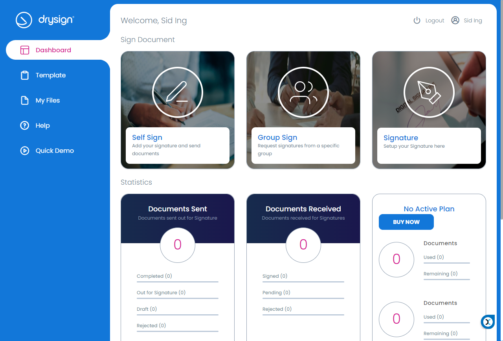
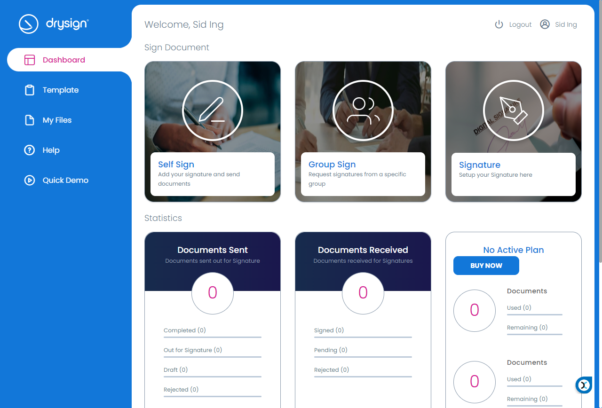
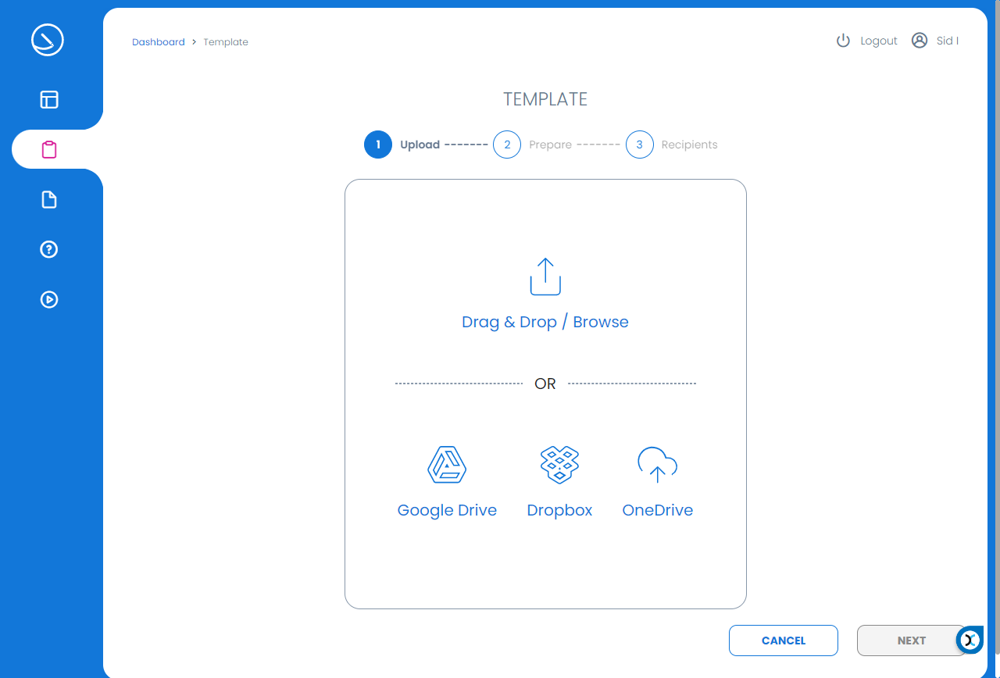
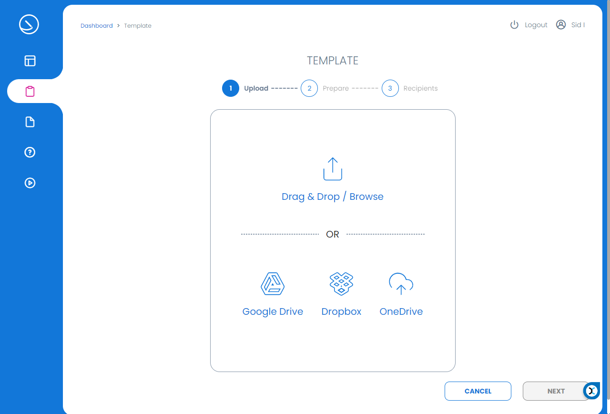

-
DMR Regression Suite
0h 11m 53s+680ms
14:24:07 PMDMR Regression Suite
09.20.2021 14:24:07 09.20.2021 14:36:01 0h 11m 53s+680msLogin Verification with valid credentialsGiven navigate to given URL "https://dmr-uat.exela.global/"Then enter username as "chitra"Then click on next buttonThen enter Password as "Pa$$w0rd"And click on signin buttonThen titile of the page should be "Exela DMR"Then Click on profile pictureAnd logoutLogin Verification with Invalid credentialsGiven navigate to given URL "https://dmr-uat.exela.global/"Then enter username as "chitra1"Then click on next buttonThen enter Password as "Pa$$w0rd11"And click on signin buttonThen System should throw a toggle message as "Invalid username/password"Validate with Invalid passwordGiven navigate to given URL "https://dmr-uat.exela.global/"Then enter username as "chitra"Then click on next buttonThen enter Password as "Pa$$w0rd11"And click on signin buttonThen System should throw a toggle message as "Invalid username/password"Validate with Incorrect UsernameGiven navigate to given URL "https://dmr-uat.exela.global/"Then enter username as "chitra1"Then click on next buttonThen enter Password as "Pa$$w0rd"And click on signin buttonThen System should throw a toggle message as "Invalid username/password"Ensure show Password icon in Login screenGiven navigate to given URL "https://dmr-uat.exela.global/"Then enter username as "chitra"Then click on next buttonThen enter Password as "Pa$$w0rd"Then Click on show password iconThen password should be visibleValidate details under the DashboardGiven navigate to given URL "https://dmr-uat.exela.global/"Then enter username as "chitra"Then click on next buttonThen enter Password as "Pa$$w0rd"And click on signin buttonThen click on toggle menuThen click on left pane menu "Dashboard"Then total mail should be enabledThen opened mail should be enabledThen un opened mail should be enabledThen Click on profile pictureAnd logoutView Mail action distribution graph under DashboardGiven navigate to given URL "https://dmr-uat.exela.global/"Then enter username as "chitra"Then click on next buttonThen enter Password as "Pa$$w0rd"And click on signin buttonThen click on toggle menuThen click on left pane menu "Dashboard"Then Click on profile pictureAnd logoutView Aging Summary graph under DashboardGiven navigate to given URL "https://dmr-uat.exela.global/"Then enter username as "chitra"Then click on next buttonThen enter Password as "Pa$$w0rd"And click on signin buttonThen click on toggle menuThen click on left pane menu "Dashboard"Then Click on profile pictureAnd logoutTop ten recipients under DashboardGiven navigate to given URL "https://dmr-uat.exela.global/"Then enter username as "chitra"Then click on next buttonThen enter Password as "Pa$$w0rd"And click on signin buttonThen click on toggle menuThen click on left pane menu "Dashboard"When click on "Volume by Location/Site" dropdown optionThen system should display graph filter options as "All, Last 15 Days, Last 30 Days, Last 90 Days, Last Week"Step skippedBase.waitToPageRender(Scenario)Step skippedThen Click on profile pictureStep skippedBase.waitToPageRender(Scenario)Step skippedAnd logoutStep skippedBase.waitToPageRender(Scenario)Step skippedBase.closeBrowser(Scenario) View Top ten Senders under DashboardGiven navigate to given URL "https://dmr-uat.exela.global/"Then enter username as "chitra"Then click on next buttonThen enter Password as "Pa$$w0rd"And click on signin buttonThen click on toggle menuThen click on left pane menu "Dashboard"When click on "Top 10 mail Scanning location" dropdown optionThen system should display graph filter options as "All, Last 15 Days, Last 30 Days, Last 90 Days, Last Week"Then Click on profile pictureAnd logoutValidate Re-route action is workingGiven navigate to given URL "https://dmr-uat.exela.global/"Then enter username as "chitra"Then click on next buttonThen enter Password as "Pa$$w0rd"And click on signin buttonThen Click on profile pictureThen Click on SwitchTo optionThen Switch to "Mail Admin(Mail User)"Then click OK buttonStep skippedBase.waitToPageRender(Scenario)Step skippedThen Move the document from Inbox to AutoSharedBox user boxStep skippedBase.waitToPageRender(Scenario)Step skippedThen System should throw a toggle message as "Document moved successfully"Step skippedBase.waitToPageRender(Scenario)Step skippedThen click on AutoSharedBox user boxStep skippedBase.waitToPageRender(Scenario)Step skippedThen Move the document from AutoSharedBox box to Inbox boxStep skippedBase.waitToPageRender(Scenario)Step skippedThen System should throw a toggle message as "Document moved successfully"Step skippedBase.waitToPageRender(Scenario)Step skippedThen Click on profile pictureStep skippedBase.waitToPageRender(Scenario)Step skippedAnd logoutStep skippedBase.waitToPageRender(Scenario)Step skippedBase.closeBrowser(Scenario)
View Top ten Senders under DashboardGiven navigate to given URL "https://dmr-uat.exela.global/"Then enter username as "chitra"Then click on next buttonThen enter Password as "Pa$$w0rd"And click on signin buttonThen click on toggle menuThen click on left pane menu "Dashboard"When click on "Top 10 mail Scanning location" dropdown optionThen system should display graph filter options as "All, Last 15 Days, Last 30 Days, Last 90 Days, Last Week"Then Click on profile pictureAnd logoutValidate Re-route action is workingGiven navigate to given URL "https://dmr-uat.exela.global/"Then enter username as "chitra"Then click on next buttonThen enter Password as "Pa$$w0rd"And click on signin buttonThen Click on profile pictureThen Click on SwitchTo optionThen Switch to "Mail Admin(Mail User)"Then click OK buttonStep skippedBase.waitToPageRender(Scenario)Step skippedThen Move the document from Inbox to AutoSharedBox user boxStep skippedBase.waitToPageRender(Scenario)Step skippedThen System should throw a toggle message as "Document moved successfully"Step skippedBase.waitToPageRender(Scenario)Step skippedThen click on AutoSharedBox user boxStep skippedBase.waitToPageRender(Scenario)Step skippedThen Move the document from AutoSharedBox box to Inbox boxStep skippedBase.waitToPageRender(Scenario)Step skippedThen System should throw a toggle message as "Document moved successfully"Step skippedBase.waitToPageRender(Scenario)Step skippedThen Click on profile pictureStep skippedBase.waitToPageRender(Scenario)Step skippedAnd logoutStep skippedBase.waitToPageRender(Scenario)Step skippedBase.closeBrowser(Scenario) Validate Send to action is workingGiven navigate to given URL "https://dmr-uat.exela.global/"Then enter username as "chitra"Then click on next buttonThen enter Password as "Pa$$w0rd"And click on signin buttonThen Click on profile pictureThen Click on SwitchTo optionThen Switch to "Mail Admin(Mail User)"Then click OK buttonStep skippedBase.waitToPageRender(Scenario)Step skippedThen select an emailStep skippedBase.waitToPageRender(Scenario)Step skippedThen select action as "Send To"Step skippedBase.waitToPageRender(Scenario)Step skippedThen enter recepient as "testroleuat@yopmail.com" and select itStep skippedBase.waitToPageRender(Scenario)Step skippedWhen click on send butnStep skippedBase.waitToPageRender(Scenario)Step skippedThen click on send mail buttonStep skippedBase.waitToPageRender(Scenario)Step skippedThen System should throw a toggle message as "Digital Mail Sent successfully"Step skippedBase.waitToPageRender(Scenario)Step skippedThen Click on profile pictureStep skippedBase.waitToPageRender(Scenario)Step skippedAnd logoutStep skippedBase.waitToPageRender(Scenario)Step skippedThen navigate to yopmail URL "http://www.yopmail.com/en/"Step skippedBase.waitToPageRender(Scenario)Step skippedThen enter yopmail id as "testroleuat@yopmail.com"Step skippedBase.waitToPageRender(Scenario)Step skippedWhen click on check inboxStep skippedBase.waitToPageRender(Scenario)Step skippedBase.closeBrowser(Scenario)
Validate Send to action is workingGiven navigate to given URL "https://dmr-uat.exela.global/"Then enter username as "chitra"Then click on next buttonThen enter Password as "Pa$$w0rd"And click on signin buttonThen Click on profile pictureThen Click on SwitchTo optionThen Switch to "Mail Admin(Mail User)"Then click OK buttonStep skippedBase.waitToPageRender(Scenario)Step skippedThen select an emailStep skippedBase.waitToPageRender(Scenario)Step skippedThen select action as "Send To"Step skippedBase.waitToPageRender(Scenario)Step skippedThen enter recepient as "testroleuat@yopmail.com" and select itStep skippedBase.waitToPageRender(Scenario)Step skippedWhen click on send butnStep skippedBase.waitToPageRender(Scenario)Step skippedThen click on send mail buttonStep skippedBase.waitToPageRender(Scenario)Step skippedThen System should throw a toggle message as "Digital Mail Sent successfully"Step skippedBase.waitToPageRender(Scenario)Step skippedThen Click on profile pictureStep skippedBase.waitToPageRender(Scenario)Step skippedAnd logoutStep skippedBase.waitToPageRender(Scenario)Step skippedThen navigate to yopmail URL "http://www.yopmail.com/en/"Step skippedBase.waitToPageRender(Scenario)Step skippedThen enter yopmail id as "testroleuat@yopmail.com"Step skippedBase.waitToPageRender(Scenario)Step skippedWhen click on check inboxStep skippedBase.waitToPageRender(Scenario)Step skippedBase.closeBrowser(Scenario) Validate Label Action is workingGiven navigate to given URL "https://dmr-uat.exela.global/"Then enter username as "chitra"Then click on next buttonThen enter Password as "Pa$$w0rd"And click on signin buttonThen Click on profile pictureThen Click on SwitchTo optionThen Switch to "Mail Admin(Mail User)"Then click OK buttonStep skippedBase.waitToPageRender(Scenario)Step skippedThen select an emailStep skippedBase.waitToPageRender(Scenario)Step skippedThen select action as "Manage Label"Step skippedBase.waitToPageRender(Scenario)Step skippedThen select label "label 1"Step skippedBase.waitToPageRender(Scenario)Step skippedWhen click on Assign LabelStep skippedBase.waitToPageRender(Scenario)Step skippedThen System should throw a toggle message as "Label Assigned Successfully"Step skippedBase.waitToPageRender(Scenario)Step skippedThen click on close buttonStep skippedBase.waitToPageRender(Scenario)Step skippedThen Click on profile pictureStep skippedBase.waitToPageRender(Scenario)Step skippedAnd logoutStep skippedBase.waitToPageRender(Scenario)Step skippedBase.closeBrowser(Scenario)
Validate Label Action is workingGiven navigate to given URL "https://dmr-uat.exela.global/"Then enter username as "chitra"Then click on next buttonThen enter Password as "Pa$$w0rd"And click on signin buttonThen Click on profile pictureThen Click on SwitchTo optionThen Switch to "Mail Admin(Mail User)"Then click OK buttonStep skippedBase.waitToPageRender(Scenario)Step skippedThen select an emailStep skippedBase.waitToPageRender(Scenario)Step skippedThen select action as "Manage Label"Step skippedBase.waitToPageRender(Scenario)Step skippedThen select label "label 1"Step skippedBase.waitToPageRender(Scenario)Step skippedWhen click on Assign LabelStep skippedBase.waitToPageRender(Scenario)Step skippedThen System should throw a toggle message as "Label Assigned Successfully"Step skippedBase.waitToPageRender(Scenario)Step skippedThen click on close buttonStep skippedBase.waitToPageRender(Scenario)Step skippedThen Click on profile pictureStep skippedBase.waitToPageRender(Scenario)Step skippedAnd logoutStep skippedBase.waitToPageRender(Scenario)Step skippedBase.closeBrowser(Scenario) Open Volume ReportGiven navigate to given URL "https://dmr-uat.exela.global/"Then enter username as "chitra"Then click on next buttonThen enter Password as "Pa$$w0rd"And click on signin buttonThen click on toggle menuThen click on left pane menu "Reports"Then click on the report "Volume Report"Then select from date as "09/14/2020"Then click on download iconThen Click on profile pictureAnd logoutOpen Action summary ReportGiven navigate to given URL "https://dmr-uat.exela.global/"Then enter username as "chitra"Then click on next buttonThen enter Password as "Pa$$w0rd"And click on signin buttonThen click on toggle menuThen click on left pane menu "Reports"Then click on the report "Action Summary Report"Then select from date as "09/14/2020"Then click on download iconThen Click on profile pictureAnd logoutOpen Chain of CustodyGiven navigate to given URL "https://dmr-uat.exela.global/"Then enter username as "chitra"Then click on next buttonThen enter Password as "Pa$$w0rd"And click on signin buttonThen click on toggle menuThen click on left pane menu "Reports"Then click on the report "Chain of Custody Report"Then select from date as "09/14/2020"Then click on download iconThen Click on profile pictureAnd logoutOpen Recon ReportGiven navigate to given URL "https://dmr-uat.exela.global/"Then enter username as "chitra"Then click on next buttonThen enter Password as "Pa$$w0rd"And click on signin buttonThen click on toggle menuThen click on left pane menu "Reports"Then click on the report "Reconciliation Report"Then select from date as "09/14/2020"Then click on download iconThen Click on profile pictureAnd logoutOpen Retention ReportGiven navigate to given URL "https://dmr-uat.exela.global/"Then enter username as "chitra"Then click on next buttonThen enter Password as "Pa$$w0rd"And click on signin buttonThen click on toggle menuThen click on left pane menu "Reports"Then click on the report "Retention Aging Report"Then click on download iconThen Click on profile pictureAnd logoutOpen Blocked sender ReportGiven navigate to given URL "https://dmr-uat.exela.global/"Then enter username as "chitra"Then click on next buttonThen enter Password as "Pa$$w0rd"And click on signin buttonThen click on toggle menuThen click on left pane menu "Reports"Then click on the report "Blocked Senders Report"Then click on download iconThen Click on profile pictureAnd logoutOpen Inventory ReportGiven navigate to given URL "https://dmr-uat.exela.global/"Then enter username as "chitra"Then click on next buttonThen enter Password as "Pa$$w0rd"And click on signin buttonThen click on toggle menuThen click on left pane menu "Reports"Then click on the report "Inventory Report"Then select from date as "09/14/2020"Then click on download iconThen Click on profile pictureAnd logoutOpen Volume by SourceGiven navigate to given URL "https://dmr-uat.exela.global/"Then enter username as "chitra"Then click on next buttonThen enter Password as "Pa$$w0rd"And click on signin buttonThen click on toggle menuThen click on left pane menu "Reports"Then click on the report "Volume By Source Report"Then select from date as "09/14/2020"Then click on download iconThen Click on profile pictureAnd logoutOpen Audit ReportGiven navigate to given URL "https://dmr-uat.exela.global/"Then enter username as "chitra"Then click on next buttonThen enter Password as "Pa$$w0rd"And click on signin buttonThen click on toggle menuThen click on left pane menu "Reports"Then click on the report "Audit Report"Then select from date as "09/14/2020"Then click on download iconThen Click on profile pictureAnd logoutHealth Check with client adminGiven navigate to given URL "https://dmr-uat.exela.global/"Then enter username as "chitra"Then click on next buttonThen enter Password as "Pa$$w0rd"And click on signin buttonThen redirect the page to "https://dmr-uat.exela.global/#/admin/health"Then DMR core & DB, Ingester ,Exela auth & DB and eFirst-Archive status should be in "Connected" statusThen Click on profile pictureAnd logout
Open Volume ReportGiven navigate to given URL "https://dmr-uat.exela.global/"Then enter username as "chitra"Then click on next buttonThen enter Password as "Pa$$w0rd"And click on signin buttonThen click on toggle menuThen click on left pane menu "Reports"Then click on the report "Volume Report"Then select from date as "09/14/2020"Then click on download iconThen Click on profile pictureAnd logoutOpen Action summary ReportGiven navigate to given URL "https://dmr-uat.exela.global/"Then enter username as "chitra"Then click on next buttonThen enter Password as "Pa$$w0rd"And click on signin buttonThen click on toggle menuThen click on left pane menu "Reports"Then click on the report "Action Summary Report"Then select from date as "09/14/2020"Then click on download iconThen Click on profile pictureAnd logoutOpen Chain of CustodyGiven navigate to given URL "https://dmr-uat.exela.global/"Then enter username as "chitra"Then click on next buttonThen enter Password as "Pa$$w0rd"And click on signin buttonThen click on toggle menuThen click on left pane menu "Reports"Then click on the report "Chain of Custody Report"Then select from date as "09/14/2020"Then click on download iconThen Click on profile pictureAnd logoutOpen Recon ReportGiven navigate to given URL "https://dmr-uat.exela.global/"Then enter username as "chitra"Then click on next buttonThen enter Password as "Pa$$w0rd"And click on signin buttonThen click on toggle menuThen click on left pane menu "Reports"Then click on the report "Reconciliation Report"Then select from date as "09/14/2020"Then click on download iconThen Click on profile pictureAnd logoutOpen Retention ReportGiven navigate to given URL "https://dmr-uat.exela.global/"Then enter username as "chitra"Then click on next buttonThen enter Password as "Pa$$w0rd"And click on signin buttonThen click on toggle menuThen click on left pane menu "Reports"Then click on the report "Retention Aging Report"Then click on download iconThen Click on profile pictureAnd logoutOpen Blocked sender ReportGiven navigate to given URL "https://dmr-uat.exela.global/"Then enter username as "chitra"Then click on next buttonThen enter Password as "Pa$$w0rd"And click on signin buttonThen click on toggle menuThen click on left pane menu "Reports"Then click on the report "Blocked Senders Report"Then click on download iconThen Click on profile pictureAnd logoutOpen Inventory ReportGiven navigate to given URL "https://dmr-uat.exela.global/"Then enter username as "chitra"Then click on next buttonThen enter Password as "Pa$$w0rd"And click on signin buttonThen click on toggle menuThen click on left pane menu "Reports"Then click on the report "Inventory Report"Then select from date as "09/14/2020"Then click on download iconThen Click on profile pictureAnd logoutOpen Volume by SourceGiven navigate to given URL "https://dmr-uat.exela.global/"Then enter username as "chitra"Then click on next buttonThen enter Password as "Pa$$w0rd"And click on signin buttonThen click on toggle menuThen click on left pane menu "Reports"Then click on the report "Volume By Source Report"Then select from date as "09/14/2020"Then click on download iconThen Click on profile pictureAnd logoutOpen Audit ReportGiven navigate to given URL "https://dmr-uat.exela.global/"Then enter username as "chitra"Then click on next buttonThen enter Password as "Pa$$w0rd"And click on signin buttonThen click on toggle menuThen click on left pane menu "Reports"Then click on the report "Audit Report"Then select from date as "09/14/2020"Then click on download iconThen Click on profile pictureAnd logoutHealth Check with client adminGiven navigate to given URL "https://dmr-uat.exela.global/"Then enter username as "chitra"Then click on next buttonThen enter Password as "Pa$$w0rd"And click on signin buttonThen redirect the page to "https://dmr-uat.exela.global/#/admin/health"Then DMR core & DB, Ingester ,Exela auth & DB and eFirst-Archive status should be in "Connected" statusThen Click on profile pictureAnd logout -
Verify functioanltiy present on User Profile Page
10h 15m 40s+572ms
14:36:05 PMVerify functioanltiy present on User Profile Page
09.20.2021 14:36:05 09.21.2021 00:51:46 10h 15m 40s+572msVerify functionality of Delegate Inbox for client adminGiven navigate to given URL "https://dmr-uat.exela.global/#/login"Then enter username as "chitra"Then click on next buttonThen enter Password as "Pa$$w0rd"And click on signin buttonThen Click on profile pictureThen Click on MyprofileWhen click on SettingsWhen on the toggle setting of "Delegate Inbox"When select from date as today and to date is additional of two days of todayWhen enter email id as "Chitra.test@yopmail.com" to whom you want to delegate the inboxWhen click on save button and get success msg as "Delegate user information saved successfully"Then Click on profile pictureAnd logoutThen navigate to yopmail URL "http://www.yopmail.com/en/"Then enter yopmail id as "Chitra.test@yopmail.com"When click on check inboxVerify User is able to create routing rule on move to folder actionGiven navigate to given URL "https://dmr-uat.exela.global/#/login"Then enter username as "chitra"Then click on next buttonThen enter Password as "Pa$$w0rd"And click on signin buttonThen Click on profile pictureWhen click on Routing ruleThen filter the rule name "TestRule1"And delete itWhen click on add buttonWhen click on drop down arrow "project code"When select drop down option as "Regression Suite_project"Step skippedBase.waitToPageRender(Scenario)Step skippedWhen enter rule name as "TestRule1"Step skippedBase.waitToPageRender(Scenario)Step skippedWhen click on trigger next buttonStep skippedBase.waitToPageRender(Scenario)Step skippedWhen click on add buttonStep skippedBase.waitToPageRender(Scenario)Step skippedWhen click on drop down arrow "Field*"Step skippedBase.waitToPageRender(Scenario)Step skippedWhen select drop down option as "Batch Priority"Step skippedBase.waitToPageRender(Scenario)Step skippedWhen click on drop down arrow "Condition*"Step skippedBase.waitToPageRender(Scenario)Step skippedWhen select drop down option as "Equal"Step skippedBase.waitToPageRender(Scenario)Step skippedWhen Enter value as "2"Step skippedBase.waitToPageRender(Scenario)Step skippedWhen click on save buttonStep skippedBase.waitToPageRender(Scenario)Step skippedWhen click on rule Next buttonStep skippedBase.waitToPageRender(Scenario)Step skippedWhen click on drop down arrow "Action*"Step skippedBase.waitToPageRender(Scenario)Step skippedWhen select drop down option as "Move To Folder"Step skippedBase.waitToPageRender(Scenario)Step skippedWhen click on lookupStep skippedBase.waitToPageRender(Scenario)Step skippedWhen select folder as "AutoSharedBox"Step skippedBase.waitToPageRender(Scenario)Step skippedThen click OK buttonStep skippedBase.waitToPageRender(Scenario)Step skippedWhen click on save buttonStep skippedBase.waitToPageRender(Scenario)Step skippedThen User should get success msg as "Auto routing details saved successfully."Step skippedBase.waitToPageRender(Scenario)Step skippedThen filter the rule name "TestRule1"Step skippedBase.waitToPageRender(Scenario)Step skippedAnd delete itStep skippedBase.waitToPageRender(Scenario)Step skippedBase.closeBrowser(Scenario) Verify User is able to create routing rule on Send To actionGiven navigate to given URL "https://dmr-uat.exela.global/#/login"Then enter username as "chitra"Then click on next buttonThen enter Password as "Pa$$w0rd"And click on signin buttonThen Click on profile pictureWhen click on Routing ruleThen filter the rule name "TestRule12"And delete itWhen click on add buttonWhen click on drop down arrow "project code"When select drop down option as "Regression Suite_project"Step skippedBase.waitToPageRender(Scenario)Step skippedWhen enter rule name as "TestRule12"Step skippedBase.waitToPageRender(Scenario)Step skippedWhen click on trigger next buttonStep skippedBase.waitToPageRender(Scenario)Step skippedWhen click on add buttonStep skippedBase.waitToPageRender(Scenario)Step skippedWhen click on drop down arrow "Field*"Step skippedBase.waitToPageRender(Scenario)Step skippedWhen select drop down option as "Batch Priority"Step skippedBase.waitToPageRender(Scenario)Step skippedWhen click on drop down arrow "Condition*"Step skippedBase.waitToPageRender(Scenario)Step skippedWhen select drop down option as "Equal"Step skippedBase.waitToPageRender(Scenario)Step skippedWhen Enter value as "2"Step skippedBase.waitToPageRender(Scenario)Step skippedWhen click on save buttonStep skippedBase.waitToPageRender(Scenario)Step skippedWhen click on rule Next buttonStep skippedBase.waitToPageRender(Scenario)Step skippedWhen click on drop down arrow "Action*"Step skippedBase.waitToPageRender(Scenario)Step skippedWhen select drop down option as "Send To"Step skippedBase.waitToPageRender(Scenario)Step skippedWhen click on lookupStep skippedBase.waitToPageRender(Scenario)Step skippedThen enter recepient as "dmruattesting@yopmail.com" and select itStep skippedBase.waitToPageRender(Scenario)Step skippedWhen click on SendStep skippedBase.waitToPageRender(Scenario)Step skippedWhen click on save buttonStep skippedBase.waitToPageRender(Scenario)Step skippedThen User should get success msg as "Auto routing details saved successfully."Step skippedBase.waitToPageRender(Scenario)Step skippedThen filter the rule name "TestRule12"Step skippedBase.waitToPageRender(Scenario)Step skippedAnd delete itStep skippedBase.waitToPageRender(Scenario)Step skippedBase.closeBrowser(Scenario)
Verify User is able to create routing rule on Send To actionGiven navigate to given URL "https://dmr-uat.exela.global/#/login"Then enter username as "chitra"Then click on next buttonThen enter Password as "Pa$$w0rd"And click on signin buttonThen Click on profile pictureWhen click on Routing ruleThen filter the rule name "TestRule12"And delete itWhen click on add buttonWhen click on drop down arrow "project code"When select drop down option as "Regression Suite_project"Step skippedBase.waitToPageRender(Scenario)Step skippedWhen enter rule name as "TestRule12"Step skippedBase.waitToPageRender(Scenario)Step skippedWhen click on trigger next buttonStep skippedBase.waitToPageRender(Scenario)Step skippedWhen click on add buttonStep skippedBase.waitToPageRender(Scenario)Step skippedWhen click on drop down arrow "Field*"Step skippedBase.waitToPageRender(Scenario)Step skippedWhen select drop down option as "Batch Priority"Step skippedBase.waitToPageRender(Scenario)Step skippedWhen click on drop down arrow "Condition*"Step skippedBase.waitToPageRender(Scenario)Step skippedWhen select drop down option as "Equal"Step skippedBase.waitToPageRender(Scenario)Step skippedWhen Enter value as "2"Step skippedBase.waitToPageRender(Scenario)Step skippedWhen click on save buttonStep skippedBase.waitToPageRender(Scenario)Step skippedWhen click on rule Next buttonStep skippedBase.waitToPageRender(Scenario)Step skippedWhen click on drop down arrow "Action*"Step skippedBase.waitToPageRender(Scenario)Step skippedWhen select drop down option as "Send To"Step skippedBase.waitToPageRender(Scenario)Step skippedWhen click on lookupStep skippedBase.waitToPageRender(Scenario)Step skippedThen enter recepient as "dmruattesting@yopmail.com" and select itStep skippedBase.waitToPageRender(Scenario)Step skippedWhen click on SendStep skippedBase.waitToPageRender(Scenario)Step skippedWhen click on save buttonStep skippedBase.waitToPageRender(Scenario)Step skippedThen User should get success msg as "Auto routing details saved successfully."Step skippedBase.waitToPageRender(Scenario)Step skippedThen filter the rule name "TestRule12"Step skippedBase.waitToPageRender(Scenario)Step skippedAnd delete itStep skippedBase.waitToPageRender(Scenario)Step skippedBase.closeBrowser(Scenario) Verify User is able to create routing rule on Re-route actionGiven navigate to given URL "https://dmr-uat.exela.global/#/login"Then enter username as "chitra"Then click on next buttonThen enter Password as "Pa$$w0rd"And click on signin buttonThen Click on profile pictureWhen click on Routing ruleThen filter the rule name "TestRule13"And delete itWhen click on add buttonWhen click on drop down arrow "project code"When select drop down option as "Regression Suite_project"Step skippedBase.waitToPageRender(Scenario)Step skippedWhen enter rule name as "TestRule13"Step skippedBase.waitToPageRender(Scenario)Step skippedWhen click on trigger next buttonStep skippedBase.waitToPageRender(Scenario)Step skippedWhen click on add buttonStep skippedBase.waitToPageRender(Scenario)Step skippedWhen click on drop down arrow "Field*"Step skippedBase.waitToPageRender(Scenario)Step skippedWhen select drop down option as "Batch Priority"Step skippedBase.waitToPageRender(Scenario)Step skippedWhen click on drop down arrow "Condition*"Step skippedBase.waitToPageRender(Scenario)Step skippedWhen select drop down option as "Equal"Step skippedBase.waitToPageRender(Scenario)Step skippedWhen Enter value as "2"Step skippedBase.waitToPageRender(Scenario)Step skippedWhen click on save buttonStep skippedBase.waitToPageRender(Scenario)Step skippedWhen click on rule Next buttonStep skippedBase.waitToPageRender(Scenario)Step skippedWhen click on drop down arrow "Action*"Step skippedBase.waitToPageRender(Scenario)Step skippedWhen select drop down option as "Re-Route"Step skippedBase.waitToPageRender(Scenario)Step skippedWhen click on lookupStep skippedBase.waitToPageRender(Scenario)Step skippedThen enter re-route recepient as "chitra.test@yopmail.com" and select itStep skippedBase.waitToPageRender(Scenario)Step skippedWhen click on SendStep skippedBase.waitToPageRender(Scenario)Step skippedWhen click on save buttonStep skippedBase.waitToPageRender(Scenario)Step skippedThen User should get success msg as "Auto routing details saved successfully."Step skippedBase.waitToPageRender(Scenario)Step skippedThen filter the rule name "TestRule13"Step skippedBase.waitToPageRender(Scenario)Step skippedAnd delete itStep skippedBase.waitToPageRender(Scenario)Step skippedBase.closeBrowser(Scenario)Verify User is able to create routing rule on Delete actionGiven navigate to given URL "https://dmr-uat.exela.global/#/login"Then enter username as "chitra"Then click on next buttonThen enter Password as "Pa$$w0rd"And click on signin buttonThen Click on profile pictureWhen click on Routing ruleThen filter the rule name "TestRule14"And delete itWhen click on add buttonWhen click on drop down arrow "project code"When select drop down option as "Regression Suite_project"Step skippedBase.waitToPageRender(Scenario)Step skippedWhen enter rule name as "TestRule14"Step skippedBase.waitToPageRender(Scenario)Step skippedWhen click on trigger next buttonStep skippedBase.waitToPageRender(Scenario)Step skippedWhen click on add buttonStep skippedBase.waitToPageRender(Scenario)Step skippedWhen click on drop down arrow "Field*"Step skippedBase.waitToPageRender(Scenario)Step skippedWhen select drop down option as "Batch Priority"Step skippedBase.waitToPageRender(Scenario)Step skippedWhen click on drop down arrow "Condition*"Step skippedBase.waitToPageRender(Scenario)Step skippedWhen select drop down option as "Equal"Step skippedBase.waitToPageRender(Scenario)Step skippedWhen Enter value as "2"Step skippedBase.waitToPageRender(Scenario)Step skippedWhen click on save buttonStep skippedBase.waitToPageRender(Scenario)Step skippedWhen click on rule Next buttonStep skippedBase.waitToPageRender(Scenario)Step skippedWhen click on drop down arrow "Action*"Step skippedBase.waitToPageRender(Scenario)Step skippedWhen select drop down option as "Delete"Step skippedBase.waitToPageRender(Scenario)Step skippedWhen click on rule saveStep skippedBase.waitToPageRender(Scenario)Step skippedThen User should get success msg as "Auto routing details saved successfully."Step skippedBase.waitToPageRender(Scenario)Step skippedThen filter the rule name "TestRule14"Step skippedBase.waitToPageRender(Scenario)Step skippedAnd delete itStep skippedBase.waitToPageRender(Scenario)Step skippedBase.closeBrowser(Scenario)
Verify User is able to create routing rule on Re-route actionGiven navigate to given URL "https://dmr-uat.exela.global/#/login"Then enter username as "chitra"Then click on next buttonThen enter Password as "Pa$$w0rd"And click on signin buttonThen Click on profile pictureWhen click on Routing ruleThen filter the rule name "TestRule13"And delete itWhen click on add buttonWhen click on drop down arrow "project code"When select drop down option as "Regression Suite_project"Step skippedBase.waitToPageRender(Scenario)Step skippedWhen enter rule name as "TestRule13"Step skippedBase.waitToPageRender(Scenario)Step skippedWhen click on trigger next buttonStep skippedBase.waitToPageRender(Scenario)Step skippedWhen click on add buttonStep skippedBase.waitToPageRender(Scenario)Step skippedWhen click on drop down arrow "Field*"Step skippedBase.waitToPageRender(Scenario)Step skippedWhen select drop down option as "Batch Priority"Step skippedBase.waitToPageRender(Scenario)Step skippedWhen click on drop down arrow "Condition*"Step skippedBase.waitToPageRender(Scenario)Step skippedWhen select drop down option as "Equal"Step skippedBase.waitToPageRender(Scenario)Step skippedWhen Enter value as "2"Step skippedBase.waitToPageRender(Scenario)Step skippedWhen click on save buttonStep skippedBase.waitToPageRender(Scenario)Step skippedWhen click on rule Next buttonStep skippedBase.waitToPageRender(Scenario)Step skippedWhen click on drop down arrow "Action*"Step skippedBase.waitToPageRender(Scenario)Step skippedWhen select drop down option as "Re-Route"Step skippedBase.waitToPageRender(Scenario)Step skippedWhen click on lookupStep skippedBase.waitToPageRender(Scenario)Step skippedThen enter re-route recepient as "chitra.test@yopmail.com" and select itStep skippedBase.waitToPageRender(Scenario)Step skippedWhen click on SendStep skippedBase.waitToPageRender(Scenario)Step skippedWhen click on save buttonStep skippedBase.waitToPageRender(Scenario)Step skippedThen User should get success msg as "Auto routing details saved successfully."Step skippedBase.waitToPageRender(Scenario)Step skippedThen filter the rule name "TestRule13"Step skippedBase.waitToPageRender(Scenario)Step skippedAnd delete itStep skippedBase.waitToPageRender(Scenario)Step skippedBase.closeBrowser(Scenario)Verify User is able to create routing rule on Delete actionGiven navigate to given URL "https://dmr-uat.exela.global/#/login"Then enter username as "chitra"Then click on next buttonThen enter Password as "Pa$$w0rd"And click on signin buttonThen Click on profile pictureWhen click on Routing ruleThen filter the rule name "TestRule14"And delete itWhen click on add buttonWhen click on drop down arrow "project code"When select drop down option as "Regression Suite_project"Step skippedBase.waitToPageRender(Scenario)Step skippedWhen enter rule name as "TestRule14"Step skippedBase.waitToPageRender(Scenario)Step skippedWhen click on trigger next buttonStep skippedBase.waitToPageRender(Scenario)Step skippedWhen click on add buttonStep skippedBase.waitToPageRender(Scenario)Step skippedWhen click on drop down arrow "Field*"Step skippedBase.waitToPageRender(Scenario)Step skippedWhen select drop down option as "Batch Priority"Step skippedBase.waitToPageRender(Scenario)Step skippedWhen click on drop down arrow "Condition*"Step skippedBase.waitToPageRender(Scenario)Step skippedWhen select drop down option as "Equal"Step skippedBase.waitToPageRender(Scenario)Step skippedWhen Enter value as "2"Step skippedBase.waitToPageRender(Scenario)Step skippedWhen click on save buttonStep skippedBase.waitToPageRender(Scenario)Step skippedWhen click on rule Next buttonStep skippedBase.waitToPageRender(Scenario)Step skippedWhen click on drop down arrow "Action*"Step skippedBase.waitToPageRender(Scenario)Step skippedWhen select drop down option as "Delete"Step skippedBase.waitToPageRender(Scenario)Step skippedWhen click on rule saveStep skippedBase.waitToPageRender(Scenario)Step skippedThen User should get success msg as "Auto routing details saved successfully."Step skippedBase.waitToPageRender(Scenario)Step skippedThen filter the rule name "TestRule14"Step skippedBase.waitToPageRender(Scenario)Step skippedAnd delete itStep skippedBase.waitToPageRender(Scenario)Step skippedBase.closeBrowser(Scenario) Verify User is able to create routing rule on Assign label actionGiven navigate to given URL "https://dmr-uat.exela.global/#/login"Then enter username as "chitra"Then click on next buttonThen enter Password as "Pa$$w0rd"And click on signin buttonThen Click on profile pictureWhen click on Routing ruleThen filter the rule name "TestRule15"And delete itWhen click on add buttonWhen click on drop down arrow "project code"When select drop down option as "Regression Suite_project"Step skippedBase.waitToPageRender(Scenario)Step skippedWhen enter rule name as "TestRule15"Step skippedBase.waitToPageRender(Scenario)Step skippedWhen click on trigger next buttonStep skippedBase.waitToPageRender(Scenario)Step skippedWhen click on add buttonStep skippedBase.waitToPageRender(Scenario)Step skippedWhen click on drop down arrow "Field*"Step skippedBase.waitToPageRender(Scenario)Step skippedWhen select drop down option as "Batch Priority"Step skippedBase.waitToPageRender(Scenario)Step skippedWhen click on drop down arrow "Condition*"Step skippedBase.waitToPageRender(Scenario)Step skippedWhen select drop down option as "Equal"Step skippedBase.waitToPageRender(Scenario)Step skippedWhen Enter value as "2"Step skippedBase.waitToPageRender(Scenario)Step skippedWhen click on save buttonStep skippedBase.waitToPageRender(Scenario)Step skippedWhen click on rule Next buttonStep skippedBase.waitToPageRender(Scenario)Step skippedWhen click on drop down arrow "Action*"Step skippedBase.waitToPageRender(Scenario)Step skippedWhen select drop down option as "Assign a Label"Step skippedBase.waitToPageRender(Scenario)Step skippedWhen click on drop down arrow "Select Label*"Step skippedBase.waitToPageRender(Scenario)Step skippedWhen select drop down option as "label 1"Step skippedBase.waitToPageRender(Scenario)Step skippedWhen click on rule saveStep skippedBase.waitToPageRender(Scenario)Step skippedThen User should get success msg as "Auto routing details saved successfully."Step skippedBase.waitToPageRender(Scenario)Step skippedThen filter the rule name "TestRule15"Step skippedBase.waitToPageRender(Scenario)Step skippedAnd delete itStep skippedBase.waitToPageRender(Scenario)Step skippedBase.closeBrowser(Scenario)Verify User is able to create routing rule on Deliver Physicallly and Digitally actionGiven navigate to given URL "https://dmr-uat.exela.global/#/login"Then enter username as "chitra"Then click on next buttonThen enter Password as "Pa$$w0rd"And click on signin buttonThen Click on profile pictureWhen click on Routing ruleThen filter the rule name "TestRule17"And delete itWhen click on add buttonWhen click on drop down arrow "project code"When select drop down option as "Regression Suite_project"Step skippedBase.waitToPageRender(Scenario)Step skippedWhen enter rule name as "TestRule17"Step skippedBase.waitToPageRender(Scenario)Step skippedWhen click on trigger next buttonStep skippedBase.waitToPageRender(Scenario)Step skippedWhen click on add buttonStep skippedBase.waitToPageRender(Scenario)Step skippedWhen click on drop down arrow "Field*"Step skippedBase.waitToPageRender(Scenario)Step skippedWhen select drop down option as "Batch Priority"Step skippedBase.waitToPageRender(Scenario)Step skippedWhen click on drop down arrow "Condition*"Step skippedBase.waitToPageRender(Scenario)Step skippedWhen select drop down option as "Equal"Step skippedBase.waitToPageRender(Scenario)Step skippedWhen Enter value as "2"Step skippedBase.waitToPageRender(Scenario)Step skippedWhen click on save buttonStep skippedBase.waitToPageRender(Scenario)Step skippedWhen click on rule Next buttonStep skippedBase.waitToPageRender(Scenario)Step skippedWhen click on drop down arrow "Action*"Step skippedBase.waitToPageRender(Scenario)Step skippedWhen select drop down option as "Deliver Physically & Digitally"Step skippedBase.waitToPageRender(Scenario)Step skippedWhen select delivery prference as "Hold for Pick-up"Step skippedBase.waitToPageRender(Scenario)Step skippedWhen click on create buttonStep skippedBase.waitToPageRender(Scenario)Step skippedWhen click on rule saveStep skippedBase.waitToPageRender(Scenario)Step skippedThen User should get success msg as "Auto routing details saved successfully."Step skippedBase.waitToPageRender(Scenario)Step skippedThen filter the rule name "TestRule17"Step skippedBase.waitToPageRender(Scenario)Step skippedAnd delete itStep skippedBase.waitToPageRender(Scenario)Step skippedBase.closeBrowser(Scenario)
Verify User is able to create routing rule on Assign label actionGiven navigate to given URL "https://dmr-uat.exela.global/#/login"Then enter username as "chitra"Then click on next buttonThen enter Password as "Pa$$w0rd"And click on signin buttonThen Click on profile pictureWhen click on Routing ruleThen filter the rule name "TestRule15"And delete itWhen click on add buttonWhen click on drop down arrow "project code"When select drop down option as "Regression Suite_project"Step skippedBase.waitToPageRender(Scenario)Step skippedWhen enter rule name as "TestRule15"Step skippedBase.waitToPageRender(Scenario)Step skippedWhen click on trigger next buttonStep skippedBase.waitToPageRender(Scenario)Step skippedWhen click on add buttonStep skippedBase.waitToPageRender(Scenario)Step skippedWhen click on drop down arrow "Field*"Step skippedBase.waitToPageRender(Scenario)Step skippedWhen select drop down option as "Batch Priority"Step skippedBase.waitToPageRender(Scenario)Step skippedWhen click on drop down arrow "Condition*"Step skippedBase.waitToPageRender(Scenario)Step skippedWhen select drop down option as "Equal"Step skippedBase.waitToPageRender(Scenario)Step skippedWhen Enter value as "2"Step skippedBase.waitToPageRender(Scenario)Step skippedWhen click on save buttonStep skippedBase.waitToPageRender(Scenario)Step skippedWhen click on rule Next buttonStep skippedBase.waitToPageRender(Scenario)Step skippedWhen click on drop down arrow "Action*"Step skippedBase.waitToPageRender(Scenario)Step skippedWhen select drop down option as "Assign a Label"Step skippedBase.waitToPageRender(Scenario)Step skippedWhen click on drop down arrow "Select Label*"Step skippedBase.waitToPageRender(Scenario)Step skippedWhen select drop down option as "label 1"Step skippedBase.waitToPageRender(Scenario)Step skippedWhen click on rule saveStep skippedBase.waitToPageRender(Scenario)Step skippedThen User should get success msg as "Auto routing details saved successfully."Step skippedBase.waitToPageRender(Scenario)Step skippedThen filter the rule name "TestRule15"Step skippedBase.waitToPageRender(Scenario)Step skippedAnd delete itStep skippedBase.waitToPageRender(Scenario)Step skippedBase.closeBrowser(Scenario)Verify User is able to create routing rule on Deliver Physicallly and Digitally actionGiven navigate to given URL "https://dmr-uat.exela.global/#/login"Then enter username as "chitra"Then click on next buttonThen enter Password as "Pa$$w0rd"And click on signin buttonThen Click on profile pictureWhen click on Routing ruleThen filter the rule name "TestRule17"And delete itWhen click on add buttonWhen click on drop down arrow "project code"When select drop down option as "Regression Suite_project"Step skippedBase.waitToPageRender(Scenario)Step skippedWhen enter rule name as "TestRule17"Step skippedBase.waitToPageRender(Scenario)Step skippedWhen click on trigger next buttonStep skippedBase.waitToPageRender(Scenario)Step skippedWhen click on add buttonStep skippedBase.waitToPageRender(Scenario)Step skippedWhen click on drop down arrow "Field*"Step skippedBase.waitToPageRender(Scenario)Step skippedWhen select drop down option as "Batch Priority"Step skippedBase.waitToPageRender(Scenario)Step skippedWhen click on drop down arrow "Condition*"Step skippedBase.waitToPageRender(Scenario)Step skippedWhen select drop down option as "Equal"Step skippedBase.waitToPageRender(Scenario)Step skippedWhen Enter value as "2"Step skippedBase.waitToPageRender(Scenario)Step skippedWhen click on save buttonStep skippedBase.waitToPageRender(Scenario)Step skippedWhen click on rule Next buttonStep skippedBase.waitToPageRender(Scenario)Step skippedWhen click on drop down arrow "Action*"Step skippedBase.waitToPageRender(Scenario)Step skippedWhen select drop down option as "Deliver Physically & Digitally"Step skippedBase.waitToPageRender(Scenario)Step skippedWhen select delivery prference as "Hold for Pick-up"Step skippedBase.waitToPageRender(Scenario)Step skippedWhen click on create buttonStep skippedBase.waitToPageRender(Scenario)Step skippedWhen click on rule saveStep skippedBase.waitToPageRender(Scenario)Step skippedThen User should get success msg as "Auto routing details saved successfully."Step skippedBase.waitToPageRender(Scenario)Step skippedThen filter the rule name "TestRule17"Step skippedBase.waitToPageRender(Scenario)Step skippedAnd delete itStep skippedBase.waitToPageRender(Scenario)Step skippedBase.closeBrowser(Scenario) Verify User is able to create routing rule on mark as junk actionGiven navigate to given URL "https://dmr-uat.exela.global/#/login"Then enter username as "chitra"Then click on next buttonThen enter Password as "Pa$$w0rd"And click on signin buttonThen Click on profile pictureWhen click on Routing ruleThen filter the rule name "TestRule16"And delete itWhen click on add buttonWhen click on drop down arrow "project code"When select drop down option as "Regression Suite_project"Step skippedBase.waitToPageRender(Scenario)Step skippedWhen enter rule name as "TestRule16"Step skippedBase.waitToPageRender(Scenario)Step skippedWhen click on trigger next buttonStep skippedBase.waitToPageRender(Scenario)Step skippedWhen click on add buttonStep skippedBase.waitToPageRender(Scenario)Step skippedWhen click on drop down arrow "Field*"Step skippedBase.waitToPageRender(Scenario)Step skippedWhen select drop down option as "Batch Priority"Step skippedBase.waitToPageRender(Scenario)Step skippedWhen click on drop down arrow "Condition*"Step skippedBase.waitToPageRender(Scenario)Step skippedWhen select drop down option as "Equal"Step skippedBase.waitToPageRender(Scenario)Step skippedWhen Enter value as "2"Step skippedBase.waitToPageRender(Scenario)Step skippedWhen click on save buttonStep skippedBase.waitToPageRender(Scenario)Step skippedWhen click on rule Next buttonStep skippedBase.waitToPageRender(Scenario)Step skippedWhen click on drop down arrow "Action*"Step skippedBase.waitToPageRender(Scenario)Step skippedWhen select drop down option as "Mark as Junk"Step skippedBase.waitToPageRender(Scenario)Step skippedWhen click on save buttonStep skippedBase.waitToPageRender(Scenario)Step skippedThen User should get success msg as "Auto routing details saved successfully."Step skippedBase.waitToPageRender(Scenario)Step skippedThen filter the rule name "TestRule16"Step skippedBase.waitToPageRender(Scenario)Step skippedAnd delete itStep skippedBase.waitToPageRender(Scenario)Step skippedBase.closeBrowser(Scenario)
Verify User is able to create routing rule on mark as junk actionGiven navigate to given URL "https://dmr-uat.exela.global/#/login"Then enter username as "chitra"Then click on next buttonThen enter Password as "Pa$$w0rd"And click on signin buttonThen Click on profile pictureWhen click on Routing ruleThen filter the rule name "TestRule16"And delete itWhen click on add buttonWhen click on drop down arrow "project code"When select drop down option as "Regression Suite_project"Step skippedBase.waitToPageRender(Scenario)Step skippedWhen enter rule name as "TestRule16"Step skippedBase.waitToPageRender(Scenario)Step skippedWhen click on trigger next buttonStep skippedBase.waitToPageRender(Scenario)Step skippedWhen click on add buttonStep skippedBase.waitToPageRender(Scenario)Step skippedWhen click on drop down arrow "Field*"Step skippedBase.waitToPageRender(Scenario)Step skippedWhen select drop down option as "Batch Priority"Step skippedBase.waitToPageRender(Scenario)Step skippedWhen click on drop down arrow "Condition*"Step skippedBase.waitToPageRender(Scenario)Step skippedWhen select drop down option as "Equal"Step skippedBase.waitToPageRender(Scenario)Step skippedWhen Enter value as "2"Step skippedBase.waitToPageRender(Scenario)Step skippedWhen click on save buttonStep skippedBase.waitToPageRender(Scenario)Step skippedWhen click on rule Next buttonStep skippedBase.waitToPageRender(Scenario)Step skippedWhen click on drop down arrow "Action*"Step skippedBase.waitToPageRender(Scenario)Step skippedWhen select drop down option as "Mark as Junk"Step skippedBase.waitToPageRender(Scenario)Step skippedWhen click on save buttonStep skippedBase.waitToPageRender(Scenario)Step skippedThen User should get success msg as "Auto routing details saved successfully."Step skippedBase.waitToPageRender(Scenario)Step skippedThen filter the rule name "TestRule16"Step skippedBase.waitToPageRender(Scenario)Step skippedAnd delete itStep skippedBase.waitToPageRender(Scenario)Step skippedBase.closeBrowser(Scenario) Verify User is able to add Office address in manage addressGiven navigate to given URL "https://dmr-uat.exela.global/#/login"Then enter username as "chitra"Then click on next buttonThen enter Password as "Pa$$w0rd"And click on signin buttonThen Click on profile pictureWhen Click on Manage AddressThen filter the address "Office"And delete itWhen Click on Add buttonWhen click on drop down arrow "Address Type*"When select drop down option as "Office"When Add Address Name as "S B ROAD Pune", Desk Number as "209" , Floor number as "9" ,mobileno. as "8099685985" ,city as "Pune" ,state as "Maharastra" ,country as "India" ,zip code as "411057"When click on save buttonThen User should successfully add Office address and get success msg as "Address saved successfully"Then filter the address "Office"And delete itVerify User is able to add Home address in manage addressGiven navigate to given URL "https://dmr-uat.exela.global/#/login"Then enter username as "chitra"Then click on next buttonThen enter Password as "Pa$$w0rd"And click on signin buttonThen Click on profile pictureWhen Click on Manage AddressThen filter the address "Home"And delete itWhen Click on Add buttonWhen click on drop down arrow "Address Type*"When select drop down option as "Home"When add Address Name "Dhanori Pune" ,mobileno as "8055935935" ,city as "Pune" ,state as "Maharastra" ,country "India" ,zip code as "411057"When click on save buttonThen User should successfully add Home address and get success msg as "Address saved successfully"Then filter the address "Home"And delete itVerify User is able to add Custom address in manage addressGiven navigate to given URL "https://dmr-uat.exela.global/#/login"Then enter username as "chitra"Then click on next buttonThen enter Password as "Pa$$w0rd"And click on signin buttonThen Click on profile pictureWhen Click on Manage AddressThen filter the address "Custom"And delete itWhen Click on Add buttonWhen click on drop down arrow "Address Type*"When select drop down option as "Custom"When enter address name as "testing"When add Address Name "Dhanori Pune" ,mobileno as "8055935935" ,city as "Pune" ,state as "Maharastra" ,country "India" ,zip code as "411057"When click on save buttonThen User should successfully add Custom address and get success msg as "Address saved successfully"Then filter the address "Custom"And delete itVerify Client admin is able to create routing rule via NQube-routing ruleGiven navigate to given URL "https://dmr-uat.exela.global/#/login"Then enter username as "chitra"Then click on next buttonThen enter Password as "Pa$$w0rd"And click on signin buttonThen click on toggle menuThen click on left pane menu "nQube"When click on "Routing Rule" nQube optionsThen filter the rule name "TestRule16"And delete itWhen click on add buttonWhen click on drop down arrow "project code"When select drop down option as "Regression Suite_project"Step skippedBase.waitToPageRender(Scenario)Step skippedWhen enter rule name as "TestRule16"Step skippedBase.waitToPageRender(Scenario)Step skippedWhen click on drop down arrow "invocationTrigger value"Step skippedBase.waitToPageRender(Scenario)Step skippedWhen select drop down option as "On Ingestion"Step skippedBase.waitToPageRender(Scenario)Step skippedWhen click on trigger next buttonStep skippedBase.waitToPageRender(Scenario)Step skippedWhen click on add buttonStep skippedBase.waitToPageRender(Scenario)Step skippedWhen click on drop down arrow "Field*"Step skippedBase.waitToPageRender(Scenario)Step skippedWhen select drop down option as "Batch Priority"Step skippedBase.waitToPageRender(Scenario)Step skippedWhen click on drop down arrow "Condition*"Step skippedBase.waitToPageRender(Scenario)Step skippedWhen select drop down option as "Equal"Step skippedBase.waitToPageRender(Scenario)Step skippedWhen Enter value as "2"Step skippedBase.waitToPageRender(Scenario)Step skippedWhen click on save buttonStep skippedBase.waitToPageRender(Scenario)Step skippedWhen click on rule Next buttonStep skippedBase.waitToPageRender(Scenario)Step skippedWhen click on drop down arrow "Action*"Step skippedBase.waitToPageRender(Scenario)Step skippedWhen select drop down option as "Deliver To"Step skippedBase.waitToPageRender(Scenario)Step skippedThen enter re-route recepient as "chitra.test@yopmail.com" and select itStep skippedBase.waitToPageRender(Scenario)Step skippedWhen click on save buttonStep skippedBase.waitToPageRender(Scenario)Step skippedThen User should get success msg as "Auto routing details added successfully"Step skippedBase.waitToPageRender(Scenario)Step skippedThen filter the rule name "TestRule16"Step skippedBase.waitToPageRender(Scenario)Step skippedAnd delete itStep skippedBase.waitToPageRender(Scenario)Step skippedBase.closeBrowser(Scenario)
Verify User is able to add Office address in manage addressGiven navigate to given URL "https://dmr-uat.exela.global/#/login"Then enter username as "chitra"Then click on next buttonThen enter Password as "Pa$$w0rd"And click on signin buttonThen Click on profile pictureWhen Click on Manage AddressThen filter the address "Office"And delete itWhen Click on Add buttonWhen click on drop down arrow "Address Type*"When select drop down option as "Office"When Add Address Name as "S B ROAD Pune", Desk Number as "209" , Floor number as "9" ,mobileno. as "8099685985" ,city as "Pune" ,state as "Maharastra" ,country as "India" ,zip code as "411057"When click on save buttonThen User should successfully add Office address and get success msg as "Address saved successfully"Then filter the address "Office"And delete itVerify User is able to add Home address in manage addressGiven navigate to given URL "https://dmr-uat.exela.global/#/login"Then enter username as "chitra"Then click on next buttonThen enter Password as "Pa$$w0rd"And click on signin buttonThen Click on profile pictureWhen Click on Manage AddressThen filter the address "Home"And delete itWhen Click on Add buttonWhen click on drop down arrow "Address Type*"When select drop down option as "Home"When add Address Name "Dhanori Pune" ,mobileno as "8055935935" ,city as "Pune" ,state as "Maharastra" ,country "India" ,zip code as "411057"When click on save buttonThen User should successfully add Home address and get success msg as "Address saved successfully"Then filter the address "Home"And delete itVerify User is able to add Custom address in manage addressGiven navigate to given URL "https://dmr-uat.exela.global/#/login"Then enter username as "chitra"Then click on next buttonThen enter Password as "Pa$$w0rd"And click on signin buttonThen Click on profile pictureWhen Click on Manage AddressThen filter the address "Custom"And delete itWhen Click on Add buttonWhen click on drop down arrow "Address Type*"When select drop down option as "Custom"When enter address name as "testing"When add Address Name "Dhanori Pune" ,mobileno as "8055935935" ,city as "Pune" ,state as "Maharastra" ,country "India" ,zip code as "411057"When click on save buttonThen User should successfully add Custom address and get success msg as "Address saved successfully"Then filter the address "Custom"And delete itVerify Client admin is able to create routing rule via NQube-routing ruleGiven navigate to given URL "https://dmr-uat.exela.global/#/login"Then enter username as "chitra"Then click on next buttonThen enter Password as "Pa$$w0rd"And click on signin buttonThen click on toggle menuThen click on left pane menu "nQube"When click on "Routing Rule" nQube optionsThen filter the rule name "TestRule16"And delete itWhen click on add buttonWhen click on drop down arrow "project code"When select drop down option as "Regression Suite_project"Step skippedBase.waitToPageRender(Scenario)Step skippedWhen enter rule name as "TestRule16"Step skippedBase.waitToPageRender(Scenario)Step skippedWhen click on drop down arrow "invocationTrigger value"Step skippedBase.waitToPageRender(Scenario)Step skippedWhen select drop down option as "On Ingestion"Step skippedBase.waitToPageRender(Scenario)Step skippedWhen click on trigger next buttonStep skippedBase.waitToPageRender(Scenario)Step skippedWhen click on add buttonStep skippedBase.waitToPageRender(Scenario)Step skippedWhen click on drop down arrow "Field*"Step skippedBase.waitToPageRender(Scenario)Step skippedWhen select drop down option as "Batch Priority"Step skippedBase.waitToPageRender(Scenario)Step skippedWhen click on drop down arrow "Condition*"Step skippedBase.waitToPageRender(Scenario)Step skippedWhen select drop down option as "Equal"Step skippedBase.waitToPageRender(Scenario)Step skippedWhen Enter value as "2"Step skippedBase.waitToPageRender(Scenario)Step skippedWhen click on save buttonStep skippedBase.waitToPageRender(Scenario)Step skippedWhen click on rule Next buttonStep skippedBase.waitToPageRender(Scenario)Step skippedWhen click on drop down arrow "Action*"Step skippedBase.waitToPageRender(Scenario)Step skippedWhen select drop down option as "Deliver To"Step skippedBase.waitToPageRender(Scenario)Step skippedThen enter re-route recepient as "chitra.test@yopmail.com" and select itStep skippedBase.waitToPageRender(Scenario)Step skippedWhen click on save buttonStep skippedBase.waitToPageRender(Scenario)Step skippedThen User should get success msg as "Auto routing details added successfully"Step skippedBase.waitToPageRender(Scenario)Step skippedThen filter the rule name "TestRule16"Step skippedBase.waitToPageRender(Scenario)Step skippedAnd delete itStep skippedBase.waitToPageRender(Scenario)Step skippedBase.closeBrowser(Scenario) Verify changes done in client setup- assign templates should be reflected in ReachOut-Mail template optionGiven navigate to given URL "https://dmr-uat.exela.global/#/login"Then enter username as "chitra"Then click on next buttonThen enter Password as "Pa$$w0rd"And click on signin buttonThen click on toggle menuThen click on left pane menu "Client Setup"When click edit buttonWhen click Assign templateWhen select one template checkbox as "Not My mail"When click on assign buttonThen User should get success msg as "Template assignment updated successfully"Then click on left pane menu "ReachOut"When click Mail TempalteWhen User should see selected templates as "Not My Mail"When edit content subject as "Edited Digital Mail - Re-Route Notification"When click on save buttonThen User should get success msg as "Action Template updated successfully"When User should see selected templates as "Not My Mail"When edit content subject as "Digital Mail - Re-Route Notification"When click on save buttonVerify client admin is able to add the pulse set upGiven navigate to given URL "https://dmr-uat.exela.global/#/login"Then enter username as "chitra"Then click on next buttonThen enter Password as "Pa$$w0rd"And click on signin buttonThen click on toggle menuThen click on left pane menu "Pulse Setup"Then filter the graph name "TestGraph"And delete itWhen click on Add newWhen enter Graph name as "TestGraph"When click on drop down arrow "Service Name*"When select drop down option as "Volume by Location/Site"When click on drop down arrow "Graph Type*"When select drop down option as "Donut Chart"When click on drop down arrow "Animation Name*"When select drop down option as "easeInQuad"When click on pulse setup addThen client admin should get success msg as "Added successfully!"Then filter the graph name "TestGraph"And delete itVerify client admin is able to add roles and newly created roles should see assinged menus after login.Given navigate to given URL "https://dmr-uat.exela.global/#/login"Then enter username as "chitra"Then click on next buttonThen enter Password as "Pa$$w0rd"And click on signin buttonThen click on toggle menuThen click on left pane menu "Role Setup"Then filter the role name "TestRole"And delete itWhen click on add role buttonWhen Enter Rolename as "TestRole"When click on drop down arrow "Role Type*"When select drop down option as "Mail User"When click on drop down arrow "Product*"When select drop down option as "DMR"When click on save buttonThen User should get success msg as "Role has been added successfully"Then filter the role name "TestRole"Step skippedBase.waitToPageRender(Scenario)Step skippedWhen click on edit.Step skippedBase.waitToPageRender(Scenario)Step skippedWhen click on edit role headers "Role-Menu Assignment"Step skippedBase.waitToPageRender(Scenario)Step skippedWhen check the checkbox of menus from Role menu assignment tab as "Dashboard (dmr-dashboard)" and "Inbox (mail-user-inbox)"Step skippedBase.waitToPageRender(Scenario)Step skippedWhen Click on assign buttonStep skippedBase.waitToPageRender(Scenario)Step skippedThen User should get Success msg as "Menus has been added Successfully"Step skippedBase.waitToPageRender(Scenario)Step skippedWhen click on edit role headers "Role-Project Assignment"Step skippedBase.waitToPageRender(Scenario)Step skippedWhen click on drop down arrow "Select Project*"Step skippedBase.waitToPageRender(Scenario)Step skippedWhen select drop down option as "Regression Suite_project"Step skippedBase.waitToPageRender(Scenario)Step skippedWhen check the project queue as "Default"Step skippedBase.waitToPageRender(Scenario)Step skippedWhen click on assignStep skippedBase.waitToPageRender(Scenario)Step skippedThen User should get success msg as "Project queue access updated Successfully"Step skippedBase.waitToPageRender(Scenario)Step skippedWhen click on edit role headers "Role-Shared-Mailbox Assignment"Step skippedBase.waitToPageRender(Scenario)Step skippedWhen Check the shared mail box as "Testing shared mailbox" from role shared mailbox assignment tab.Step skippedBase.waitToPageRender(Scenario)Step skippedThen click on left pane menu "User Setup"Step skippedBase.waitToPageRender(Scenario)Step skippedThen filter login name "varsha001"Step skippedBase.waitToPageRender(Scenario)Step skippedWhen click on edit.Step skippedBase.waitToPageRender(Scenario)Step skippedWhen click on drop down arrow "Assign Roles*"Step skippedBase.waitToPageRender(Scenario)Step skippedWhen select drop down option as "TestRole"Step skippedBase.waitToPageRender(Scenario)Step skippedWhen click on SAVE buttonStep skippedBase.waitToPageRender(Scenario)Step skippedThen Click on profile pictureStep skippedBase.waitToPageRender(Scenario)Step skippedAnd logoutStep skippedBase.waitToPageRender(Scenario)Step skippedThen enter username as "varsha001"Step skippedBase.waitToPageRender(Scenario)Step skippedThen click on next buttonStep skippedBase.waitToPageRender(Scenario)Step skippedThen enter Password as "Pa$$w0rd"Step skippedBase.waitToPageRender(Scenario)Step skippedAnd click on signin buttonStep skippedBase.waitToPageRender(Scenario)Step skippedThen click on toggle menuStep skippedBase.waitToPageRender(Scenario)Step skippedThen left pane should consists of "Dashboard,Inbox"Step skippedBase.waitToPageRender(Scenario)Step skippedThen Click on profile pictureStep skippedBase.waitToPageRender(Scenario)Step skippedAnd logoutStep skippedBase.waitToPageRender(Scenario)Step skippedThen enter username as "chitra"Step skippedBase.waitToPageRender(Scenario)Step skippedThen click on next buttonStep skippedBase.waitToPageRender(Scenario)Step skippedThen enter Password as "Pa$$w0rd"Step skippedBase.waitToPageRender(Scenario)Step skippedAnd click on signin buttonStep skippedBase.waitToPageRender(Scenario)Step skippedThen click on toggle menuStep skippedBase.waitToPageRender(Scenario)Step skippedThen click on left pane menu "Role Setup"Step skippedBase.waitToPageRender(Scenario)Step skippedThen filter the role name "TestRole"Step skippedBase.waitToPageRender(Scenario)Step skippedAnd delete itStep skippedBase.waitToPageRender(Scenario)Step skippedBase.closeBrowser(Scenario)
Verify changes done in client setup- assign templates should be reflected in ReachOut-Mail template optionGiven navigate to given URL "https://dmr-uat.exela.global/#/login"Then enter username as "chitra"Then click on next buttonThen enter Password as "Pa$$w0rd"And click on signin buttonThen click on toggle menuThen click on left pane menu "Client Setup"When click edit buttonWhen click Assign templateWhen select one template checkbox as "Not My mail"When click on assign buttonThen User should get success msg as "Template assignment updated successfully"Then click on left pane menu "ReachOut"When click Mail TempalteWhen User should see selected templates as "Not My Mail"When edit content subject as "Edited Digital Mail - Re-Route Notification"When click on save buttonThen User should get success msg as "Action Template updated successfully"When User should see selected templates as "Not My Mail"When edit content subject as "Digital Mail - Re-Route Notification"When click on save buttonVerify client admin is able to add the pulse set upGiven navigate to given URL "https://dmr-uat.exela.global/#/login"Then enter username as "chitra"Then click on next buttonThen enter Password as "Pa$$w0rd"And click on signin buttonThen click on toggle menuThen click on left pane menu "Pulse Setup"Then filter the graph name "TestGraph"And delete itWhen click on Add newWhen enter Graph name as "TestGraph"When click on drop down arrow "Service Name*"When select drop down option as "Volume by Location/Site"When click on drop down arrow "Graph Type*"When select drop down option as "Donut Chart"When click on drop down arrow "Animation Name*"When select drop down option as "easeInQuad"When click on pulse setup addThen client admin should get success msg as "Added successfully!"Then filter the graph name "TestGraph"And delete itVerify client admin is able to add roles and newly created roles should see assinged menus after login.Given navigate to given URL "https://dmr-uat.exela.global/#/login"Then enter username as "chitra"Then click on next buttonThen enter Password as "Pa$$w0rd"And click on signin buttonThen click on toggle menuThen click on left pane menu "Role Setup"Then filter the role name "TestRole"And delete itWhen click on add role buttonWhen Enter Rolename as "TestRole"When click on drop down arrow "Role Type*"When select drop down option as "Mail User"When click on drop down arrow "Product*"When select drop down option as "DMR"When click on save buttonThen User should get success msg as "Role has been added successfully"Then filter the role name "TestRole"Step skippedBase.waitToPageRender(Scenario)Step skippedWhen click on edit.Step skippedBase.waitToPageRender(Scenario)Step skippedWhen click on edit role headers "Role-Menu Assignment"Step skippedBase.waitToPageRender(Scenario)Step skippedWhen check the checkbox of menus from Role menu assignment tab as "Dashboard (dmr-dashboard)" and "Inbox (mail-user-inbox)"Step skippedBase.waitToPageRender(Scenario)Step skippedWhen Click on assign buttonStep skippedBase.waitToPageRender(Scenario)Step skippedThen User should get Success msg as "Menus has been added Successfully"Step skippedBase.waitToPageRender(Scenario)Step skippedWhen click on edit role headers "Role-Project Assignment"Step skippedBase.waitToPageRender(Scenario)Step skippedWhen click on drop down arrow "Select Project*"Step skippedBase.waitToPageRender(Scenario)Step skippedWhen select drop down option as "Regression Suite_project"Step skippedBase.waitToPageRender(Scenario)Step skippedWhen check the project queue as "Default"Step skippedBase.waitToPageRender(Scenario)Step skippedWhen click on assignStep skippedBase.waitToPageRender(Scenario)Step skippedThen User should get success msg as "Project queue access updated Successfully"Step skippedBase.waitToPageRender(Scenario)Step skippedWhen click on edit role headers "Role-Shared-Mailbox Assignment"Step skippedBase.waitToPageRender(Scenario)Step skippedWhen Check the shared mail box as "Testing shared mailbox" from role shared mailbox assignment tab.Step skippedBase.waitToPageRender(Scenario)Step skippedThen click on left pane menu "User Setup"Step skippedBase.waitToPageRender(Scenario)Step skippedThen filter login name "varsha001"Step skippedBase.waitToPageRender(Scenario)Step skippedWhen click on edit.Step skippedBase.waitToPageRender(Scenario)Step skippedWhen click on drop down arrow "Assign Roles*"Step skippedBase.waitToPageRender(Scenario)Step skippedWhen select drop down option as "TestRole"Step skippedBase.waitToPageRender(Scenario)Step skippedWhen click on SAVE buttonStep skippedBase.waitToPageRender(Scenario)Step skippedThen Click on profile pictureStep skippedBase.waitToPageRender(Scenario)Step skippedAnd logoutStep skippedBase.waitToPageRender(Scenario)Step skippedThen enter username as "varsha001"Step skippedBase.waitToPageRender(Scenario)Step skippedThen click on next buttonStep skippedBase.waitToPageRender(Scenario)Step skippedThen enter Password as "Pa$$w0rd"Step skippedBase.waitToPageRender(Scenario)Step skippedAnd click on signin buttonStep skippedBase.waitToPageRender(Scenario)Step skippedThen click on toggle menuStep skippedBase.waitToPageRender(Scenario)Step skippedThen left pane should consists of "Dashboard,Inbox"Step skippedBase.waitToPageRender(Scenario)Step skippedThen Click on profile pictureStep skippedBase.waitToPageRender(Scenario)Step skippedAnd logoutStep skippedBase.waitToPageRender(Scenario)Step skippedThen enter username as "chitra"Step skippedBase.waitToPageRender(Scenario)Step skippedThen click on next buttonStep skippedBase.waitToPageRender(Scenario)Step skippedThen enter Password as "Pa$$w0rd"Step skippedBase.waitToPageRender(Scenario)Step skippedAnd click on signin buttonStep skippedBase.waitToPageRender(Scenario)Step skippedThen click on toggle menuStep skippedBase.waitToPageRender(Scenario)Step skippedThen click on left pane menu "Role Setup"Step skippedBase.waitToPageRender(Scenario)Step skippedThen filter the role name "TestRole"Step skippedBase.waitToPageRender(Scenario)Step skippedAnd delete itStep skippedBase.waitToPageRender(Scenario)Step skippedBase.closeBrowser(Scenario) Verify Client admin is able to Assign the actions and that assigned actions only to be seen in the Actions drop down of userGiven navigate to given URL "https://dmr-uat.exela.global/#/login"Then enter username as "chitra"Then click on next buttonThen enter Password as "Pa$$w0rd"And click on signin buttonThen click on toggle menuThen click on left pane menu "Client Setup"When click on edit WhenWhen click on assign action tabWhen click on drop down arrow "Select Product*"When select drop down option as "DMR"When select the action as "Completed, Delete, Junk Mail, Manage Label, Manage Physical delivery, Move To Folder, Not My Mail, Re-Route, Select Action, Send For Drysign, Send To"When click on assignThen User should get success msg "Action assignment updated successfully"Then Click on profile pictureThen Click on SwitchTo optionThen Switch to "Mail Admin(Mail User)"Then click OK buttonStep skippedBase.waitToPageRender(Scenario)Step skippedWhen click on actions dropdownStep skippedBase.waitToPageRender(Scenario)Step skippedThen User should see selected action present the actions dropdown as "Completed, Delete, Junk Mail, Manage Label, Manage Physical delivery, Move To Folder, Not My Mail, Re-Route, Select Action, Send For DrySign, Send To"Step skippedBase.waitToPageRender(Scenario)Step skippedBase.closeBrowser(Scenario)
Verify Client admin is able to Assign the actions and that assigned actions only to be seen in the Actions drop down of userGiven navigate to given URL "https://dmr-uat.exela.global/#/login"Then enter username as "chitra"Then click on next buttonThen enter Password as "Pa$$w0rd"And click on signin buttonThen click on toggle menuThen click on left pane menu "Client Setup"When click on edit WhenWhen click on assign action tabWhen click on drop down arrow "Select Product*"When select drop down option as "DMR"When select the action as "Completed, Delete, Junk Mail, Manage Label, Manage Physical delivery, Move To Folder, Not My Mail, Re-Route, Select Action, Send For Drysign, Send To"When click on assignThen User should get success msg "Action assignment updated successfully"Then Click on profile pictureThen Click on SwitchTo optionThen Switch to "Mail Admin(Mail User)"Then click OK buttonStep skippedBase.waitToPageRender(Scenario)Step skippedWhen click on actions dropdownStep skippedBase.waitToPageRender(Scenario)Step skippedThen User should see selected action present the actions dropdown as "Completed, Delete, Junk Mail, Manage Label, Manage Physical delivery, Move To Folder, Not My Mail, Re-Route, Select Action, Send For DrySign, Send To"Step skippedBase.waitToPageRender(Scenario)Step skippedBase.closeBrowser(Scenario) Verify functionality of toggle of New Mail notificationGiven navigate to given URL "https://dmr-uat.exela.global/#/login"Then enter username as "chitra"Then click on next buttonThen enter Password as "Pa$$w0rd"And click on signin buttonThen Click on profile pictureWhen click on My ProfileWhen click on SettingsWhen Off the toggle of "New Mail Notification" New Mail Notification optionThen navigate to given URL "http://www.yopmail.com/en/"Then enter yopmail id as "chitra.test@yopmail.com"When click on check inboxVerify functionality of toggle of Not My Mail notificationGiven navigate to given URL "https://dmr-uat.exela.global/#/login"Then enter username as "chitra"Then click on next buttonThen enter Password as "Pa$$w0rd"And click on signin buttonThen Click on profile pictureWhen click on My ProfileWhen click on SettingsWhen Off the toggle of "Not My Mail Notification" Not My Mail Notification optionThen navigate to given URL "http://www.yopmail.com/en/"Then enter yopmail id as "chitra.test@yopmail.com"When click on check inboxVerify functionality of toggle of Re-route notificationGiven navigate to given URL "https://dmr-uat.exela.global/#/login"Then enter username as "chitra"Then click on next buttonThen enter Password as "Pa$$w0rd"And click on signin buttonThen Click on profile pictureWhen click on My ProfileWhen click on SettingsWhen Off the toggle of "Re-route Notification" Re-route Notification optionThen navigate to given URL "http://www.yopmail.com/en/"Then enter yopmail id as "chitra.test@yopmail.com"When click on check inboxVerify functionality of Out of office for client adminGiven navigate to given URL "https://dmr-uat.exela.global/#/login"Then enter username as "chitra"Then click on next buttonThen enter Password as "Pa$$w0rd"And click on signin buttonThen Click on profile pictureWhen click on My ProfileWhen click on SettingsWhen on the toggle of "Set Out of Office" optionWhen select From date as today and to date is additional of two days of todayWhen click on save buttonThen System should throw a toggle message as "Out of office settings saved successfully."Then Click on profile pictureAnd logoutVerify client admin is able to Delegate Other User's InboxGiven navigate to given URL "https://dmr-uat.exela.global/#/login"Then enter username as "chitra"Then click on next buttonThen enter Password as "Pa$$w0rd"And click on signin buttonThen Click on profile pictureThen Click on MyprofileWhen click on SettingsWhen on the toggle setting of "Delegate Inbox"When Checked the delegate other user inbox checkboxWhen Enter the User one's mail id as "chitramailuser@yopmail.com" whose inbox you want to delegateWhen select from date as today and to date is additional of two days of todayStep skippedBase.waitToPageRender(Scenario)Step skippedWhen enter email id as "Chitra.test@yopmail.com" of User two you want to delegate the inboxStep skippedBase.waitToPageRender(Scenario)Step skippedWhen click on save buttonStep skippedBase.waitToPageRender(Scenario)Step skippedThen navigate to given URL "http://www.yopmail.com/en/"Step skippedBase.waitToPageRender(Scenario)Step skippedThen enter yopmail id as "Chitra.test@yopmail.com"Step skippedBase.waitToPageRender(Scenario)Step skippedWhen click on check inboxStep skippedBase.waitToPageRender(Scenario)Step skippedBase.closeBrowser(Scenario)
Verify functionality of toggle of New Mail notificationGiven navigate to given URL "https://dmr-uat.exela.global/#/login"Then enter username as "chitra"Then click on next buttonThen enter Password as "Pa$$w0rd"And click on signin buttonThen Click on profile pictureWhen click on My ProfileWhen click on SettingsWhen Off the toggle of "New Mail Notification" New Mail Notification optionThen navigate to given URL "http://www.yopmail.com/en/"Then enter yopmail id as "chitra.test@yopmail.com"When click on check inboxVerify functionality of toggle of Not My Mail notificationGiven navigate to given URL "https://dmr-uat.exela.global/#/login"Then enter username as "chitra"Then click on next buttonThen enter Password as "Pa$$w0rd"And click on signin buttonThen Click on profile pictureWhen click on My ProfileWhen click on SettingsWhen Off the toggle of "Not My Mail Notification" Not My Mail Notification optionThen navigate to given URL "http://www.yopmail.com/en/"Then enter yopmail id as "chitra.test@yopmail.com"When click on check inboxVerify functionality of toggle of Re-route notificationGiven navigate to given URL "https://dmr-uat.exela.global/#/login"Then enter username as "chitra"Then click on next buttonThen enter Password as "Pa$$w0rd"And click on signin buttonThen Click on profile pictureWhen click on My ProfileWhen click on SettingsWhen Off the toggle of "Re-route Notification" Re-route Notification optionThen navigate to given URL "http://www.yopmail.com/en/"Then enter yopmail id as "chitra.test@yopmail.com"When click on check inboxVerify functionality of Out of office for client adminGiven navigate to given URL "https://dmr-uat.exela.global/#/login"Then enter username as "chitra"Then click on next buttonThen enter Password as "Pa$$w0rd"And click on signin buttonThen Click on profile pictureWhen click on My ProfileWhen click on SettingsWhen on the toggle of "Set Out of Office" optionWhen select From date as today and to date is additional of two days of todayWhen click on save buttonThen System should throw a toggle message as "Out of office settings saved successfully."Then Click on profile pictureAnd logoutVerify client admin is able to Delegate Other User's InboxGiven navigate to given URL "https://dmr-uat.exela.global/#/login"Then enter username as "chitra"Then click on next buttonThen enter Password as "Pa$$w0rd"And click on signin buttonThen Click on profile pictureThen Click on MyprofileWhen click on SettingsWhen on the toggle setting of "Delegate Inbox"When Checked the delegate other user inbox checkboxWhen Enter the User one's mail id as "chitramailuser@yopmail.com" whose inbox you want to delegateWhen select from date as today and to date is additional of two days of todayStep skippedBase.waitToPageRender(Scenario)Step skippedWhen enter email id as "Chitra.test@yopmail.com" of User two you want to delegate the inboxStep skippedBase.waitToPageRender(Scenario)Step skippedWhen click on save buttonStep skippedBase.waitToPageRender(Scenario)Step skippedThen navigate to given URL "http://www.yopmail.com/en/"Step skippedBase.waitToPageRender(Scenario)Step skippedThen enter yopmail id as "Chitra.test@yopmail.com"Step skippedBase.waitToPageRender(Scenario)Step skippedWhen click on check inboxStep skippedBase.waitToPageRender(Scenario)Step skippedBase.closeBrowser(Scenario) Check whether the fields like sender company,Department,Keyword,scanning location are available while creating rule condition in routing rule.Given navigate to given URL "https://dmr-uat.exela.global/#/login"Then enter username as "chitra"Then click on next buttonThen enter Password as "Pa$$w0rd"And click on signin buttonThen Click on profile pictureWhen click on Routing ruleWhen click on add buttonWhen click on drop down arrow "project code"When select drop down option as "Regression Suite_project"Step skippedBase.waitToPageRender(Scenario)Step skippedWhen enter rule name as "TestRule1"Step skippedBase.waitToPageRender(Scenario)Step skippedWhen click on trigger next buttonStep skippedBase.waitToPageRender(Scenario)Step skippedWhen click on add buttonStep skippedBase.waitToPageRender(Scenario)Step skippedWhen click on drop down arrow "Field*"Step skippedBase.waitToPageRender(Scenario)Step skippedThen system should display following field list "Batch Class, Batch Priority, Courier Name, Department, Document Type, Keyword, Location/Site, Recipient City, Recipient Email, Recipient Name, Recipient State, Scanning Location, Sender Company, Sender Email, Sender Name, User Defined01, User Defined02, User Defined03, User Defined04, User Defined05, User Defined06, User Defined07, User Defined08, User Defined09, User Defined10, User Defined11, User Defined12, User Defined13, User Defined14, User Defined15, User Defined16, User Defined17, User Defined18, User Defined19, User Defined20, User Defined21, User Defined22, User Defined23, User Defined24, User Defined25"Step skippedBase.waitToPageRender(Scenario)Step skippedBase.closeBrowser(Scenario)
Check whether the fields like sender company,Department,Keyword,scanning location are available while creating rule condition in routing rule.Given navigate to given URL "https://dmr-uat.exela.global/#/login"Then enter username as "chitra"Then click on next buttonThen enter Password as "Pa$$w0rd"And click on signin buttonThen Click on profile pictureWhen click on Routing ruleWhen click on add buttonWhen click on drop down arrow "project code"When select drop down option as "Regression Suite_project"Step skippedBase.waitToPageRender(Scenario)Step skippedWhen enter rule name as "TestRule1"Step skippedBase.waitToPageRender(Scenario)Step skippedWhen click on trigger next buttonStep skippedBase.waitToPageRender(Scenario)Step skippedWhen click on add buttonStep skippedBase.waitToPageRender(Scenario)Step skippedWhen click on drop down arrow "Field*"Step skippedBase.waitToPageRender(Scenario)Step skippedThen system should display following field list "Batch Class, Batch Priority, Courier Name, Department, Document Type, Keyword, Location/Site, Recipient City, Recipient Email, Recipient Name, Recipient State, Scanning Location, Sender Company, Sender Email, Sender Name, User Defined01, User Defined02, User Defined03, User Defined04, User Defined05, User Defined06, User Defined07, User Defined08, User Defined09, User Defined10, User Defined11, User Defined12, User Defined13, User Defined14, User Defined15, User Defined16, User Defined17, User Defined18, User Defined19, User Defined20, User Defined21, User Defined22, User Defined23, User Defined24, User Defined25"Step skippedBase.waitToPageRender(Scenario)Step skippedBase.closeBrowser(Scenario) Check whether the user is able to see the new filters added on doing advanced search in volume reportGiven navigate to given URL "https://dmr-uat.exela.global/#/login"Then enter username as "chitra"Then click on next buttonThen enter Password as "Pa$$w0rd"And click on signin buttonThen click on toggle menuThen click on left pane menu "Reports"Then click on the report "Volume Report"When click on advanced searchThen system should display following text box filter options
Check whether the user is able to see the new filters added on doing advanced search in volume reportGiven navigate to given URL "https://dmr-uat.exela.global/#/login"Then enter username as "chitra"Then click on next buttonThen enter Password as "Pa$$w0rd"And click on signin buttonThen click on toggle menuThen click on left pane menu "Reports"Then click on the report "Volume Report"When click on advanced searchThen system should display following text box filter optionsTextBox Sender Name Sender Company Recipient And system should display following dropdown filter optionsDropDownOptions Document Type Location/Site Project Then Click on profile pictureAnd logoutCheck whether the volume report is displayed when clicked on return to Volume reportGiven navigate to given URL "https://dmr-uat.exela.global/#/login"Then enter username as "chitra"Then click on next buttonThen enter Password as "Pa$$w0rd"And click on signin buttonThen click on toggle menuThen click on left pane menu "Reports"Then click on the report "Volume Report"Then select from date as "07/01/2020"Then click on total countThen system should display the tabel headers as "SCAN DATE,INGESTION DATE,RECIPIENT,SENDER NAME,SENDER COMPANY,STATUS,CURRENT USER,SOURCE,PAGE COUNT,IMAGE COUNT,BATCH CLASS,LOCATION/SITE,DOC TYPE,SCANNING LOCATION,DCN"Then the count should match between total count and detailed report countThen click on return to Volume reportStep skippedBase.waitToPageRender(Scenario)Step skippedThen system should display the tabel headers as "SCAN DATE,VOLUME,OPENED,UNOPENED"Step skippedBase.waitToPageRender(Scenario)Step skippedThen Click on profile pictureStep skippedBase.waitToPageRender(Scenario)Step skippedAnd logoutStep skippedBase.waitToPageRender(Scenario)Step skippedBase.closeBrowser(Scenario) Check whether the volume report is displayed when user clicks on opned or unopened mailGiven navigate to given URL "https://dmr-uat.exela.global/#/login"Then enter username as "chitra"Then click on next buttonThen enter Password as "Pa$$w0rd"And click on signin buttonThen click on toggle menuThen click on left pane menu "Reports"Then click on the report "Volume Report"Then select from date as "07/01/2020"Then filter scan date "07-24-2020"Then click on the "OPENED" link countThen system should display the tabel headers as "SCAN DATE,INGESTION DATE,RECIPIENT,SENDER NAME,SENDER COMPANY,STATUS,CURRENT USER,SOURCE,PAGE COUNT,IMAGE COUNT,BATCH CLASS,LOCATION/SITE,DOC TYPE,SCANNING LOCATION,DCN"Step skippedBase.waitToPageRender(Scenario)Step skippedThen the count should match between opened link count and detailed report countStep skippedBase.waitToPageRender(Scenario)Step skippedThen Click on profile pictureStep skippedBase.waitToPageRender(Scenario)Step skippedAnd logoutStep skippedBase.waitToPageRender(Scenario)Step skippedBase.closeBrowser(Scenario)
Check whether the volume report is displayed when user clicks on opned or unopened mailGiven navigate to given URL "https://dmr-uat.exela.global/#/login"Then enter username as "chitra"Then click on next buttonThen enter Password as "Pa$$w0rd"And click on signin buttonThen click on toggle menuThen click on left pane menu "Reports"Then click on the report "Volume Report"Then select from date as "07/01/2020"Then filter scan date "07-24-2020"Then click on the "OPENED" link countThen system should display the tabel headers as "SCAN DATE,INGESTION DATE,RECIPIENT,SENDER NAME,SENDER COMPANY,STATUS,CURRENT USER,SOURCE,PAGE COUNT,IMAGE COUNT,BATCH CLASS,LOCATION/SITE,DOC TYPE,SCANNING LOCATION,DCN"Step skippedBase.waitToPageRender(Scenario)Step skippedThen the count should match between opened link count and detailed report countStep skippedBase.waitToPageRender(Scenario)Step skippedThen Click on profile pictureStep skippedBase.waitToPageRender(Scenario)Step skippedAnd logoutStep skippedBase.waitToPageRender(Scenario)Step skippedBase.closeBrowser(Scenario) Check whether the user is able to see the new filters added in Volume ReportGiven navigate to given URL "https://dmr-uat.exela.global/#/login"Then enter username as "chitra"Then click on next buttonThen enter Password as "Pa$$w0rd"And click on signin buttonThen click on toggle menuThen click on left pane menu "Reports"Then click on the report "Volume Report"When click on advanced searchThen select from date as "07/01/2020"When click on drop down arrow "Source"When select drop down option as "FAX"Then click on search buttonThen filter scan date "07-24-2020"Then the number of Volume records should be "90"Then Click on profile pictureStep skippedBase.waitToPageRender(Scenario)Step skippedAnd logoutStep skippedBase.waitToPageRender(Scenario)Step skippedBase.closeBrowser(Scenario)Check whether the user is able to see the new filters added when clicked on download reportGiven navigate to given URL "https://dmr-uat.exela.global/#/login"Then enter username as "chitra"Then click on next buttonThen enter Password as "Pa$$w0rd"And click on signin buttonThen click on toggle menuThen click on left pane menu "Reports"Then click on the report "Volume Report"When click on advanced searchThen select from date as "07/01/2020"When click on drop down arrow "Source"When select drop down option as "FAX"Then click on search buttonThen click on download iconThen Click on profile pictureAnd logoutCheck whether the user is able to see the new filters added on doing advanced search in Action Summary ReportGiven navigate to given URL "https://dmr-uat.exela.global/#/login"Then enter username as "chitra"Then click on next buttonThen enter Password as "Pa$$w0rd"And click on signin buttonThen click on toggle menuThen click on left pane menu "Reports"Then click on the report "Action Summary Report"When click on advanced searchThen system should display following text box filter options
Check whether the user is able to see the new filters added in Volume ReportGiven navigate to given URL "https://dmr-uat.exela.global/#/login"Then enter username as "chitra"Then click on next buttonThen enter Password as "Pa$$w0rd"And click on signin buttonThen click on toggle menuThen click on left pane menu "Reports"Then click on the report "Volume Report"When click on advanced searchThen select from date as "07/01/2020"When click on drop down arrow "Source"When select drop down option as "FAX"Then click on search buttonThen filter scan date "07-24-2020"Then the number of Volume records should be "90"Then Click on profile pictureStep skippedBase.waitToPageRender(Scenario)Step skippedAnd logoutStep skippedBase.waitToPageRender(Scenario)Step skippedBase.closeBrowser(Scenario)Check whether the user is able to see the new filters added when clicked on download reportGiven navigate to given URL "https://dmr-uat.exela.global/#/login"Then enter username as "chitra"Then click on next buttonThen enter Password as "Pa$$w0rd"And click on signin buttonThen click on toggle menuThen click on left pane menu "Reports"Then click on the report "Volume Report"When click on advanced searchThen select from date as "07/01/2020"When click on drop down arrow "Source"When select drop down option as "FAX"Then click on search buttonThen click on download iconThen Click on profile pictureAnd logoutCheck whether the user is able to see the new filters added on doing advanced search in Action Summary ReportGiven navigate to given URL "https://dmr-uat.exela.global/#/login"Then enter username as "chitra"Then click on next buttonThen enter Password as "Pa$$w0rd"And click on signin buttonThen click on toggle menuThen click on left pane menu "Reports"Then click on the report "Action Summary Report"When click on advanced searchThen system should display following text box filter optionsTextBox Search User And system should display following dropdown filter optionsDropDownOptions Source Action Location/Site Project Then Click on profile pictureAnd logoutCheck whether the Action Summary report is displayed when clicked on total countGiven navigate to given URL "https://dmr-uat.exela.global/#/login"Then enter username as "chitra"Then click on next buttonThen enter Password as "Pa$$w0rd"And click on signin buttonThen click on toggle menuThen click on left pane menu "Reports"Then click on the report "Action Summary Report"Then select from date as "07/01/2020"Then click on total countThen the count should match between total count and detailed report countThen system should display the tabel headers as "ACTION, ACTION DATE, BATCH CLASS, BOX NUMBER, DCN, DELIVERY INSTRUCTIONS, DELIVERY PRIORITY, DOC TYPE, IMAGE COUNT, INGESTION DATE, LOCATION/SITE, PAGE COUNT, RECIPIENT, SCANNING LOCATION, SENDER, SENDER COMPANY, SOURCE, STATUS, USER"Step skippedBase.waitToPageRender(Scenario)Step skippedThen Click on profile pictureStep skippedBase.waitToPageRender(Scenario)Step skippedAnd logoutStep skippedBase.waitToPageRender(Scenario)Step skippedBase.closeBrowser(Scenario)Check whether the user is able to see the action summary report with action name and total countGiven navigate to given URL "https://dmr-uat.exela.global/#/login"Then enter username as "chitra"Then click on next buttonThen enter Password as "Pa$$w0rd"And click on signin buttonThen click on toggle menuThen click on left pane menu "Reports"Then click on the report "Action Summary Report"Then select from date as "01/01/2021"Then select to date as "02/22/2021"Then total count should be "1119"Then Click on profile pictureStep skippedBase.waitToPageRender(Scenario)Step skippedAnd logoutStep skippedBase.waitToPageRender(Scenario)Step skippedBase.closeBrowser(Scenario) Check whether the user is able to see action summary report with selected action nameGiven navigate to given URL "https://dmr-uat.exela.global/#/login"Then enter username as "chitra"Then click on next buttonThen enter Password as "Pa$$w0rd"And click on signin buttonThen click on toggle menuThen click on left pane menu "Reports"Then click on the report "Action Summary Report"Then select from date as "01/01/2021"Then select to date as "02/22/2021"When click on advanced searchWhen click on drop down arrow "Action"When select drop down option as "All"When select drop down option as "Send To"Then total count should be "436"Then Click on profile pictureStep skippedBase.waitToPageRender(Scenario)Step skippedAnd logoutStep skippedBase.waitToPageRender(Scenario)Step skippedBase.closeBrowser(Scenario)
Check whether the user is able to see action summary report with selected action nameGiven navigate to given URL "https://dmr-uat.exela.global/#/login"Then enter username as "chitra"Then click on next buttonThen enter Password as "Pa$$w0rd"And click on signin buttonThen click on toggle menuThen click on left pane menu "Reports"Then click on the report "Action Summary Report"Then select from date as "01/01/2021"Then select to date as "02/22/2021"When click on advanced searchWhen click on drop down arrow "Action"When select drop down option as "All"When select drop down option as "Send To"Then total count should be "436"Then Click on profile pictureStep skippedBase.waitToPageRender(Scenario)Step skippedAnd logoutStep skippedBase.waitToPageRender(Scenario)Step skippedBase.closeBrowser(Scenario) To verify whether the user can add the retention period for a specific ClientGiven navigate to given URL "https://dmr-uat.exela.global/#/login"Then enter username as "chitra"Then click on next buttonThen enter Password as "Pa$$w0rd"And click on signin buttonThen click on toggle menuThen click on left pane menu "Client Setup"When click on edit.Then enter max retention period in days as "15"Then enter retention period in days for deleted iteams as "15"When click on save buttonThen System should throw a toggle message as "Client has been updated successfully"Then Click on profile pictureAnd logoutTo check the Volume Report whether error toaster appears when user select To date more than 31 daysGiven navigate to given URL "https://dmr-uat.exela.global/#/login"Then enter username as "chitra"Then click on next buttonThen enter Password as "Pa$$w0rd"And click on signin buttonThen click on toggle menuThen click on left pane menu "Reports"Then click on the report "Volume Report"When select from date as "01/01/2021" and to date as "02/15/2021"Then System should throw a toggle message as "Date Range cannot be more than 31 days period"Then Click on profile pictureAnd logoutTo check the Reconciliation Report whether error toaster appears when user select To date more than 31 daysGiven navigate to given URL "https://dmr-uat.exela.global/#/login"Then enter username as "chitra"Then click on next buttonThen enter Password as "Pa$$w0rd"And click on signin buttonThen click on toggle menuThen click on left pane menu "Reports"Then click on the report "Reconciliation Report"When select from date as "01/01/2021" and to date as "02/15/2021"Then System should throw a toggle message as "Date Range cannot be more than 31 days period"Then Click on profile pictureStep skippedBase.waitToPageRender(Scenario)Step skippedBase.closeBrowser(Scenario)
To verify whether the user can add the retention period for a specific ClientGiven navigate to given URL "https://dmr-uat.exela.global/#/login"Then enter username as "chitra"Then click on next buttonThen enter Password as "Pa$$w0rd"And click on signin buttonThen click on toggle menuThen click on left pane menu "Client Setup"When click on edit.Then enter max retention period in days as "15"Then enter retention period in days for deleted iteams as "15"When click on save buttonThen System should throw a toggle message as "Client has been updated successfully"Then Click on profile pictureAnd logoutTo check the Volume Report whether error toaster appears when user select To date more than 31 daysGiven navigate to given URL "https://dmr-uat.exela.global/#/login"Then enter username as "chitra"Then click on next buttonThen enter Password as "Pa$$w0rd"And click on signin buttonThen click on toggle menuThen click on left pane menu "Reports"Then click on the report "Volume Report"When select from date as "01/01/2021" and to date as "02/15/2021"Then System should throw a toggle message as "Date Range cannot be more than 31 days period"Then Click on profile pictureAnd logoutTo check the Reconciliation Report whether error toaster appears when user select To date more than 31 daysGiven navigate to given URL "https://dmr-uat.exela.global/#/login"Then enter username as "chitra"Then click on next buttonThen enter Password as "Pa$$w0rd"And click on signin buttonThen click on toggle menuThen click on left pane menu "Reports"Then click on the report "Reconciliation Report"When select from date as "01/01/2021" and to date as "02/15/2021"Then System should throw a toggle message as "Date Range cannot be more than 31 days period"Then Click on profile pictureStep skippedBase.waitToPageRender(Scenario)Step skippedBase.closeBrowser(Scenario) To check whether user is able to see appropriate records when clicks on the total count on recon reportGiven navigate to given URL "https://dmr-uat.exela.global/#/login"Then enter username as "chitra"Then click on next buttonThen enter Password as "Pa$$w0rd"And click on signin buttonThen click on toggle menuThen click on left pane menu "Reports"Then click on the report "Reconciliation Report"Then select from date as "10/01/2020"Then click on total countThen the count should match between total count and detailed report countThen system should display the tabel headers as "BATCH CLASS, CLIENT CODE, COMMENT, DCN, DMR INGESTION TIME, DOC TYPE, FILE NAME, IMAGE COUNT, LOCATION/SITE, MAIL SORTER UID, PAGE COUNT, PROJECT CODE, RECEIVED DATE/TIME, SCAN DATE/TIME, SCANNING LOCATION, SORTER DATE/TIME, SOURCE, STATUS, TAT (HOURS), UNIQUE BARCODE"Step skippedBase.waitToPageRender(Scenario)Step skippedThen Click on profile pictureStep skippedBase.waitToPageRender(Scenario)Step skippedAnd logoutStep skippedBase.waitToPageRender(Scenario)Step skippedBase.closeBrowser(Scenario)
To check whether user is able to see appropriate records when clicks on the total count on recon reportGiven navigate to given URL "https://dmr-uat.exela.global/#/login"Then enter username as "chitra"Then click on next buttonThen enter Password as "Pa$$w0rd"And click on signin buttonThen click on toggle menuThen click on left pane menu "Reports"Then click on the report "Reconciliation Report"Then select from date as "10/01/2020"Then click on total countThen the count should match between total count and detailed report countThen system should display the tabel headers as "BATCH CLASS, CLIENT CODE, COMMENT, DCN, DMR INGESTION TIME, DOC TYPE, FILE NAME, IMAGE COUNT, LOCATION/SITE, MAIL SORTER UID, PAGE COUNT, PROJECT CODE, RECEIVED DATE/TIME, SCAN DATE/TIME, SCANNING LOCATION, SORTER DATE/TIME, SOURCE, STATUS, TAT (HOURS), UNIQUE BARCODE"Step skippedBase.waitToPageRender(Scenario)Step skippedThen Click on profile pictureStep skippedBase.waitToPageRender(Scenario)Step skippedAnd logoutStep skippedBase.waitToPageRender(Scenario)Step skippedBase.closeBrowser(Scenario) To check that user should be able to go back only up to 6 months from current month to check and generate Recon ReportGiven navigate to given URL "https://dmr-uat.exela.global/#/login"Then enter username as "chitra"Then click on next buttonThen enter Password as "Pa$$w0rd"And click on signin buttonThen click on toggle menuThen click on left pane menu "Reports"Then click on the report "Reconciliation Report"Then select from date as six months back from todayThen System should throw a toggle message as "You can only go back upto 6 months"Then Click on profile pictureAnd logoutTo check Download Recon Report Functionality when user clicks on Download button on Recon Report and Recon Report Details Page.Given navigate to given URL "https://dmr-uat.exela.global/#/login"Then enter username as "chitra"Then click on next buttonThen enter Password as "Pa$$w0rd"And click on signin buttonThen click on toggle menuThen click on left pane menu "Reports"Then click on the report "Reconciliation Report"Then click on download iconThen Click on profile pictureAnd logoutTo check whether the Envelope view screen should have a button on the File Tab section named Open Full MailGiven navigate to given URL "https://dmr-uat.exela.global/#/login"Then enter username as "chitra"Then click on next buttonThen enter Password as "Pa$$w0rd"And click on signin buttonThen Click on profile pictureThen Click on SwitchTo optionThen Switch to "Mail Admin(Mail User)"Then click OK buttonStep skippedBase.waitToPageRender(Scenario)Step skippedThen open full mail option should be avaliable in envelope mailStep skippedBase.waitToPageRender(Scenario)Step skippedThen Click on profile pictureStep skippedBase.waitToPageRender(Scenario)Step skippedAnd logoutStep skippedBase.waitToPageRender(Scenario)Step skippedBase.closeBrowser(Scenario)To check whether When I click on this button it should open the full mail like when I double click to open the mailGiven navigate to given URL "https://dmr-uat.exela.global/#/login"Then enter username as "chitra"Then click on next buttonThen enter Password as "Pa$$w0rd"And click on signin buttonThen Click on profile pictureThen Click on SwitchTo optionThen Switch to "Mail Admin(Mail User)"Then click OK buttonStep skippedBase.waitToPageRender(Scenario)Step skippedThen select an emailStep skippedBase.waitToPageRender(Scenario)Step skippedThen double click to open the emailStep skippedBase.waitToPageRender(Scenario)Step skippedThen Click on profile pictureStep skippedBase.waitToPageRender(Scenario)Step skippedAnd logoutStep skippedBase.waitToPageRender(Scenario)Step skippedBase.closeBrowser(Scenario)
To check that user should be able to go back only up to 6 months from current month to check and generate Recon ReportGiven navigate to given URL "https://dmr-uat.exela.global/#/login"Then enter username as "chitra"Then click on next buttonThen enter Password as "Pa$$w0rd"And click on signin buttonThen click on toggle menuThen click on left pane menu "Reports"Then click on the report "Reconciliation Report"Then select from date as six months back from todayThen System should throw a toggle message as "You can only go back upto 6 months"Then Click on profile pictureAnd logoutTo check Download Recon Report Functionality when user clicks on Download button on Recon Report and Recon Report Details Page.Given navigate to given URL "https://dmr-uat.exela.global/#/login"Then enter username as "chitra"Then click on next buttonThen enter Password as "Pa$$w0rd"And click on signin buttonThen click on toggle menuThen click on left pane menu "Reports"Then click on the report "Reconciliation Report"Then click on download iconThen Click on profile pictureAnd logoutTo check whether the Envelope view screen should have a button on the File Tab section named Open Full MailGiven navigate to given URL "https://dmr-uat.exela.global/#/login"Then enter username as "chitra"Then click on next buttonThen enter Password as "Pa$$w0rd"And click on signin buttonThen Click on profile pictureThen Click on SwitchTo optionThen Switch to "Mail Admin(Mail User)"Then click OK buttonStep skippedBase.waitToPageRender(Scenario)Step skippedThen open full mail option should be avaliable in envelope mailStep skippedBase.waitToPageRender(Scenario)Step skippedThen Click on profile pictureStep skippedBase.waitToPageRender(Scenario)Step skippedAnd logoutStep skippedBase.waitToPageRender(Scenario)Step skippedBase.closeBrowser(Scenario)To check whether When I click on this button it should open the full mail like when I double click to open the mailGiven navigate to given URL "https://dmr-uat.exela.global/#/login"Then enter username as "chitra"Then click on next buttonThen enter Password as "Pa$$w0rd"And click on signin buttonThen Click on profile pictureThen Click on SwitchTo optionThen Switch to "Mail Admin(Mail User)"Then click OK buttonStep skippedBase.waitToPageRender(Scenario)Step skippedThen select an emailStep skippedBase.waitToPageRender(Scenario)Step skippedThen double click to open the emailStep skippedBase.waitToPageRender(Scenario)Step skippedThen Click on profile pictureStep skippedBase.waitToPageRender(Scenario)Step skippedAnd logoutStep skippedBase.waitToPageRender(Scenario)Step skippedBase.closeBrowser(Scenario) To check whether user is able to click on nQube and see routing ruleGiven navigate to given URL "https://dmr-uat.exela.global/#/login"Then enter username as "chitra"Then click on next buttonThen enter Password as "Pa$$w0rd"And click on signin buttonThen click on toggle menuThen click on left pane menu "nQube"Then system should display sub menu option "Routing Rule"Then Click on profile pictureAnd logoutTo check whether user is able to click on routing rule and see the Invocation trigger, Rule condition and Rule executionGiven navigate to given URL "https://dmr-uat.exela.global/#/login"Then enter username as "chitra"Then click on next buttonThen enter Password as "Pa$$w0rd"And click on signin buttonThen Click on profile pictureWhen click on Routing ruleWhen click on add buttonThen system should display routing rule options "Invocation Trigger,Rule Condition,Rule Execution"Then Click on profile pictureAnd logoutTo check whether user is able to add rule condition by selecting data for Field , Condition and Value from dropdownGiven navigate to given URL "https://dmr-uat.exela.global/#/login"Then enter username as "chitra"Then click on next buttonThen enter Password as "Pa$$w0rd"And click on signin buttonThen Click on profile pictureWhen click on Routing ruleThen filter the rule name "TestRule17"And delete itWhen click on add buttonWhen click on drop down arrow "project code"When select drop down option as "Regression Suite_project"Step skippedBase.waitToPageRender(Scenario)Step skippedWhen enter rule name as "TestRule17"Step skippedBase.waitToPageRender(Scenario)Step skippedWhen click on trigger next buttonStep skippedBase.waitToPageRender(Scenario)Step skippedWhen click on add buttonStep skippedBase.waitToPageRender(Scenario)Step skippedWhen click on drop down arrow "Field*"Step skippedBase.waitToPageRender(Scenario)Step skippedWhen select drop down option as "Batch Priority"Step skippedBase.waitToPageRender(Scenario)Step skippedWhen click on drop down arrow "Condition*"Step skippedBase.waitToPageRender(Scenario)Step skippedWhen select drop down option as "Equal"Step skippedBase.waitToPageRender(Scenario)Step skippedWhen Enter value as "2"Step skippedBase.waitToPageRender(Scenario)Step skippedWhen click on save buttonStep skippedBase.waitToPageRender(Scenario)Step skippedWhen click on rule Next buttonStep skippedBase.waitToPageRender(Scenario)Step skippedWhen click on drop down arrow "Action*"Step skippedBase.waitToPageRender(Scenario)Step skippedWhen select drop down option as "Deliver Physically & Digitally"Step skippedBase.waitToPageRender(Scenario)Step skippedWhen select delivery prference as "Hold for Pick-up"Step skippedBase.waitToPageRender(Scenario)Step skippedWhen click on create buttonStep skippedBase.waitToPageRender(Scenario)Step skippedWhen click on rule saveStep skippedBase.waitToPageRender(Scenario)Step skippedThen User should get success msg as "Auto routing details saved successfully."Step skippedBase.waitToPageRender(Scenario)Step skippedThen filter the rule name "TestRule17"Step skippedBase.waitToPageRender(Scenario)Step skippedAnd delete itStep skippedBase.waitToPageRender(Scenario)Step skippedBase.closeBrowser(Scenario)
To check whether user is able to click on nQube and see routing ruleGiven navigate to given URL "https://dmr-uat.exela.global/#/login"Then enter username as "chitra"Then click on next buttonThen enter Password as "Pa$$w0rd"And click on signin buttonThen click on toggle menuThen click on left pane menu "nQube"Then system should display sub menu option "Routing Rule"Then Click on profile pictureAnd logoutTo check whether user is able to click on routing rule and see the Invocation trigger, Rule condition and Rule executionGiven navigate to given URL "https://dmr-uat.exela.global/#/login"Then enter username as "chitra"Then click on next buttonThen enter Password as "Pa$$w0rd"And click on signin buttonThen Click on profile pictureWhen click on Routing ruleWhen click on add buttonThen system should display routing rule options "Invocation Trigger,Rule Condition,Rule Execution"Then Click on profile pictureAnd logoutTo check whether user is able to add rule condition by selecting data for Field , Condition and Value from dropdownGiven navigate to given URL "https://dmr-uat.exela.global/#/login"Then enter username as "chitra"Then click on next buttonThen enter Password as "Pa$$w0rd"And click on signin buttonThen Click on profile pictureWhen click on Routing ruleThen filter the rule name "TestRule17"And delete itWhen click on add buttonWhen click on drop down arrow "project code"When select drop down option as "Regression Suite_project"Step skippedBase.waitToPageRender(Scenario)Step skippedWhen enter rule name as "TestRule17"Step skippedBase.waitToPageRender(Scenario)Step skippedWhen click on trigger next buttonStep skippedBase.waitToPageRender(Scenario)Step skippedWhen click on add buttonStep skippedBase.waitToPageRender(Scenario)Step skippedWhen click on drop down arrow "Field*"Step skippedBase.waitToPageRender(Scenario)Step skippedWhen select drop down option as "Batch Priority"Step skippedBase.waitToPageRender(Scenario)Step skippedWhen click on drop down arrow "Condition*"Step skippedBase.waitToPageRender(Scenario)Step skippedWhen select drop down option as "Equal"Step skippedBase.waitToPageRender(Scenario)Step skippedWhen Enter value as "2"Step skippedBase.waitToPageRender(Scenario)Step skippedWhen click on save buttonStep skippedBase.waitToPageRender(Scenario)Step skippedWhen click on rule Next buttonStep skippedBase.waitToPageRender(Scenario)Step skippedWhen click on drop down arrow "Action*"Step skippedBase.waitToPageRender(Scenario)Step skippedWhen select drop down option as "Deliver Physically & Digitally"Step skippedBase.waitToPageRender(Scenario)Step skippedWhen select delivery prference as "Hold for Pick-up"Step skippedBase.waitToPageRender(Scenario)Step skippedWhen click on create buttonStep skippedBase.waitToPageRender(Scenario)Step skippedWhen click on rule saveStep skippedBase.waitToPageRender(Scenario)Step skippedThen User should get success msg as "Auto routing details saved successfully."Step skippedBase.waitToPageRender(Scenario)Step skippedThen filter the rule name "TestRule17"Step skippedBase.waitToPageRender(Scenario)Step skippedAnd delete itStep skippedBase.waitToPageRender(Scenario)Step skippedBase.closeBrowser(Scenario) To check whether field dropdown must comprise of additional dropdown items along with current dropdown items :Recipient City and Recipient state, Recipient Email.Given navigate to given URL "https://dmr-uat.exela.global/#/login"Then enter username as "chitra"Then click on next buttonThen enter Password as "Pa$$w0rd"And click on signin buttonThen Click on profile pictureWhen click on Routing ruleWhen click on add buttonWhen click on drop down arrow "project code"When select drop down option as "Regression Suite_project"Step skippedBase.waitToPageRender(Scenario)Step skippedWhen enter rule name as "TestRule17"Step skippedBase.waitToPageRender(Scenario)Step skippedWhen click on trigger next buttonStep skippedBase.waitToPageRender(Scenario)Step skippedWhen click on add buttonStep skippedBase.waitToPageRender(Scenario)Step skippedWhen click on drop down arrow "Field*"Step skippedBase.waitToPageRender(Scenario)Step skippedThen system should display field options as "Document Type,Batch Class,Batch Priority,Sender Name,Recipient Name,Sender Email,Courier Name,Sender Company,Department,Keyword ,Location/Site,Scanning Location,Recipient City,Recipient State,Recipient Email"Step skippedBase.waitToPageRender(Scenario)Step skippedBase.closeBrowser(Scenario)
To check whether field dropdown must comprise of additional dropdown items along with current dropdown items :Recipient City and Recipient state, Recipient Email.Given navigate to given URL "https://dmr-uat.exela.global/#/login"Then enter username as "chitra"Then click on next buttonThen enter Password as "Pa$$w0rd"And click on signin buttonThen Click on profile pictureWhen click on Routing ruleWhen click on add buttonWhen click on drop down arrow "project code"When select drop down option as "Regression Suite_project"Step skippedBase.waitToPageRender(Scenario)Step skippedWhen enter rule name as "TestRule17"Step skippedBase.waitToPageRender(Scenario)Step skippedWhen click on trigger next buttonStep skippedBase.waitToPageRender(Scenario)Step skippedWhen click on add buttonStep skippedBase.waitToPageRender(Scenario)Step skippedWhen click on drop down arrow "Field*"Step skippedBase.waitToPageRender(Scenario)Step skippedThen system should display field options as "Document Type,Batch Class,Batch Priority,Sender Name,Recipient Name,Sender Email,Courier Name,Sender Company,Department,Keyword ,Location/Site,Scanning Location,Recipient City,Recipient State,Recipient Email"Step skippedBase.waitToPageRender(Scenario)Step skippedBase.closeBrowser(Scenario) To check whether user is able to see To dropdown on the screen in Action summary reportGiven navigate to given URL "https://dmr-uat.exela.global/#/login"Then enter username as "chitra"Then click on next buttonThen enter Password as "Pa$$w0rd"And click on signin buttonThen click on toggle menuThen click on left pane menu "Reports"Then click on the report "Action Summary Report"Then system should display from date and to dateThen Click on profile pictureAnd logoutTo check whether when clicked on To, calendar should appear with current and past dates not with future dates in Action summary reportGiven navigate to given URL "https://dmr-uat.exela.global/#/login"Then enter username as "chitra"Then click on next buttonThen enter Password as "Pa$$w0rd"And click on signin buttonThen click on toggle menuThen click on left pane menu "Reports"Then click on the report "Action Summary Report"Then system should allow to select with current dateThen system should allow to select three days back from todayThen system should not allow to select two days future from todayThen Click on profile pictureStep skippedBase.waitToPageRender(Scenario)Step skippedAnd logoutStep skippedBase.waitToPageRender(Scenario)Step skippedBase.closeBrowser(Scenario)
To check whether user is able to see To dropdown on the screen in Action summary reportGiven navigate to given URL "https://dmr-uat.exela.global/#/login"Then enter username as "chitra"Then click on next buttonThen enter Password as "Pa$$w0rd"And click on signin buttonThen click on toggle menuThen click on left pane menu "Reports"Then click on the report "Action Summary Report"Then system should display from date and to dateThen Click on profile pictureAnd logoutTo check whether when clicked on To, calendar should appear with current and past dates not with future dates in Action summary reportGiven navigate to given URL "https://dmr-uat.exela.global/#/login"Then enter username as "chitra"Then click on next buttonThen enter Password as "Pa$$w0rd"And click on signin buttonThen click on toggle menuThen click on left pane menu "Reports"Then click on the report "Action Summary Report"Then system should allow to select with current dateThen system should allow to select three days back from todayThen system should not allow to select two days future from todayThen Click on profile pictureStep skippedBase.waitToPageRender(Scenario)Step skippedAnd logoutStep skippedBase.waitToPageRender(Scenario)Step skippedBase.closeBrowser(Scenario) To check whether user see a new report in the Reports Menu named Audit Log ReportGiven navigate to given URL "https://dmr-uat.exela.global/#/login"Then enter username as "chitra"Then click on next buttonThen enter Password as "Pa$$w0rd"And click on signin buttonThen click on toggle menuThen click on left pane menu "Reports"Then click on the report "Audit Log Report"Then "Audit logs Report" should be displayedStep skippedBase.waitToPageRender(Scenario)Step skippedThen Click on profile pictureStep skippedBase.waitToPageRender(Scenario)Step skippedAnd logoutStep skippedBase.waitToPageRender(Scenario)Step skippedBase.closeBrowser(Scenario)
To check whether user see a new report in the Reports Menu named Audit Log ReportGiven navigate to given URL "https://dmr-uat.exela.global/#/login"Then enter username as "chitra"Then click on next buttonThen enter Password as "Pa$$w0rd"And click on signin buttonThen click on toggle menuThen click on left pane menu "Reports"Then click on the report "Audit Log Report"Then "Audit logs Report" should be displayedStep skippedBase.waitToPageRender(Scenario)Step skippedThen Click on profile pictureStep skippedBase.waitToPageRender(Scenario)Step skippedAnd logoutStep skippedBase.waitToPageRender(Scenario)Step skippedBase.closeBrowser(Scenario) To check whether user is able to see the dropdown option for client by default in Audit Log ReportGiven navigate to given URL "https://dmr-uat.exela.global/#/login"Then enter username as "chitra"Then click on next buttonThen enter Password as "Pa$$w0rd"And click on signin buttonThen click on toggle menuThen click on left pane menu "Reports"Then click on the report "Audit Log Report"When click on drop down arrow "Client"Step skippedBase.waitToPageRender(Scenario)Step skippedWhen select drop down option as "septClient"Step skippedBase.waitToPageRender(Scenario)Step skippedThen Click on profile pictureStep skippedBase.waitToPageRender(Scenario)Step skippedAnd logoutStep skippedBase.waitToPageRender(Scenario)Step skippedBase.closeBrowser(Scenario)
To check whether user is able to see the dropdown option for client by default in Audit Log ReportGiven navigate to given URL "https://dmr-uat.exela.global/#/login"Then enter username as "chitra"Then click on next buttonThen enter Password as "Pa$$w0rd"And click on signin buttonThen click on toggle menuThen click on left pane menu "Reports"Then click on the report "Audit Log Report"When click on drop down arrow "Client"Step skippedBase.waitToPageRender(Scenario)Step skippedWhen select drop down option as "septClient"Step skippedBase.waitToPageRender(Scenario)Step skippedThen Click on profile pictureStep skippedBase.waitToPageRender(Scenario)Step skippedAnd logoutStep skippedBase.waitToPageRender(Scenario)Step skippedBase.closeBrowser(Scenario) To check whether user is able to see the data when from and to date is selected in Audit Log ReportGiven navigate to given URL "https://dmr-uat.exela.global/#/login"Then enter username as "chitra"Then click on next buttonThen enter Password as "Pa$$w0rd"And click on signin buttonThen click on toggle menuThen click on left pane menu "Reports"Then click on the report "Audit Log Report"Then select from date as "12/01/2020"Step skippedBase.waitToPageRender(Scenario)Step skippedThen Click on profile pictureStep skippedBase.waitToPageRender(Scenario)Step skippedAnd logoutStep skippedBase.waitToPageRender(Scenario)Step skippedBase.closeBrowser(Scenario)
To check whether user is able to see the data when from and to date is selected in Audit Log ReportGiven navigate to given URL "https://dmr-uat.exela.global/#/login"Then enter username as "chitra"Then click on next buttonThen enter Password as "Pa$$w0rd"And click on signin buttonThen click on toggle menuThen click on left pane menu "Reports"Then click on the report "Audit Log Report"Then select from date as "12/01/2020"Step skippedBase.waitToPageRender(Scenario)Step skippedThen Click on profile pictureStep skippedBase.waitToPageRender(Scenario)Step skippedAnd logoutStep skippedBase.waitToPageRender(Scenario)Step skippedBase.closeBrowser(Scenario) To check whether user can see 7 days data by default when clicked on volume reportGiven navigate to given URL "https://dmr-uat.exela.global/#/login"Then enter username as "chitra"Then click on next buttonThen enter Password as "Pa$$w0rd"And click on signin buttonThen click on toggle menuThen click on left pane menu "Reports"Then click on the report "Volume Report"Then report should display "7" days data by defaultThen Click on profile pictureAnd logoutTo check whether user can select data of only 1 month or 31 days periodGiven navigate to given URL "https://dmr-uat.exela.global/#/login"Then enter username as "chitra"Then click on next buttonThen enter Password as "Pa$$w0rd"And click on signin buttonThen click on toggle menuThen click on left pane menu "Reports"Then click on the report "Volume Report"Then select from date as todayThen report should display "31" days dataThen Click on profile pictureAnd logoutTo check whether To Date field is auto populatedGiven navigate to given URL "https://dmr-uat.exela.global/#/login"Then enter username as "chitra"Then click on next buttonThen enter Password as "Pa$$w0rd"And click on signin buttonThen click on toggle menuThen click on left pane menu "Reports"Then click on the report "Volume Report"Then select from date as todayThen report should display "31" days dataThen Click on profile pictureAnd logoutTo check whether user can see 7 days data by default when clicked on Recon reportGiven navigate to given URL "https://dmr-uat.exela.global/#/login"Then enter username as "chitra"Then click on next buttonThen enter Password as "Pa$$w0rd"And click on signin buttonThen click on toggle menuThen click on left pane menu "Reports"Then click on the report "Reconciliation Report"Then report should display "7" days data by defaultThen Click on profile pictureAnd logoutTo check whether user is able to see from date and to date getting displayed for 7 days by default in Action summary reportGiven navigate to given URL "https://dmr-uat.exela.global/#/login"Then enter username as "chitra"Then click on next buttonThen enter Password as "Pa$$w0rd"And click on signin buttonThen click on toggle menuThen click on left pane menu "Reports"Then click on the report "Action Summary Report"Then report should display "7" days data by defaultThen Click on profile pictureAnd logoutThe Chain of custody report must show all the details which are visible on report page when I download the reportGiven navigate to given URL "https://dmr-uat.exela.global/#/login"Then enter username as "chitra"Then click on next buttonThen enter Password as "Pa$$w0rd"And click on signin buttonThen click on toggle menuThen click on left pane menu "Reports"Then click on the report "Chain of Custody Report"Then select from date as "02/01/2021"Then click on download iconThen report should display the coulmns "DATE, DCN, DELIVERY INSTRUCTIONS, DELIVERY PRIORITY, DOC TYPE, EVENT, FIELD, FROM, QUEUE, RECIPIENT, SOURCE, TO, USER"Then Click on profile pictureStep skippedBase.waitToPageRender(Scenario)Step skippedAnd logoutStep skippedBase.waitToPageRender(Scenario)Step skippedBase.closeBrowser(Scenario)
To check whether user can see 7 days data by default when clicked on volume reportGiven navigate to given URL "https://dmr-uat.exela.global/#/login"Then enter username as "chitra"Then click on next buttonThen enter Password as "Pa$$w0rd"And click on signin buttonThen click on toggle menuThen click on left pane menu "Reports"Then click on the report "Volume Report"Then report should display "7" days data by defaultThen Click on profile pictureAnd logoutTo check whether user can select data of only 1 month or 31 days periodGiven navigate to given URL "https://dmr-uat.exela.global/#/login"Then enter username as "chitra"Then click on next buttonThen enter Password as "Pa$$w0rd"And click on signin buttonThen click on toggle menuThen click on left pane menu "Reports"Then click on the report "Volume Report"Then select from date as todayThen report should display "31" days dataThen Click on profile pictureAnd logoutTo check whether To Date field is auto populatedGiven navigate to given URL "https://dmr-uat.exela.global/#/login"Then enter username as "chitra"Then click on next buttonThen enter Password as "Pa$$w0rd"And click on signin buttonThen click on toggle menuThen click on left pane menu "Reports"Then click on the report "Volume Report"Then select from date as todayThen report should display "31" days dataThen Click on profile pictureAnd logoutTo check whether user can see 7 days data by default when clicked on Recon reportGiven navigate to given URL "https://dmr-uat.exela.global/#/login"Then enter username as "chitra"Then click on next buttonThen enter Password as "Pa$$w0rd"And click on signin buttonThen click on toggle menuThen click on left pane menu "Reports"Then click on the report "Reconciliation Report"Then report should display "7" days data by defaultThen Click on profile pictureAnd logoutTo check whether user is able to see from date and to date getting displayed for 7 days by default in Action summary reportGiven navigate to given URL "https://dmr-uat.exela.global/#/login"Then enter username as "chitra"Then click on next buttonThen enter Password as "Pa$$w0rd"And click on signin buttonThen click on toggle menuThen click on left pane menu "Reports"Then click on the report "Action Summary Report"Then report should display "7" days data by defaultThen Click on profile pictureAnd logoutThe Chain of custody report must show all the details which are visible on report page when I download the reportGiven navigate to given URL "https://dmr-uat.exela.global/#/login"Then enter username as "chitra"Then click on next buttonThen enter Password as "Pa$$w0rd"And click on signin buttonThen click on toggle menuThen click on left pane menu "Reports"Then click on the report "Chain of Custody Report"Then select from date as "02/01/2021"Then click on download iconThen report should display the coulmns "DATE, DCN, DELIVERY INSTRUCTIONS, DELIVERY PRIORITY, DOC TYPE, EVENT, FIELD, FROM, QUEUE, RECIPIENT, SOURCE, TO, USER"Then Click on profile pictureStep skippedBase.waitToPageRender(Scenario)Step skippedAnd logoutStep skippedBase.waitToPageRender(Scenario)Step skippedBase.closeBrowser(Scenario) To check whether user is able see Active user report in the dropdownGiven navigate to given URL "https://dmr-uat.exela.global/#/login"Then enter username as "chitra"Then click on next buttonThen enter Password as "Pa$$w0rd"And click on signin buttonThen click on toggle menuThen click on left pane menu "Reports"Then click on the report "Active User Report"Then "Active User Report" should be displayedStep skippedBase.waitToPageRender(Scenario)Step skippedThen Click on profile pictureStep skippedBase.waitToPageRender(Scenario)Step skippedAnd logoutStep skippedBase.waitToPageRender(Scenario)Step skippedBase.closeBrowser(Scenario)
To check whether user is able see Active user report in the dropdownGiven navigate to given URL "https://dmr-uat.exela.global/#/login"Then enter username as "chitra"Then click on next buttonThen enter Password as "Pa$$w0rd"And click on signin buttonThen click on toggle menuThen click on left pane menu "Reports"Then click on the report "Active User Report"Then "Active User Report" should be displayedStep skippedBase.waitToPageRender(Scenario)Step skippedThen Click on profile pictureStep skippedBase.waitToPageRender(Scenario)Step skippedAnd logoutStep skippedBase.waitToPageRender(Scenario)Step skippedBase.closeBrowser(Scenario) To check whether user is able to see filter options for Client name, From and To Date , Project and Location/Site as filter options in Active User ReportGiven navigate to given URL "https://dmr-uat.exela.global/#/login"Then enter username as "chitra"Then click on next buttonThen enter Password as "Pa$$w0rd"And click on signin buttonThen click on toggle menuThen click on left pane menu "Reports"Then click on the report "Active User Report"Then system should display from date and to dateStep skippedBase.waitToPageRender(Scenario)Step skippedThen system should display client dropdown optionStep skippedBase.waitToPageRender(Scenario)Step skippedThen Click on profile pictureStep skippedBase.waitToPageRender(Scenario)Step skippedAnd logoutStep skippedBase.waitToPageRender(Scenario)Step skippedBase.closeBrowser(Scenario)
To check whether user is able to see filter options for Client name, From and To Date , Project and Location/Site as filter options in Active User ReportGiven navigate to given URL "https://dmr-uat.exela.global/#/login"Then enter username as "chitra"Then click on next buttonThen enter Password as "Pa$$w0rd"And click on signin buttonThen click on toggle menuThen click on left pane menu "Reports"Then click on the report "Active User Report"Then system should display from date and to dateStep skippedBase.waitToPageRender(Scenario)Step skippedThen system should display client dropdown optionStep skippedBase.waitToPageRender(Scenario)Step skippedThen Click on profile pictureStep skippedBase.waitToPageRender(Scenario)Step skippedAnd logoutStep skippedBase.waitToPageRender(Scenario)Step skippedBase.closeBrowser(Scenario) To check whether user is able to see blank by default and When I select a From date the To date should be selected to current date by default in Active User ReportGiven navigate to given URL "https://dmr-uat.exela.global/#/login"Then enter username as "chitra"Then click on next buttonThen enter Password as "Pa$$w0rd"And click on signin buttonThen click on toggle menuThen click on left pane menu "Reports"Then click on the report "Active User Report"Then system should display blank data "No data available"Step skippedBase.waitToPageRender(Scenario)Step skippedThen Click on profile pictureStep skippedBase.waitToPageRender(Scenario)Step skippedAnd logoutStep skippedBase.waitToPageRender(Scenario)Step skippedBase.closeBrowser(Scenario)
To check whether user is able to see blank by default and When I select a From date the To date should be selected to current date by default in Active User ReportGiven navigate to given URL "https://dmr-uat.exela.global/#/login"Then enter username as "chitra"Then click on next buttonThen enter Password as "Pa$$w0rd"And click on signin buttonThen click on toggle menuThen click on left pane menu "Reports"Then click on the report "Active User Report"Then system should display blank data "No data available"Step skippedBase.waitToPageRender(Scenario)Step skippedThen Click on profile pictureStep skippedBase.waitToPageRender(Scenario)Step skippedAnd logoutStep skippedBase.waitToPageRender(Scenario)Step skippedBase.closeBrowser(Scenario) To check whether user should be able to change the To date to any date till today's date in Active User ReportGiven navigate to given URL "https://dmr-uat.exela.global/#/login"Then enter username as "chitra"Then click on next buttonThen enter Password as "Pa$$w0rd"And click on signin buttonThen click on toggle menuThen click on left pane menu "Reports"Then click on the report "Active User Report"Then system should allow to select three days back from todayStep skippedBase.waitToPageRender(Scenario)Step skippedThen Click on profile pictureStep skippedBase.waitToPageRender(Scenario)Step skippedAnd logoutStep skippedBase.waitToPageRender(Scenario)Step skippedBase.closeBrowser(Scenario)
To check whether user should be able to change the To date to any date till today's date in Active User ReportGiven navigate to given URL "https://dmr-uat.exela.global/#/login"Then enter username as "chitra"Then click on next buttonThen enter Password as "Pa$$w0rd"And click on signin buttonThen click on toggle menuThen click on left pane menu "Reports"Then click on the report "Active User Report"Then system should allow to select three days back from todayStep skippedBase.waitToPageRender(Scenario)Step skippedThen Click on profile pictureStep skippedBase.waitToPageRender(Scenario)Step skippedAnd logoutStep skippedBase.waitToPageRender(Scenario)Step skippedBase.closeBrowser(Scenario) To check whether fields should display Date, no. of unique User's logged in to the DMR system, Project and Location/Site .Given navigate to given URL "https://dmr-uat.exela.global/#/login"Then enter username as "chitra"Then click on next buttonThen enter Password as "Pa$$w0rd"And click on signin buttonThen click on toggle menuThen click on left pane menu "Reports"Then click on the report "Active User Report"Then system should display the tabel headers as "DATE/TIME, NO. OF UNIQUE USERS"Step skippedBase.waitToPageRender(Scenario)Step skippedThen Click on profile pictureStep skippedBase.waitToPageRender(Scenario)Step skippedAnd logoutStep skippedBase.waitToPageRender(Scenario)Step skippedBase.closeBrowser(Scenario)
To check whether fields should display Date, no. of unique User's logged in to the DMR system, Project and Location/Site .Given navigate to given URL "https://dmr-uat.exela.global/#/login"Then enter username as "chitra"Then click on next buttonThen enter Password as "Pa$$w0rd"And click on signin buttonThen click on toggle menuThen click on left pane menu "Reports"Then click on the report "Active User Report"Then system should display the tabel headers as "DATE/TIME, NO. OF UNIQUE USERS"Step skippedBase.waitToPageRender(Scenario)Step skippedThen Click on profile pictureStep skippedBase.waitToPageRender(Scenario)Step skippedAnd logoutStep skippedBase.waitToPageRender(Scenario)Step skippedBase.closeBrowser(Scenario) To check whether all the fields are displayed under the report in Audit Log ReportGiven navigate to given URL "https://dmr-uat.exela.global/#/login"Then enter username as "chitra"Then click on next buttonThen enter Password as "Pa$$w0rd"And click on signin buttonThen click on toggle menuThen click on left pane menu "Reports"Then click on the report "Audit Log Report"Then system should display the tabel headers as "ACTION, CHANGE, DATE, IP ADDRESS, MODULE, USER NAME"Step skippedBase.waitToPageRender(Scenario)Step skippedThen Click on profile pictureStep skippedBase.waitToPageRender(Scenario)Step skippedAnd logoutStep skippedBase.waitToPageRender(Scenario)Step skippedBase.closeBrowser(Scenario)
To check whether all the fields are displayed under the report in Audit Log ReportGiven navigate to given URL "https://dmr-uat.exela.global/#/login"Then enter username as "chitra"Then click on next buttonThen enter Password as "Pa$$w0rd"And click on signin buttonThen click on toggle menuThen click on left pane menu "Reports"Then click on the report "Audit Log Report"Then system should display the tabel headers as "ACTION, CHANGE, DATE, IP ADDRESS, MODULE, USER NAME"Step skippedBase.waitToPageRender(Scenario)Step skippedThen Click on profile pictureStep skippedBase.waitToPageRender(Scenario)Step skippedAnd logoutStep skippedBase.waitToPageRender(Scenario)Step skippedBase.closeBrowser(Scenario) To check whether user is able to download the report in Audit Log ReportGiven navigate to given URL "https://dmr-uat.exela.global/#/login"Then enter username as "chitra"Then click on next buttonThen enter Password as "Pa$$w0rd"And click on signin buttonThen click on toggle menuThen click on left pane menu "Reports"Then click on the report "Audit Log Report"Then click on download iconStep skippedBase.waitToPageRender(Scenario)Step skippedThen Click on profile pictureStep skippedBase.waitToPageRender(Scenario)Step skippedAnd logoutStep skippedBase.waitToPageRender(Scenario)Step skippedBase.closeBrowser(Scenario)
To check whether user is able to download the report in Audit Log ReportGiven navigate to given URL "https://dmr-uat.exela.global/#/login"Then enter username as "chitra"Then click on next buttonThen enter Password as "Pa$$w0rd"And click on signin buttonThen click on toggle menuThen click on left pane menu "Reports"Then click on the report "Audit Log Report"Then click on download iconStep skippedBase.waitToPageRender(Scenario)Step skippedThen Click on profile pictureStep skippedBase.waitToPageRender(Scenario)Step skippedAnd logoutStep skippedBase.waitToPageRender(Scenario)Step skippedBase.closeBrowser(Scenario) To check that popup is showing on page when user preferences selection is over using Customize drop downGiven navigate to given URL "https://dmr-uat.exela.global/#/login"Then enter username as "chitra"Then click on next buttonThen enter Password as "Pa$$w0rd"And click on signin buttonThen Click on profile pictureThen Click on SwitchTo optionThen Switch to "Mail Admin(Mail User)"Then click OK buttonStep skippedBase.waitToPageRender(Scenario)Step skippedWhen click on drop down arrow "Customize"Step skippedBase.waitToPageRender(Scenario)Step skippedWhen select drop down option as "LABEL"Step skippedBase.waitToPageRender(Scenario)Step skippedThen click on save preferenceStep skippedBase.waitToPageRender(Scenario)Step skippedThen system should display the custom message "Do you want to save this preference for next login?"Step skippedBase.waitToPageRender(Scenario)Step skippedThen click on NO buttonStep skippedBase.waitToPageRender(Scenario)Step skippedThen Click on profile pictureStep skippedBase.waitToPageRender(Scenario)Step skippedAnd logoutStep skippedBase.waitToPageRender(Scenario)Step skippedBase.closeBrowser(Scenario)
To check that popup is showing on page when user preferences selection is over using Customize drop downGiven navigate to given URL "https://dmr-uat.exela.global/#/login"Then enter username as "chitra"Then click on next buttonThen enter Password as "Pa$$w0rd"And click on signin buttonThen Click on profile pictureThen Click on SwitchTo optionThen Switch to "Mail Admin(Mail User)"Then click OK buttonStep skippedBase.waitToPageRender(Scenario)Step skippedWhen click on drop down arrow "Customize"Step skippedBase.waitToPageRender(Scenario)Step skippedWhen select drop down option as "LABEL"Step skippedBase.waitToPageRender(Scenario)Step skippedThen click on save preferenceStep skippedBase.waitToPageRender(Scenario)Step skippedThen system should display the custom message "Do you want to save this preference for next login?"Step skippedBase.waitToPageRender(Scenario)Step skippedThen click on NO buttonStep skippedBase.waitToPageRender(Scenario)Step skippedThen Click on profile pictureStep skippedBase.waitToPageRender(Scenario)Step skippedAnd logoutStep skippedBase.waitToPageRender(Scenario)Step skippedBase.closeBrowser(Scenario) To check whether preferences are saved when 'Yes' button is clicked which is in popup which is showing on page when user preferences selection is over using Customize drop downGiven navigate to given URL "https://dmr-uat.exela.global/#/login"Then enter username as "chitra"Then click on next buttonThen enter Password as "Pa$$w0rd"And click on signin buttonThen Click on profile pictureThen Click on SwitchTo optionThen Switch to "Mail Admin(Mail User)"Then click OK buttonStep skippedBase.waitToPageRender(Scenario)Step skippedWhen click on drop down arrow "Customize"Step skippedBase.waitToPageRender(Scenario)Step skippedWhen Select drop down option as "LABEL"Step skippedBase.waitToPageRender(Scenario)Step skippedThen click on save preferenceStep skippedBase.waitToPageRender(Scenario)Step skippedThen system should display the custom message "Do you want to save this preference for next login?"Step skippedBase.waitToPageRender(Scenario)Step skippedThen click on YES buttonStep skippedBase.waitToPageRender(Scenario)Step skippedThen system should display the tabel headers as "CLASS, DCN, LABEL, LOCATION/SITES, RECIPIENT, SENDER, SOURCE, STATUS, TIME STAMP, TYPE"Step skippedBase.waitToPageRender(Scenario)Step skippedWhen click on drop down arrow "Customize"Step skippedBase.waitToPageRender(Scenario)Step skippedThen deselect the dropdown "LABEL"Step skippedBase.waitToPageRender(Scenario)Step skippedThen click on save preferenceStep skippedBase.waitToPageRender(Scenario)Step skippedThen click on YES buttonStep skippedBase.waitToPageRender(Scenario)Step skippedThen Click on profile pictureStep skippedBase.waitToPageRender(Scenario)Step skippedAnd logoutStep skippedBase.waitToPageRender(Scenario)Step skippedBase.closeBrowser(Scenario)
To check whether preferences are saved when 'Yes' button is clicked which is in popup which is showing on page when user preferences selection is over using Customize drop downGiven navigate to given URL "https://dmr-uat.exela.global/#/login"Then enter username as "chitra"Then click on next buttonThen enter Password as "Pa$$w0rd"And click on signin buttonThen Click on profile pictureThen Click on SwitchTo optionThen Switch to "Mail Admin(Mail User)"Then click OK buttonStep skippedBase.waitToPageRender(Scenario)Step skippedWhen click on drop down arrow "Customize"Step skippedBase.waitToPageRender(Scenario)Step skippedWhen Select drop down option as "LABEL"Step skippedBase.waitToPageRender(Scenario)Step skippedThen click on save preferenceStep skippedBase.waitToPageRender(Scenario)Step skippedThen system should display the custom message "Do you want to save this preference for next login?"Step skippedBase.waitToPageRender(Scenario)Step skippedThen click on YES buttonStep skippedBase.waitToPageRender(Scenario)Step skippedThen system should display the tabel headers as "CLASS, DCN, LABEL, LOCATION/SITES, RECIPIENT, SENDER, SOURCE, STATUS, TIME STAMP, TYPE"Step skippedBase.waitToPageRender(Scenario)Step skippedWhen click on drop down arrow "Customize"Step skippedBase.waitToPageRender(Scenario)Step skippedThen deselect the dropdown "LABEL"Step skippedBase.waitToPageRender(Scenario)Step skippedThen click on save preferenceStep skippedBase.waitToPageRender(Scenario)Step skippedThen click on YES buttonStep skippedBase.waitToPageRender(Scenario)Step skippedThen Click on profile pictureStep skippedBase.waitToPageRender(Scenario)Step skippedAnd logoutStep skippedBase.waitToPageRender(Scenario)Step skippedBase.closeBrowser(Scenario) To check preferences are saved when 'No' button is clicked which is in popup which is showing on page when user preferences selection is over using Customize drop downGiven navigate to given URL "https://dmr-uat.exela.global/#/login"Then enter username as "chitra"Then click on next buttonThen enter Password as "Pa$$w0rd"And click on signin buttonThen Click on profile pictureThen Click on SwitchTo optionThen Switch to "Mail Admin(Mail User)"Then click OK buttonStep skippedBase.waitToPageRender(Scenario)Step skippedWhen click on drop down arrow "Customize"Step skippedBase.waitToPageRender(Scenario)Step skippedWhen Select drop down option as "LABEL"Step skippedBase.waitToPageRender(Scenario)Step skippedThen click on save preferenceStep skippedBase.waitToPageRender(Scenario)Step skippedThen system should display the custom message "Do you want to save this preference for next login?"Step skippedBase.waitToPageRender(Scenario)Step skippedThen click on NO buttonStep skippedBase.waitToPageRender(Scenario)Step skippedThen system should display the tabel headers as "CLASS, DCN, LABEL, LOCATION/SITES, RECIPIENT, SENDER, SOURCE, STATUS, TIME STAMP, TYPE"Step skippedBase.waitToPageRender(Scenario)Step skippedThen Click on profile pictureStep skippedBase.waitToPageRender(Scenario)Step skippedAnd logoutStep skippedBase.waitToPageRender(Scenario)Step skippedBase.closeBrowser(Scenario)
To check preferences are saved when 'No' button is clicked which is in popup which is showing on page when user preferences selection is over using Customize drop downGiven navigate to given URL "https://dmr-uat.exela.global/#/login"Then enter username as "chitra"Then click on next buttonThen enter Password as "Pa$$w0rd"And click on signin buttonThen Click on profile pictureThen Click on SwitchTo optionThen Switch to "Mail Admin(Mail User)"Then click OK buttonStep skippedBase.waitToPageRender(Scenario)Step skippedWhen click on drop down arrow "Customize"Step skippedBase.waitToPageRender(Scenario)Step skippedWhen Select drop down option as "LABEL"Step skippedBase.waitToPageRender(Scenario)Step skippedThen click on save preferenceStep skippedBase.waitToPageRender(Scenario)Step skippedThen system should display the custom message "Do you want to save this preference for next login?"Step skippedBase.waitToPageRender(Scenario)Step skippedThen click on NO buttonStep skippedBase.waitToPageRender(Scenario)Step skippedThen system should display the tabel headers as "CLASS, DCN, LABEL, LOCATION/SITES, RECIPIENT, SENDER, SOURCE, STATUS, TIME STAMP, TYPE"Step skippedBase.waitToPageRender(Scenario)Step skippedThen Click on profile pictureStep skippedBase.waitToPageRender(Scenario)Step skippedAnd logoutStep skippedBase.waitToPageRender(Scenario)Step skippedBase.closeBrowser(Scenario) To check columns showing on page once browser refresh/ page refresh activity happened after saving the preferences for particular userGiven navigate to given URL "https://dmr-uat.exela.global/#/login"Then enter username as "chitra"Then click on next buttonThen enter Password as "Pa$$w0rd"And click on signin buttonThen Click on profile pictureThen Click on SwitchTo optionThen Switch to "Mail Admin(Mail User)"Then click OK buttonStep skippedBase.waitToPageRender(Scenario)Step skippedWhen click on drop down arrow "Customize"Step skippedBase.waitToPageRender(Scenario)Step skippedWhen Select drop down option as "LABEL"Step skippedBase.waitToPageRender(Scenario)Step skippedThen click on save preferenceStep skippedBase.waitToPageRender(Scenario)Step skippedThen system should display the custom message "Do you want to save this preference for next login?"Step skippedBase.waitToPageRender(Scenario)Step skippedThen click on YES buttonStep skippedBase.waitToPageRender(Scenario)Step skippedThen system should display the tabel headers as "CLASS, DCN, LABEL, LOCATION/SITES, RECIPIENT, SENDER, SOURCE, STATUS, TIME STAMP, TYPE"Step skippedBase.waitToPageRender(Scenario)Step skippedThen Click on profile pictureStep skippedBase.waitToPageRender(Scenario)Step skippedThen Click on SwitchTo optionStep skippedBase.waitToPageRender(Scenario)Step skippedThen Switch to "DMR Client admin"Step skippedBase.waitToPageRender(Scenario)Step skippedThen click OK buttonStep skippedBase.waitToPageRender(Scenario)Step skippedThen Click on profile pictureStep skippedBase.waitToPageRender(Scenario)Step skippedThen Click on SwitchTo optionStep skippedBase.waitToPageRender(Scenario)Step skippedThen Switch to "Mail Admin(Mail User)"Step skippedBase.waitToPageRender(Scenario)Step skippedThen click OK buttonStep skippedBase.waitToPageRender(Scenario)Step skippedThen system should display the tabel headers as "CLASS, DCN, LABEL, LOCATION/SITES, RECIPIENT, SENDER, SOURCE, STATUS, TIME STAMP, TYPE"Step skippedBase.waitToPageRender(Scenario)Step skippedWhen click on drop down arrow "Customize"Step skippedBase.waitToPageRender(Scenario)Step skippedThen deselect the dropdown "LABEL"Step skippedBase.waitToPageRender(Scenario)Step skippedThen click on save preferenceStep skippedBase.waitToPageRender(Scenario)Step skippedThen click on YES buttonStep skippedBase.waitToPageRender(Scenario)Step skippedThen Click on profile pictureStep skippedBase.waitToPageRender(Scenario)Step skippedAnd logoutStep skippedBase.waitToPageRender(Scenario)Step skippedBase.closeBrowser(Scenario)
To check columns showing on page once browser refresh/ page refresh activity happened after saving the preferences for particular userGiven navigate to given URL "https://dmr-uat.exela.global/#/login"Then enter username as "chitra"Then click on next buttonThen enter Password as "Pa$$w0rd"And click on signin buttonThen Click on profile pictureThen Click on SwitchTo optionThen Switch to "Mail Admin(Mail User)"Then click OK buttonStep skippedBase.waitToPageRender(Scenario)Step skippedWhen click on drop down arrow "Customize"Step skippedBase.waitToPageRender(Scenario)Step skippedWhen Select drop down option as "LABEL"Step skippedBase.waitToPageRender(Scenario)Step skippedThen click on save preferenceStep skippedBase.waitToPageRender(Scenario)Step skippedThen system should display the custom message "Do you want to save this preference for next login?"Step skippedBase.waitToPageRender(Scenario)Step skippedThen click on YES buttonStep skippedBase.waitToPageRender(Scenario)Step skippedThen system should display the tabel headers as "CLASS, DCN, LABEL, LOCATION/SITES, RECIPIENT, SENDER, SOURCE, STATUS, TIME STAMP, TYPE"Step skippedBase.waitToPageRender(Scenario)Step skippedThen Click on profile pictureStep skippedBase.waitToPageRender(Scenario)Step skippedThen Click on SwitchTo optionStep skippedBase.waitToPageRender(Scenario)Step skippedThen Switch to "DMR Client admin"Step skippedBase.waitToPageRender(Scenario)Step skippedThen click OK buttonStep skippedBase.waitToPageRender(Scenario)Step skippedThen Click on profile pictureStep skippedBase.waitToPageRender(Scenario)Step skippedThen Click on SwitchTo optionStep skippedBase.waitToPageRender(Scenario)Step skippedThen Switch to "Mail Admin(Mail User)"Step skippedBase.waitToPageRender(Scenario)Step skippedThen click OK buttonStep skippedBase.waitToPageRender(Scenario)Step skippedThen system should display the tabel headers as "CLASS, DCN, LABEL, LOCATION/SITES, RECIPIENT, SENDER, SOURCE, STATUS, TIME STAMP, TYPE"Step skippedBase.waitToPageRender(Scenario)Step skippedWhen click on drop down arrow "Customize"Step skippedBase.waitToPageRender(Scenario)Step skippedThen deselect the dropdown "LABEL"Step skippedBase.waitToPageRender(Scenario)Step skippedThen click on save preferenceStep skippedBase.waitToPageRender(Scenario)Step skippedThen click on YES buttonStep skippedBase.waitToPageRender(Scenario)Step skippedThen Click on profile pictureStep skippedBase.waitToPageRender(Scenario)Step skippedAnd logoutStep skippedBase.waitToPageRender(Scenario)Step skippedBase.closeBrowser(Scenario) To check whether user is able to see search option for quick search in Audit Log ReportGiven navigate to given URL "https://dmr-uat.exela.global/#/login"Then enter username as "chitra"Then click on next buttonThen enter Password as "Pa$$w0rd"And click on signin buttonThen click on toggle menuThen click on left pane menu "Reports"Then click on the report "Audit Log Report"Then search user "septClient sept2020"Step skippedBase.waitToPageRender(Scenario)Step skippedAnd select the user "septClient sept2020"Step skippedBase.waitToPageRender(Scenario)Step skippedThen verify system displays "septClient sept2020" records in the tableStep skippedBase.waitToPageRender(Scenario)Step skippedThen Click on profile pictureStep skippedBase.waitToPageRender(Scenario)Step skippedAnd logoutStep skippedBase.waitToPageRender(Scenario)Step skippedBase.closeBrowser(Scenario)
To check whether user is able to see search option for quick search in Audit Log ReportGiven navigate to given URL "https://dmr-uat.exela.global/#/login"Then enter username as "chitra"Then click on next buttonThen enter Password as "Pa$$w0rd"And click on signin buttonThen click on toggle menuThen click on left pane menu "Reports"Then click on the report "Audit Log Report"Then search user "septClient sept2020"Step skippedBase.waitToPageRender(Scenario)Step skippedAnd select the user "septClient sept2020"Step skippedBase.waitToPageRender(Scenario)Step skippedThen verify system displays "septClient sept2020" records in the tableStep skippedBase.waitToPageRender(Scenario)Step skippedThen Click on profile pictureStep skippedBase.waitToPageRender(Scenario)Step skippedAnd logoutStep skippedBase.waitToPageRender(Scenario)Step skippedBase.closeBrowser(Scenario) Verify client admin is able to add role and Edit role functionality for Client AdminGiven navigate to given URL "https://dmr-uat.exela.global/#/login"Then enter username as "chitra"Then click on next buttonThen enter Password as "Pa$$w0rd"And click on signin buttonThen click on toggle menuThen click on left pane menu "Role Setup"Then filter the role name "TestRole"And delete itWhen click on add role buttonWhen Enter Rolename as "TestRole"When click on drop down arrow "Role Type*"When select drop down option as "Mail User"When click on drop down arrow "Product*"When select drop down option as "DMR"When click on save buttonThen filter the role name "TestRole"When click on edit.Step skippedBase.waitToPageRender(Scenario)Step skippedWhen click on edit role headers "Role-Menu Assignment"Step skippedBase.waitToPageRender(Scenario)Step skippedWhen check the checkbox of menus from Role menu assignment tab as "Dashboard (dmr-dashboard)" and "Inbox (mail-user-inbox)"Step skippedBase.waitToPageRender(Scenario)Step skippedWhen Click on assign buttonStep skippedBase.waitToPageRender(Scenario)Step skippedThen User should get success msg as "Menus has been added Successfully"Step skippedBase.waitToPageRender(Scenario)Step skippedWhen click on edit role headers "Role-Project Assignment"Step skippedBase.waitToPageRender(Scenario)Step skippedWhen click on drop down arrow "Select Project*"Step skippedBase.waitToPageRender(Scenario)Step skippedWhen select drop down option as "Regression Suite_project"Step skippedBase.waitToPageRender(Scenario)Step skippedWhen check the project queue as "default"Step skippedBase.waitToPageRender(Scenario)Step skippedWhen click on assignStep skippedBase.waitToPageRender(Scenario)Step skippedThen User should get success msg as "Project queue access updated Successfully"Step skippedBase.waitToPageRender(Scenario)Step skippedBase.closeBrowser(Scenario)
Verify client admin is able to add role and Edit role functionality for Client AdminGiven navigate to given URL "https://dmr-uat.exela.global/#/login"Then enter username as "chitra"Then click on next buttonThen enter Password as "Pa$$w0rd"And click on signin buttonThen click on toggle menuThen click on left pane menu "Role Setup"Then filter the role name "TestRole"And delete itWhen click on add role buttonWhen Enter Rolename as "TestRole"When click on drop down arrow "Role Type*"When select drop down option as "Mail User"When click on drop down arrow "Product*"When select drop down option as "DMR"When click on save buttonThen filter the role name "TestRole"When click on edit.Step skippedBase.waitToPageRender(Scenario)Step skippedWhen click on edit role headers "Role-Menu Assignment"Step skippedBase.waitToPageRender(Scenario)Step skippedWhen check the checkbox of menus from Role menu assignment tab as "Dashboard (dmr-dashboard)" and "Inbox (mail-user-inbox)"Step skippedBase.waitToPageRender(Scenario)Step skippedWhen Click on assign buttonStep skippedBase.waitToPageRender(Scenario)Step skippedThen User should get success msg as "Menus has been added Successfully"Step skippedBase.waitToPageRender(Scenario)Step skippedWhen click on edit role headers "Role-Project Assignment"Step skippedBase.waitToPageRender(Scenario)Step skippedWhen click on drop down arrow "Select Project*"Step skippedBase.waitToPageRender(Scenario)Step skippedWhen select drop down option as "Regression Suite_project"Step skippedBase.waitToPageRender(Scenario)Step skippedWhen check the project queue as "default"Step skippedBase.waitToPageRender(Scenario)Step skippedWhen click on assignStep skippedBase.waitToPageRender(Scenario)Step skippedThen User should get success msg as "Project queue access updated Successfully"Step skippedBase.waitToPageRender(Scenario)Step skippedBase.closeBrowser(Scenario) Add Retention period by userGiven navigate to given URL "https://dmr-uat.exela.global/#/login"Then enter username as "chitra"Then click on next buttonThen enter Password as "Pa$$w0rd"And click on signin buttonThen click on toggle menuThen click on left pane menu "Project Setup"Then filter the project name " Regression Suite_project "When click on edit.Then click on doctype setupThen filter the name "Doc123"And delete itThen click on adddoc typeWhen Enter on DocType Name as "Doc123"When Enter DocType Description as "Doc123"When Enter Retention period
Add Retention period by userGiven navigate to given URL "https://dmr-uat.exela.global/#/login"Then enter username as "chitra"Then click on next buttonThen enter Password as "Pa$$w0rd"And click on signin buttonThen click on toggle menuThen click on left pane menu "Project Setup"Then filter the project name " Regression Suite_project "When click on edit.Then click on doctype setupThen filter the name "Doc123"And delete itThen click on adddoc typeWhen Enter on DocType Name as "Doc123"When Enter DocType Description as "Doc123"When Enter Retention periodRperiod 2 3 When Enter Notify me Before as "1"When click on ADD buttonThen User should get success msg as "DocType added successfully !"Then filter the name "Doc123"And delete itAdd multiple notify me in days while setting up retentionGiven navigate to given URL "https://dmr-uat.exela.global/#/login"Then enter username as "chitra"Then click on next buttonThen enter Password as "Pa$$w0rd"And click on signin buttonThen click on toggle menuThen click on left pane menu "Project Setup"Then filter the project name "Regression Suite_project"When click on edit.Then click on doctype setupThen filter the name "DocTest1"And delete itThen click on adddoc typeWhen Enter on DocType Name as "DocTest1"When Enter DocType Description as "DocTest1"When Enter Retention period as "6"When Enter Notify me Before as "2"When Enter SpacebarWhen Enter Notify me Before as "1"When click on ADD buttonThen User should get success msg as "DocType added successfully !"Then filter the name "DocTest1"And delete itValidate Notify me is working fineGiven navigate to given URL "https://dmr-uat.exela.global/#/login"Then enter username as "chitra"Then click on next buttonThen enter Password as "Pa$$w0rd"And click on signin buttonThen click on toggle menuThen click on left pane menu "Project Setup"Then filter the project name "Regression Suite_project"When click on edit.Then click on doctype setupThen filter the name "TAX"And delete itThen click on adddoc typeWhen Enter on DocType Name as "TAX"When Enter DocType Description as "TAX"When Enter Retention period as "5"When Enter Notify me Before as "1"When click on ADD buttonThen User should get success msg as "DocType added successfully !"Then filter the name "TAX"And delete itThen Click on profile pictureAnd logoutValidate Cancel Button is working fineGiven navigate to given URL "https://dmr-uat.exela.global/#/login"Then enter username as "chitra"Then click on next buttonThen enter Password as "Pa$$w0rd"And click on signin buttonThen click on toggle menuThen click on left pane menu "Project Setup"Then filter the project name "Regression Suite_project"When click on edit.When Select Doctype SetupThen click on doctype setupThen click on adddoc typeWhen Enter on Add DocType as "Doc1234"When Enter DocType Description as "DOcDesc"When Enter Retention period as "5"And click on CancelThen User should see Add doctype button enabled.Add doctype name with blankGiven navigate to given URL "https://dmr-uat.exela.global/#/login"Then enter username as "chitra"Then click on next buttonThen enter Password as "Pa$$w0rd"And click on signin buttonThen click on toggle menuThen click on left pane menu "Project Setup"Then filter the project name "Regression Suite_project"When click on edit.Then click on doctype setupThen click on adddoc typeWhen click on ADD buttonThen User should get error msg as "DocType Name is required"Add doctype name with Alphanumeric valueGiven navigate to given URL "https://dmr-uat.exela.global/#/login"Then enter username as "chitra"Then click on next buttonThen enter Password as "Pa$$w0rd"And click on signin buttonThen click on toggle menuThen click on left pane menu "Project Setup"Then filter the project name "Regression Suite_project"When click on edit.Then click on doctype setupThen filter the name "A123"And delete itThen click on adddoc typeWhen Enter value "A123"When click on ADD buttonThen User should get success msg as "DocType added successfully !"Then filter the name "A123"And delete itAdd doctype description with blankGiven navigate to given URL "https://dmr-uat.exela.global/#/login"Then enter username as "chitra"Then click on next buttonThen enter Password as "Pa$$w0rd"And click on signin buttonThen click on toggle menuThen click on left pane menu "Project Setup"Then filter the project name "Regression Suite_project"When click on edit.Then click on doctype setupThen filter the name "Doc1"And delete itThen click on adddoc typeWhen Enter on Add DocType as "Doc1"When click on ADD buttonThen User should get success msg as "DocType added successfully !"Then filter the name "Doc1"And delete itAdd doctype description with Alphanumeric valueGiven navigate to given URL "https://dmr-uat.exela.global/#/login"Then enter username as "chitra"Then click on next buttonThen enter Password as "Pa$$w0rd"And click on signin buttonThen click on toggle menuThen click on left pane menu "Project Setup"Then filter the project name "Regression Suite_project"When click on edit.Then click on doctype setupThen filter the name "Doc1"And delete itThen click on adddoc typeWhen Enter on Add DocType as "Doc1"When Enter DocType Description as "DocDesc123"When click on ADD buttonThen User should get success msg as "DocType added successfully !"Then filter the name "Doc1"And delete itAdd blank value in retention periodGiven navigate to given URL "https://dmr-uat.exela.global/#/login"Then enter username as "chitra"Then click on next buttonThen enter Password as "Pa$$w0rd"And click on signin buttonThen click on toggle menuThen click on left pane menu "Project Setup"Then filter the project name "Regression Suite_project"When click on edit.Then click on doctype setupThen filter the name "Doc1234"And delete itThen click on adddoc typeWhen Enter on Add DocType as "Doc1234"When Enter DocType Description as "DOcDesc"When Enter Retention period " "When click on ADD buttonThen User should get error msg as "Input maximum 4 digit number."Edit DocTypeGiven navigate to given URL "https://dmr-uat.exela.global/#/login"Then enter username as "chitra"Then click on next buttonThen enter Password as "Pa$$w0rd"And click on signin buttonThen click on toggle menuThen click on left pane menu "Project Setup"Then filter the project name "Regression Suite_project"When click on edit.Then click on doctype setupThen filter the name "TAX"And delete itThen click on adddoc typeWhen Enter on DocType Name as "TAX"When Enter DocType Description as "TAX"When Enter Retention period as "5"When Enter Notify me Before as "1"When click on ADD buttonThen User should get success msg as "DocType added successfully !"Then filter the name "TAX"When click on edit.When Enter DocType Description as "Testing"When click on SAVE buttonThen filter the name "TAX"And delete itThen Click on profile pictureAnd logoutDelete DocTypeGiven navigate to given URL "https://dmr-uat.exela.global/#/login"Then enter username as "chitra"Then click on next buttonThen enter Password as "Pa$$w0rd"And click on signin buttonThen click on toggle menuThen click on left pane menu "Project Setup"Then filter the project name "Regression Suite_project"When click on edit.Then click on doctype setupThen filter the name "TAX"And delete itThen click on adddoc typeWhen Enter on DocType Name as "TAX"When Enter DocType Description as "TAX"When Enter Retention period as "5"When Enter Notify me Before as "1"When click on ADD buttonThen User should get success msg as "DocType added successfully !"Then filter the name "TAX"And delete itThen Click on profile pictureAnd logoutAdd SLA daysGiven navigate to given URL "https://dmr-uat.exela.global/#/login"Then enter username as "chitra"Then click on next buttonThen enter Password as "Pa$$w0rd"And click on signin buttonThen click on toggle menuThen click on left pane menu "Project Setup"Then filter the project name "Regression Suite_project"When click on edit.Then click on doctype setupThen filter the name "Doc123435"And delete itThen click on adddoc typeWhen Enter on Add DocType as "Doc123435"When Enter DocType Description as "DOcDesc"When Enter Retention period "5"When Enter SLA in days as "3"When click on ADD buttonThen User should get success msg as "DocType added successfully !"Then filter the name "Doc123435"And delete itTo check that only 10 records are displayed by default and can change to 25, 50 or 100Given navigate to given URL "https://dmr-uat.exela.global/#/login"Then enter username as "chitra"Then click on next buttonThen enter Password as "Pa$$w0rd"And click on signin buttonThen click on toggle menuThen click on left pane menu "Reports"Then click on the report "Reconciliation Report"Then select from date as "10/01/2020"Then filter the received date as "07/24/2020"Then click on volume received countThen by default system should display "10" records as selectedStep skippedBase.waitToPageRender(Scenario)Step skippedThen system should display the record options as "10,25,50,100"Step skippedBase.waitToPageRender(Scenario)Step skippedThen user selects "25" as option then system should display "25" recordsStep skippedBase.waitToPageRender(Scenario)Step skippedThen user selects "50" as option then system should display "50" recordsStep skippedBase.waitToPageRender(Scenario)Step skippedThen user selects "100" as option then system should display "90" recordsStep skippedBase.waitToPageRender(Scenario)Step skippedThen click on download iconStep skippedBase.waitToPageRender(Scenario)Step skippedThen Click on profile pictureStep skippedBase.waitToPageRender(Scenario)Step skippedAnd logoutStep skippedBase.waitToPageRender(Scenario)Step skippedBase.closeBrowser(Scenario) To check that report drill down logic changes when user opens report with data more than 100Given navigate to given URL "https://dmr-uat.exela.global/#/login"Then enter username as "chitra"Then click on next buttonThen enter Password as "Pa$$w0rd"And click on signin buttonThen click on toggle menuThen click on left pane menu "Reports"Then click on the report "Reconciliation Report"Then select from date as "10/01/2020"Then filter the received date as "07/24/2020"Then click on volume received countThen user selects "100" as option then system should display "90" recordsStep skippedBase.waitToPageRender(Scenario)Step skippedThen Click on profile pictureStep skippedBase.waitToPageRender(Scenario)Step skippedAnd logoutStep skippedBase.waitToPageRender(Scenario)Step skippedBase.closeBrowser(Scenario)
To check that report drill down logic changes when user opens report with data more than 100Given navigate to given URL "https://dmr-uat.exela.global/#/login"Then enter username as "chitra"Then click on next buttonThen enter Password as "Pa$$w0rd"And click on signin buttonThen click on toggle menuThen click on left pane menu "Reports"Then click on the report "Reconciliation Report"Then select from date as "10/01/2020"Then filter the received date as "07/24/2020"Then click on volume received countThen user selects "100" as option then system should display "90" recordsStep skippedBase.waitToPageRender(Scenario)Step skippedThen Click on profile pictureStep skippedBase.waitToPageRender(Scenario)Step skippedAnd logoutStep skippedBase.waitToPageRender(Scenario)Step skippedBase.closeBrowser(Scenario) To check all user with Mail User role can see All Projects as a dropdown option.Given navigate to given URL "https://dmr-uat.exela.global/#/login"Then enter username as "chitra"Then click on next buttonThen enter Password as "Pa$$w0rd"And click on signin buttonThen Click on profile pictureThen Click on SwitchTo optionThen Switch to "Mail Admin(Mail User)"Then click OK buttonStep skippedBase.waitToPageRender(Scenario)Step skippedThen click on left pane menu "Inbox"Step skippedBase.waitToPageRender(Scenario)Step skippedAnd "Select Project" dropdown should be presentStep skippedBase.waitToPageRender(Scenario)Step skippedThen Click on profile pictureStep skippedBase.waitToPageRender(Scenario)Step skippedAnd logoutStep skippedBase.waitToPageRender(Scenario)Step skippedBase.closeBrowser(Scenario)
To check all user with Mail User role can see All Projects as a dropdown option.Given navigate to given URL "https://dmr-uat.exela.global/#/login"Then enter username as "chitra"Then click on next buttonThen enter Password as "Pa$$w0rd"And click on signin buttonThen Click on profile pictureThen Click on SwitchTo optionThen Switch to "Mail Admin(Mail User)"Then click OK buttonStep skippedBase.waitToPageRender(Scenario)Step skippedThen click on left pane menu "Inbox"Step skippedBase.waitToPageRender(Scenario)Step skippedAnd "Select Project" dropdown should be presentStep skippedBase.waitToPageRender(Scenario)Step skippedThen Click on profile pictureStep skippedBase.waitToPageRender(Scenario)Step skippedAnd logoutStep skippedBase.waitToPageRender(Scenario)Step skippedBase.closeBrowser(Scenario) To check all user with Mail User role can see projects only that are assigned to him in the select Project dropdown optionGiven navigate to given URL "https://dmr-uat.exela.global/#/login"Then enter username as "chitra"Then click on next buttonThen enter Password as "Pa$$w0rd"And click on signin buttonThen Click on profile pictureThen Click on SwitchTo optionThen Switch to "Mail Admin(Mail User)"Then click OK buttonStep skippedBase.waitToPageRender(Scenario)Step skippedThen click on left pane menu "Inbox"Step skippedBase.waitToPageRender(Scenario)Step skippedAnd "Select Project" dropdown should be presentStep skippedBase.waitToPageRender(Scenario)Step skippedWhen click on drop down arrow "Select Project"Step skippedBase.waitToPageRender(Scenario)Step skippedWhen select drop down option as "Regression Suite_project"Step skippedBase.waitToPageRender(Scenario)Step skippedThen Click on profile pictureStep skippedBase.waitToPageRender(Scenario)Step skippedAnd logoutStep skippedBase.waitToPageRender(Scenario)Step skippedBase.closeBrowser(Scenario)
To check all user with Mail User role can see projects only that are assigned to him in the select Project dropdown optionGiven navigate to given URL "https://dmr-uat.exela.global/#/login"Then enter username as "chitra"Then click on next buttonThen enter Password as "Pa$$w0rd"And click on signin buttonThen Click on profile pictureThen Click on SwitchTo optionThen Switch to "Mail Admin(Mail User)"Then click OK buttonStep skippedBase.waitToPageRender(Scenario)Step skippedThen click on left pane menu "Inbox"Step skippedBase.waitToPageRender(Scenario)Step skippedAnd "Select Project" dropdown should be presentStep skippedBase.waitToPageRender(Scenario)Step skippedWhen click on drop down arrow "Select Project"Step skippedBase.waitToPageRender(Scenario)Step skippedWhen select drop down option as "Regression Suite_project"Step skippedBase.waitToPageRender(Scenario)Step skippedThen Click on profile pictureStep skippedBase.waitToPageRender(Scenario)Step skippedAnd logoutStep skippedBase.waitToPageRender(Scenario)Step skippedBase.closeBrowser(Scenario) To check all user with Mail User role can see mails to that specific project which is selected in the dropdownGiven navigate to given URL "https://dmr-uat.exela.global/#/login"Then enter username as "chitra"Then click on next buttonThen enter Password as "Pa$$w0rd"And click on signin buttonThen Click on profile pictureThen Click on SwitchTo optionThen Switch to "Mail Admin(Mail User)"Then click OK buttonStep skippedBase.waitToPageRender(Scenario)Step skippedThen click on left pane menu "Inbox"Step skippedBase.waitToPageRender(Scenario)Step skippedAnd "Select Project" dropdown should be presentStep skippedBase.waitToPageRender(Scenario)Step skippedWhen click on drop down arrow "Select Project"Step skippedBase.waitToPageRender(Scenario)Step skippedWhen select drop down option as "Regression Suite_project"Step skippedBase.waitToPageRender(Scenario)Step skippedThen Click on profile pictureStep skippedBase.waitToPageRender(Scenario)Step skippedAnd logoutStep skippedBase.waitToPageRender(Scenario)Step skippedBase.closeBrowser(Scenario)
To check all user with Mail User role can see mails to that specific project which is selected in the dropdownGiven navigate to given URL "https://dmr-uat.exela.global/#/login"Then enter username as "chitra"Then click on next buttonThen enter Password as "Pa$$w0rd"And click on signin buttonThen Click on profile pictureThen Click on SwitchTo optionThen Switch to "Mail Admin(Mail User)"Then click OK buttonStep skippedBase.waitToPageRender(Scenario)Step skippedThen click on left pane menu "Inbox"Step skippedBase.waitToPageRender(Scenario)Step skippedAnd "Select Project" dropdown should be presentStep skippedBase.waitToPageRender(Scenario)Step skippedWhen click on drop down arrow "Select Project"Step skippedBase.waitToPageRender(Scenario)Step skippedWhen select drop down option as "Regression Suite_project"Step skippedBase.waitToPageRender(Scenario)Step skippedThen Click on profile pictureStep skippedBase.waitToPageRender(Scenario)Step skippedAnd logoutStep skippedBase.waitToPageRender(Scenario)Step skippedBase.closeBrowser(Scenario) To verify client admin can provide access to each report separately in DMR for a roleGiven navigate to given URL "https://dmr-uat.exela.global/#/login"Then enter username as "chitra"Then click on next buttonThen enter Password as "Pa$$w0rd"And click on signin buttonThen click on toggle menuThen click on left pane menu "Role Setup"Then filter the role name "TestRole"When click on edit.Then it should display the headers as " Information , Role-Menu Assignment , Role-Project Assignment , Role-Shared-Mailbox Assignment , Role-Metadata Access "Step skippedBase.waitToPageRender(Scenario)Step skippedWhen click on edit role headers "Role-Menu Assignment"Step skippedBase.waitToPageRender(Scenario)Step skippedAnd click "Reports (no-link)" mainmenu arrowStep skippedBase.waitToPageRender(Scenario)Step skippedAnd it should show the sub menus as: "Action Summary Report (reports/action-summary-report), Audit Report (reports/audit-report), Blocked Senders Report (reports/blocked-senders-report), Chain of Custody Report (reports/chain-of-custody-report), Inventory Report (reports/inventory-report), Reconciliation Report (reports/reconciliation-report), Report Scheduler (reports/report-scheduler), Retention Aging Report (reports/retention-aging-report), Volume By Source Report (reports/volume-by-source-report), Volume Report (reports/volume-report)"Step skippedBase.waitToPageRender(Scenario)Step skippedWhen check the checkbox of menus from Role menu assignment tab as "Reports (no-link)"Step skippedBase.waitToPageRender(Scenario)Step skippedWhen Click on assign buttonStep skippedBase.waitToPageRender(Scenario)Step skippedThen User should get Success msg as "Menus has been added Successfully."Step skippedBase.waitToPageRender(Scenario)Step skippedThen Click on profile pictureStep skippedBase.waitToPageRender(Scenario)Step skippedAnd logoutStep skippedBase.waitToPageRender(Scenario)Step skippedBase.closeBrowser(Scenario)
To verify client admin can provide access to each report separately in DMR for a roleGiven navigate to given URL "https://dmr-uat.exela.global/#/login"Then enter username as "chitra"Then click on next buttonThen enter Password as "Pa$$w0rd"And click on signin buttonThen click on toggle menuThen click on left pane menu "Role Setup"Then filter the role name "TestRole"When click on edit.Then it should display the headers as " Information , Role-Menu Assignment , Role-Project Assignment , Role-Shared-Mailbox Assignment , Role-Metadata Access "Step skippedBase.waitToPageRender(Scenario)Step skippedWhen click on edit role headers "Role-Menu Assignment"Step skippedBase.waitToPageRender(Scenario)Step skippedAnd click "Reports (no-link)" mainmenu arrowStep skippedBase.waitToPageRender(Scenario)Step skippedAnd it should show the sub menus as: "Action Summary Report (reports/action-summary-report), Audit Report (reports/audit-report), Blocked Senders Report (reports/blocked-senders-report), Chain of Custody Report (reports/chain-of-custody-report), Inventory Report (reports/inventory-report), Reconciliation Report (reports/reconciliation-report), Report Scheduler (reports/report-scheduler), Retention Aging Report (reports/retention-aging-report), Volume By Source Report (reports/volume-by-source-report), Volume Report (reports/volume-report)"Step skippedBase.waitToPageRender(Scenario)Step skippedWhen check the checkbox of menus from Role menu assignment tab as "Reports (no-link)"Step skippedBase.waitToPageRender(Scenario)Step skippedWhen Click on assign buttonStep skippedBase.waitToPageRender(Scenario)Step skippedThen User should get Success msg as "Menus has been added Successfully."Step skippedBase.waitToPageRender(Scenario)Step skippedThen Click on profile pictureStep skippedBase.waitToPageRender(Scenario)Step skippedAnd logoutStep skippedBase.waitToPageRender(Scenario)Step skippedBase.closeBrowser(Scenario) To verify client admin can see the Dashboard items with displaying Total Mail count, Total Processed Images, Total Processed Pages, Total Users in top gridGiven navigate to given URL "https://dmr-uat.exela.global/#/login"Then enter username as "chitra"Then click on next buttonThen enter Password as "Pa$$w0rd"And click on signin buttonThen click on toggle menuThen click on left pane menu "Dashboard"And Dashboard items should be displaying "Total Mail,Total Processed Images,Total Processed Pages,Total Users"And "Total Users" count should be the active user count that should be fetched from active user report "3"Then "Select Department" dropdown should be added in dashboardAnd In select engagement if there is only one engagement then it should get displayed by default as "Regression Suite_project"Then By default dashboard should display "Last 90 Days" dataThen Click on profile pictureStep skippedBase.waitToPageRender(Scenario)Step skippedAnd logoutStep skippedBase.waitToPageRender(Scenario)Step skippedBase.closeBrowser(Scenario)
To verify client admin can see the Dashboard items with displaying Total Mail count, Total Processed Images, Total Processed Pages, Total Users in top gridGiven navigate to given URL "https://dmr-uat.exela.global/#/login"Then enter username as "chitra"Then click on next buttonThen enter Password as "Pa$$w0rd"And click on signin buttonThen click on toggle menuThen click on left pane menu "Dashboard"And Dashboard items should be displaying "Total Mail,Total Processed Images,Total Processed Pages,Total Users"And "Total Users" count should be the active user count that should be fetched from active user report "3"Then "Select Department" dropdown should be added in dashboardAnd In select engagement if there is only one engagement then it should get displayed by default as "Regression Suite_project"Then By default dashboard should display "Last 90 Days" dataThen Click on profile pictureStep skippedBase.waitToPageRender(Scenario)Step skippedAnd logoutStep skippedBase.waitToPageRender(Scenario)Step skippedBase.closeBrowser(Scenario) Verify that as a Client Admin user can search DCN Number from entire inventory in Chain of Custody reportGiven navigate to given URL "https://dmr-uat.exela.global/#/login"Then enter username as "chitra"Then click on next buttonThen enter Password as "Pa$$w0rd"And click on signin buttonThen click on toggle menuThen click on left pane menu "Reports"And It should display the following Reports: "Action Summary Report, Athena-Reports, Audit Report, Blocked Senders Report, Chain of Custody Report, Inventory Report, Reconciliation Report, Report Scheduler, Retention Aging Report, Volume By Source Report, Volume Report"Then click on the report "Chain of Custody Report"Step skippedBase.waitToPageRender(Scenario)Step skippedAnd "Chain of Custody Report" should gets displayed with dataStep skippedBase.waitToPageRender(Scenario)Step skippedThen report should display "7" days data by defaultStep skippedBase.waitToPageRender(Scenario)Step skippedWhen select from date as "01/01/2021" and to date as "02/15/2021"Step skippedBase.waitToPageRender(Scenario)Step skippedThen System should throw a toggle message as "Date Range cannot be more than 31 days period"Step skippedBase.waitToPageRender(Scenario)Step skippedWhen click on advanced searchStep skippedBase.waitToPageRender(Scenario)Step skippedThen select from date as "10/01/2020"Step skippedBase.waitToPageRender(Scenario)Step skippedThen enter DCN as "20206200KP002172056"Step skippedBase.waitToPageRender(Scenario)Step skippedThen It should check the entire inventory of the customer to search for this DCN record "20206200KP002172056"Step skippedBase.waitToPageRender(Scenario)Step skippedThen Click on profile pictureStep skippedBase.waitToPageRender(Scenario)Step skippedAnd logoutStep skippedBase.waitToPageRender(Scenario)Step skippedBase.closeBrowser(Scenario)
Verify that as a Client Admin user can search DCN Number from entire inventory in Chain of Custody reportGiven navigate to given URL "https://dmr-uat.exela.global/#/login"Then enter username as "chitra"Then click on next buttonThen enter Password as "Pa$$w0rd"And click on signin buttonThen click on toggle menuThen click on left pane menu "Reports"And It should display the following Reports: "Action Summary Report, Athena-Reports, Audit Report, Blocked Senders Report, Chain of Custody Report, Inventory Report, Reconciliation Report, Report Scheduler, Retention Aging Report, Volume By Source Report, Volume Report"Then click on the report "Chain of Custody Report"Step skippedBase.waitToPageRender(Scenario)Step skippedAnd "Chain of Custody Report" should gets displayed with dataStep skippedBase.waitToPageRender(Scenario)Step skippedThen report should display "7" days data by defaultStep skippedBase.waitToPageRender(Scenario)Step skippedWhen select from date as "01/01/2021" and to date as "02/15/2021"Step skippedBase.waitToPageRender(Scenario)Step skippedThen System should throw a toggle message as "Date Range cannot be more than 31 days period"Step skippedBase.waitToPageRender(Scenario)Step skippedWhen click on advanced searchStep skippedBase.waitToPageRender(Scenario)Step skippedThen select from date as "10/01/2020"Step skippedBase.waitToPageRender(Scenario)Step skippedThen enter DCN as "20206200KP002172056"Step skippedBase.waitToPageRender(Scenario)Step skippedThen It should check the entire inventory of the customer to search for this DCN record "20206200KP002172056"Step skippedBase.waitToPageRender(Scenario)Step skippedThen Click on profile pictureStep skippedBase.waitToPageRender(Scenario)Step skippedAnd logoutStep skippedBase.waitToPageRender(Scenario)Step skippedBase.closeBrowser(Scenario) To verify Chain of custody report for selected range of clients mailGiven navigate to given URL "https://dmr-uat.exela.global/#/login"Then enter username as "chitra"Then click on next buttonThen enter Password as "Pa$$w0rd"And click on signin buttonThen click on toggle menuThen click on left pane menu "Reports"And It should display the following Reports: "Action Summary Report, Athena-Reports, Audit Report, Blocked Senders Report, Chain of Custody Report, Inventory Report, Reconciliation Report, Report Scheduler, Retention Aging Report, Volume By Source Report, Volume Report"Then click on the report "Chain of Custody Report"Step skippedBase.waitToPageRender(Scenario)Step skippedAnd "Chain of Custody Report" should gets displayed with dataStep skippedBase.waitToPageRender(Scenario)Step skippedThen report should display "7" days data by defaultStep skippedBase.waitToPageRender(Scenario)Step skippedWhen select from date as "01/01/2021" and to date as "02/15/2021"Step skippedBase.waitToPageRender(Scenario)Step skippedThen System should throw a toggle message as "Date Range cannot be more than 31 days period"Step skippedBase.waitToPageRender(Scenario)Step skippedThen select from date as "10/01/2020"Step skippedBase.waitToPageRender(Scenario)Step skippedAnd Verify server side pagination and recordsStep skippedBase.waitToPageRender(Scenario)Step skippedThen select No of pages as "100"Step skippedBase.waitToPageRender(Scenario)Step skippedAnd Verify page displayed per "100" pagesStep skippedBase.waitToPageRender(Scenario)Step skippedThen click on download iconStep skippedBase.waitToPageRender(Scenario)Step skippedThen Click on profile pictureStep skippedBase.waitToPageRender(Scenario)Step skippedAnd logoutStep skippedBase.waitToPageRender(Scenario)Step skippedBase.closeBrowser(Scenario)
To verify Chain of custody report for selected range of clients mailGiven navigate to given URL "https://dmr-uat.exela.global/#/login"Then enter username as "chitra"Then click on next buttonThen enter Password as "Pa$$w0rd"And click on signin buttonThen click on toggle menuThen click on left pane menu "Reports"And It should display the following Reports: "Action Summary Report, Athena-Reports, Audit Report, Blocked Senders Report, Chain of Custody Report, Inventory Report, Reconciliation Report, Report Scheduler, Retention Aging Report, Volume By Source Report, Volume Report"Then click on the report "Chain of Custody Report"Step skippedBase.waitToPageRender(Scenario)Step skippedAnd "Chain of Custody Report" should gets displayed with dataStep skippedBase.waitToPageRender(Scenario)Step skippedThen report should display "7" days data by defaultStep skippedBase.waitToPageRender(Scenario)Step skippedWhen select from date as "01/01/2021" and to date as "02/15/2021"Step skippedBase.waitToPageRender(Scenario)Step skippedThen System should throw a toggle message as "Date Range cannot be more than 31 days period"Step skippedBase.waitToPageRender(Scenario)Step skippedThen select from date as "10/01/2020"Step skippedBase.waitToPageRender(Scenario)Step skippedAnd Verify server side pagination and recordsStep skippedBase.waitToPageRender(Scenario)Step skippedThen select No of pages as "100"Step skippedBase.waitToPageRender(Scenario)Step skippedAnd Verify page displayed per "100" pagesStep skippedBase.waitToPageRender(Scenario)Step skippedThen click on download iconStep skippedBase.waitToPageRender(Scenario)Step skippedThen Click on profile pictureStep skippedBase.waitToPageRender(Scenario)Step skippedAnd logoutStep skippedBase.waitToPageRender(Scenario)Step skippedBase.closeBrowser(Scenario) To verify Inventory report for selected range of clients mailGiven navigate to given URL "https://dmr-uat.exela.global/#/login"Then enter username as "chitra"Then click on next buttonThen enter Password as "Pa$$w0rd"And click on signin buttonThen click on toggle menuThen click on left pane menu "Reports"Then click on the report "Inventory Report"And "Inventory Report" should gets displayed with dataThen report should display "7" days data by defaultWhen select from date as "01/01/2021" and to date as "02/15/2021"Then System should throw a toggle message as "Date Range cannot be more than 31 days period"And Verify server side pagination and recordsThen select No of pages as "100"Then click on download iconThen Click on profile pictureAnd logoutTo check whether the report drill down logic changes when user opens report with data more than 100 recordsGiven navigate to given URL "https://dmr-uat.exela.global/#/login"Then enter username as "chitra"Then click on next buttonThen enter Password as "Pa$$w0rd"And click on signin buttonThen click on toggle menuThen click on left pane menu "Reports"Then click on the report "Volume Report"And "Volume Report" should gets displayed with dataAnd Verify server side pagination and recordsThen select No of pages as "100"Then Click on profile pictureAnd logoutTo check whether Total should show the Total Unique user's for the selected date rangeGiven navigate to given URL "https://dmr-uat.exela.global/#/login"Then enter username as "chitra"Then click on next buttonThen enter Password as "Pa$$w0rd"And click on signin buttonThen click on toggle menuThen click on left pane menu "Reports"Then click on the report "Active User Report"When select from date as "01/01/2020"Step skippedBase.waitToPageRender(Scenario)Step skippedThen Click on the total countStep skippedBase.waitToPageRender(Scenario)Step skippedThen User should be able to see Total count as Total Unique users for the selected date rangeStep skippedBase.waitToPageRender(Scenario)Step skippedThen Click on profile pictureStep skippedBase.waitToPageRender(Scenario)Step skippedAnd logoutStep skippedBase.waitToPageRender(Scenario)Step skippedBase.closeBrowser(Scenario)
To verify Inventory report for selected range of clients mailGiven navigate to given URL "https://dmr-uat.exela.global/#/login"Then enter username as "chitra"Then click on next buttonThen enter Password as "Pa$$w0rd"And click on signin buttonThen click on toggle menuThen click on left pane menu "Reports"Then click on the report "Inventory Report"And "Inventory Report" should gets displayed with dataThen report should display "7" days data by defaultWhen select from date as "01/01/2021" and to date as "02/15/2021"Then System should throw a toggle message as "Date Range cannot be more than 31 days period"And Verify server side pagination and recordsThen select No of pages as "100"Then click on download iconThen Click on profile pictureAnd logoutTo check whether the report drill down logic changes when user opens report with data more than 100 recordsGiven navigate to given URL "https://dmr-uat.exela.global/#/login"Then enter username as "chitra"Then click on next buttonThen enter Password as "Pa$$w0rd"And click on signin buttonThen click on toggle menuThen click on left pane menu "Reports"Then click on the report "Volume Report"And "Volume Report" should gets displayed with dataAnd Verify server side pagination and recordsThen select No of pages as "100"Then Click on profile pictureAnd logoutTo check whether Total should show the Total Unique user's for the selected date rangeGiven navigate to given URL "https://dmr-uat.exela.global/#/login"Then enter username as "chitra"Then click on next buttonThen enter Password as "Pa$$w0rd"And click on signin buttonThen click on toggle menuThen click on left pane menu "Reports"Then click on the report "Active User Report"When select from date as "01/01/2020"Step skippedBase.waitToPageRender(Scenario)Step skippedThen Click on the total countStep skippedBase.waitToPageRender(Scenario)Step skippedThen User should be able to see Total count as Total Unique users for the selected date rangeStep skippedBase.waitToPageRender(Scenario)Step skippedThen Click on profile pictureStep skippedBase.waitToPageRender(Scenario)Step skippedAnd logoutStep skippedBase.waitToPageRender(Scenario)Step skippedBase.closeBrowser(Scenario) To check whether detailed report displays information about Date, First name, Last name, Email address, Project and Location/site, department. Project would be based on the Role and Location/site from his ProfileGiven navigate to given URL "https://dmr-uat.exela.global/#/login"Then enter username as "chitra"Then click on next buttonThen enter Password as "Pa$$w0rd"And click on signin buttonThen click on toggle menuThen click on left pane menu "Reports"Then click on the report "Active User Report"When select from date as "01/01/2020"Step skippedBase.waitToPageRender(Scenario)Step skippedThen Click on the total countStep skippedBase.waitToPageRender(Scenario)Step skippedAnd User should be able to see detailed report displays " DATE/TIME, FIRST NAME, LAST NAME, EMAIL ADDRESS"Step skippedBase.waitToPageRender(Scenario)Step skippedThen Click on profile pictureStep skippedBase.waitToPageRender(Scenario)Step skippedAnd logoutStep skippedBase.waitToPageRender(Scenario)Step skippedBase.closeBrowser(Scenario)
To check whether detailed report displays information about Date, First name, Last name, Email address, Project and Location/site, department. Project would be based on the Role and Location/site from his ProfileGiven navigate to given URL "https://dmr-uat.exela.global/#/login"Then enter username as "chitra"Then click on next buttonThen enter Password as "Pa$$w0rd"And click on signin buttonThen click on toggle menuThen click on left pane menu "Reports"Then click on the report "Active User Report"When select from date as "01/01/2020"Step skippedBase.waitToPageRender(Scenario)Step skippedThen Click on the total countStep skippedBase.waitToPageRender(Scenario)Step skippedAnd User should be able to see detailed report displays " DATE/TIME, FIRST NAME, LAST NAME, EMAIL ADDRESS"Step skippedBase.waitToPageRender(Scenario)Step skippedThen Click on profile pictureStep skippedBase.waitToPageRender(Scenario)Step skippedAnd logoutStep skippedBase.waitToPageRender(Scenario)Step skippedBase.closeBrowser(Scenario) To check whether when user logs in every day for the month his entry for the grand total will be only 1 count and not 30 countsGiven navigate to given URL "https://dmr-uat.exela.global/#/login"Then enter username as "chitra"Then click on next buttonThen enter Password as "Pa$$w0rd"And click on signin buttonThen click on toggle menuThen click on left pane menu "Reports"Then click on the report "Active User Report"When select from date as "02/01/2021"Step skippedBase.waitToPageRender(Scenario)Step skippedThen enter date in filter as "02-21-2021"Step skippedBase.waitToPageRender(Scenario)Step skippedAnd Verify page displayed per "1" pagesStep skippedBase.waitToPageRender(Scenario)Step skippedThen Click on profile pictureStep skippedBase.waitToPageRender(Scenario)Step skippedAnd logoutStep skippedBase.waitToPageRender(Scenario)Step skippedBase.closeBrowser(Scenario)
To check whether when user logs in every day for the month his entry for the grand total will be only 1 count and not 30 countsGiven navigate to given URL "https://dmr-uat.exela.global/#/login"Then enter username as "chitra"Then click on next buttonThen enter Password as "Pa$$w0rd"And click on signin buttonThen click on toggle menuThen click on left pane menu "Reports"Then click on the report "Active User Report"When select from date as "02/01/2021"Step skippedBase.waitToPageRender(Scenario)Step skippedThen enter date in filter as "02-21-2021"Step skippedBase.waitToPageRender(Scenario)Step skippedAnd Verify page displayed per "1" pagesStep skippedBase.waitToPageRender(Scenario)Step skippedThen Click on profile pictureStep skippedBase.waitToPageRender(Scenario)Step skippedAnd logoutStep skippedBase.waitToPageRender(Scenario)Step skippedBase.closeBrowser(Scenario) To check whether user is able to see the changes made in Email Recepients, Email Recepient Group, Assign Action, Shared Mailbox in Edit client section is displayed in the Audit Log ReportGiven navigate to given URL "https://dmr-uat.exela.global/#/login"Then enter username as "chitra"Then click on next buttonThen enter Password as "Pa$$w0rd"And click on signin buttonThen click on toggle menuThen click on left pane menu "Client Setup"When click on edit.Then click on tab " Email Recipients "Then enter the firstname in filter as "Testing"And delete itThen click Add RecipientsAnd click option as "Manual Add"Then enter the firstname as "Testing" and lastname as "testing123" and email as "testing@mail.com"Then click the add buttonThen click on left pane menu "Reports"Then click on the report "Audit Log Report"Then enter the username in filter as "septClient sept2020"Step skippedBase.waitToPageRender(Scenario)Step skippedThen filter the date with current dateStep skippedBase.waitToPageRender(Scenario)Step skippedThen Table header Ascending for " Date"Step skippedBase.waitToPageRender(Scenario)Step skippedThen enter the module in filter as "email"Step skippedBase.waitToPageRender(Scenario)Step skippedAnd verify the module is updated in table "Email Recipient"Step skippedBase.waitToPageRender(Scenario)Step skippedThen Click on profile pictureStep skippedBase.waitToPageRender(Scenario)Step skippedAnd logoutStep skippedBase.waitToPageRender(Scenario)Step skippedBase.closeBrowser(Scenario)
To check whether user is able to see the changes made in Email Recepients, Email Recepient Group, Assign Action, Shared Mailbox in Edit client section is displayed in the Audit Log ReportGiven navigate to given URL "https://dmr-uat.exela.global/#/login"Then enter username as "chitra"Then click on next buttonThen enter Password as "Pa$$w0rd"And click on signin buttonThen click on toggle menuThen click on left pane menu "Client Setup"When click on edit.Then click on tab " Email Recipients "Then enter the firstname in filter as "Testing"And delete itThen click Add RecipientsAnd click option as "Manual Add"Then enter the firstname as "Testing" and lastname as "testing123" and email as "testing@mail.com"Then click the add buttonThen click on left pane menu "Reports"Then click on the report "Audit Log Report"Then enter the username in filter as "septClient sept2020"Step skippedBase.waitToPageRender(Scenario)Step skippedThen filter the date with current dateStep skippedBase.waitToPageRender(Scenario)Step skippedThen Table header Ascending for " Date"Step skippedBase.waitToPageRender(Scenario)Step skippedThen enter the module in filter as "email"Step skippedBase.waitToPageRender(Scenario)Step skippedAnd verify the module is updated in table "Email Recipient"Step skippedBase.waitToPageRender(Scenario)Step skippedThen Click on profile pictureStep skippedBase.waitToPageRender(Scenario)Step skippedAnd logoutStep skippedBase.waitToPageRender(Scenario)Step skippedBase.closeBrowser(Scenario) To check whether user is able to see the changes made in Update mail template functionality is displayed in Audit Log ReportGiven navigate to given URL "https://dmr-uat.exela.global/#/login"Then enter username as "chitra"Then click on next buttonThen enter Password as "Pa$$w0rd"And click on signin buttonThen click on toggle menuThen click on left pane menu "ReachOut"Then click on the Reachout "Mail Template"Then enter action name as "Not My Mail"When click on edit.When edit content subject as "Testing"When click on save buttonThen enter action name as "Not My Mail"When click on edit.When edit content subject as "Edited Digital Mail - Re-Route Notification"When click on save buttonThen click on left pane menu "Reports"Then click on the report "Audit Log Report"Then enter the username in filter as "septClient sept2020"Step skippedBase.waitToPageRender(Scenario)Step skippedThen enter the module in filter as "Add Update Template"Step skippedBase.waitToPageRender(Scenario)Step skippedThen filter the date with current dateStep skippedBase.waitToPageRender(Scenario)Step skippedAnd verify the module is updated in table "Add Update Template"Step skippedBase.waitToPageRender(Scenario)Step skippedThen Click on profile pictureStep skippedBase.waitToPageRender(Scenario)Step skippedAnd logoutStep skippedBase.waitToPageRender(Scenario)Step skippedBase.closeBrowser(Scenario)
To check whether user is able to see the changes made in Update mail template functionality is displayed in Audit Log ReportGiven navigate to given URL "https://dmr-uat.exela.global/#/login"Then enter username as "chitra"Then click on next buttonThen enter Password as "Pa$$w0rd"And click on signin buttonThen click on toggle menuThen click on left pane menu "ReachOut"Then click on the Reachout "Mail Template"Then enter action name as "Not My Mail"When click on edit.When edit content subject as "Testing"When click on save buttonThen enter action name as "Not My Mail"When click on edit.When edit content subject as "Edited Digital Mail - Re-Route Notification"When click on save buttonThen click on left pane menu "Reports"Then click on the report "Audit Log Report"Then enter the username in filter as "septClient sept2020"Step skippedBase.waitToPageRender(Scenario)Step skippedThen enter the module in filter as "Add Update Template"Step skippedBase.waitToPageRender(Scenario)Step skippedThen filter the date with current dateStep skippedBase.waitToPageRender(Scenario)Step skippedAnd verify the module is updated in table "Add Update Template"Step skippedBase.waitToPageRender(Scenario)Step skippedThen Click on profile pictureStep skippedBase.waitToPageRender(Scenario)Step skippedAnd logoutStep skippedBase.waitToPageRender(Scenario)Step skippedBase.closeBrowser(Scenario) To check whether user is able to see the changes made in Report Scheduler is displayed in Audit Log ReportGiven navigate to given URL "https://dmr-uat.exela.global/#/login"Then enter username as "chitra"Then click on next buttonThen enter Password as "Pa$$w0rd"And click on signin buttonThen click on toggle menuThen click on left pane menu "Reports"Then click on the report "Report Scheduler"Then enter the recipientname in filter as "Test test123"When click on edit.When click on drop down arrow "Scheduler Type*"Step skippedBase.waitToPageRender(Scenario)Step skippedWhen select drop down option as " Weekly "Step skippedBase.waitToPageRender(Scenario)Step skippedWhen click on save buttonStep skippedBase.waitToPageRender(Scenario)Step skippedThen click on the report "Audit Log Report"Step skippedBase.waitToPageRender(Scenario)Step skippedThen enter the username in filter as "septClient sept2020"Step skippedBase.waitToPageRender(Scenario)Step skippedThen enter the module in filter as "Report"Step skippedBase.waitToPageRender(Scenario)Step skippedThen filter the date with current dateStep skippedBase.waitToPageRender(Scenario)Step skippedThen Table header Ascending for " Date"Step skippedBase.waitToPageRender(Scenario)Step skippedAnd verify the module is updated in table "Report Scheduler"Step skippedBase.waitToPageRender(Scenario)Step skippedThen Click on profile pictureStep skippedBase.waitToPageRender(Scenario)Step skippedAnd logoutStep skippedBase.waitToPageRender(Scenario)Step skippedBase.closeBrowser(Scenario)
To check whether user is able to see the changes made in Report Scheduler is displayed in Audit Log ReportGiven navigate to given URL "https://dmr-uat.exela.global/#/login"Then enter username as "chitra"Then click on next buttonThen enter Password as "Pa$$w0rd"And click on signin buttonThen click on toggle menuThen click on left pane menu "Reports"Then click on the report "Report Scheduler"Then enter the recipientname in filter as "Test test123"When click on edit.When click on drop down arrow "Scheduler Type*"Step skippedBase.waitToPageRender(Scenario)Step skippedWhen select drop down option as " Weekly "Step skippedBase.waitToPageRender(Scenario)Step skippedWhen click on save buttonStep skippedBase.waitToPageRender(Scenario)Step skippedThen click on the report "Audit Log Report"Step skippedBase.waitToPageRender(Scenario)Step skippedThen enter the username in filter as "septClient sept2020"Step skippedBase.waitToPageRender(Scenario)Step skippedThen enter the module in filter as "Report"Step skippedBase.waitToPageRender(Scenario)Step skippedThen filter the date with current dateStep skippedBase.waitToPageRender(Scenario)Step skippedThen Table header Ascending for " Date"Step skippedBase.waitToPageRender(Scenario)Step skippedAnd verify the module is updated in table "Report Scheduler"Step skippedBase.waitToPageRender(Scenario)Step skippedThen Click on profile pictureStep skippedBase.waitToPageRender(Scenario)Step skippedAnd logoutStep skippedBase.waitToPageRender(Scenario)Step skippedBase.closeBrowser(Scenario) To check whether user is able to see the changes made in other tabs in Audit Log ReportGiven navigate to given URL "https://dmr-uat.exela.global/#/login"Then enter username as "chitra"Then click on next buttonThen enter Password as "Pa$$w0rd"And click on signin buttonThen click on toggle menuThen click on left pane menu "Pulse Setup"Base.waitToPageRender(Scenario)Then filter the graph name "TestGraph"Step skippedBase.waitToPageRender(Scenario)Step skippedAnd delete itStep skippedBase.waitToPageRender(Scenario)Step skippedWhen click on Add newStep skippedBase.waitToPageRender(Scenario)Step skippedWhen enter Graph name as "TestGraph"Step skippedBase.waitToPageRender(Scenario)Step skippedWhen click on drop down arrow "Service Name*"Step skippedBase.waitToPageRender(Scenario)Step skippedWhen select drop down option as "Volume by Location/Site"Step skippedBase.waitToPageRender(Scenario)Step skippedWhen click on drop down arrow "Graph Type*"Step skippedBase.waitToPageRender(Scenario)Step skippedWhen select drop down option as "Donut Chart"Step skippedBase.waitToPageRender(Scenario)Step skippedWhen click on drop down arrow "Animation Name*"Step skippedBase.waitToPageRender(Scenario)Step skippedWhen select drop down option as "easeInQuad"Step skippedBase.waitToPageRender(Scenario)Step skippedWhen click on pulse setup addStep skippedBase.waitToPageRender(Scenario)Step skippedThen client admin should get success msg as "Added successfully!"Step skippedBase.waitToPageRender(Scenario)Step skippedThen click on left pane menu "Reports"Step skippedBase.waitToPageRender(Scenario)Step skippedThen click on the report "Audit Log Report"Step skippedBase.waitToPageRender(Scenario)Step skippedThen enter the username in filter as "septClient sept2020"Step skippedBase.waitToPageRender(Scenario)Step skippedThen enter the module in filter as "Pulse"Step skippedBase.waitToPageRender(Scenario)Step skippedThen filter the date with current dateStep skippedBase.waitToPageRender(Scenario)Step skippedThen Table header Ascending for " Date"Step skippedBase.waitToPageRender(Scenario)Step skippedAnd verify the module is updated in table "Pulse Setup"Step skippedBase.waitToPageRender(Scenario)Step skippedThen Click on profile pictureStep skippedBase.waitToPageRender(Scenario)Step skippedAnd logoutStep skippedBase.waitToPageRender(Scenario)Step skippedBase.closeBrowser(Scenario)Check whether the fields like sender company,Department,Keyword,scanning location are available in metadataGiven navigate to given URL "https://dmr-uat.exela.global/#/login"Then enter username as "chitra"Then click on next buttonThen enter Password as "Pa$$w0rd"And click on signin buttonThen Click on profile pictureThen Click on SwitchTo optionThen Switch to "Mail Admin(Mail User)"Then click OK buttonStep skippedBase.waitToPageRender(Scenario)Step skippedThen select an emailStep skippedBase.waitToPageRender(Scenario)Step skippedThen double click to open the emailStep skippedBase.waitToPageRender(Scenario)Step skippedThen click on extended infoStep skippedBase.waitToPageRender(Scenario)Step skippedThen click on metadataStep skippedBase.waitToPageRender(Scenario)Step skippedThen system should display the meta data options "Conversion, Inventory Management, MailSorterUID, Metadata Profile ID, Metadata Profile Name, Records Management, SLADate, SLATime, Unique Barcode, User Defined05, User Defined06, User Defined07, User Defined08, User Defined09, User Defined10, User_Defined_04"Step skippedBase.waitToPageRender(Scenario)Step skippedThen Click on profile pictureStep skippedBase.waitToPageRender(Scenario)Step skippedAnd logoutStep skippedBase.waitToPageRender(Scenario)Step skippedBase.closeBrowser(Scenario)
To check whether user is able to see the changes made in other tabs in Audit Log ReportGiven navigate to given URL "https://dmr-uat.exela.global/#/login"Then enter username as "chitra"Then click on next buttonThen enter Password as "Pa$$w0rd"And click on signin buttonThen click on toggle menuThen click on left pane menu "Pulse Setup"Base.waitToPageRender(Scenario)Then filter the graph name "TestGraph"Step skippedBase.waitToPageRender(Scenario)Step skippedAnd delete itStep skippedBase.waitToPageRender(Scenario)Step skippedWhen click on Add newStep skippedBase.waitToPageRender(Scenario)Step skippedWhen enter Graph name as "TestGraph"Step skippedBase.waitToPageRender(Scenario)Step skippedWhen click on drop down arrow "Service Name*"Step skippedBase.waitToPageRender(Scenario)Step skippedWhen select drop down option as "Volume by Location/Site"Step skippedBase.waitToPageRender(Scenario)Step skippedWhen click on drop down arrow "Graph Type*"Step skippedBase.waitToPageRender(Scenario)Step skippedWhen select drop down option as "Donut Chart"Step skippedBase.waitToPageRender(Scenario)Step skippedWhen click on drop down arrow "Animation Name*"Step skippedBase.waitToPageRender(Scenario)Step skippedWhen select drop down option as "easeInQuad"Step skippedBase.waitToPageRender(Scenario)Step skippedWhen click on pulse setup addStep skippedBase.waitToPageRender(Scenario)Step skippedThen client admin should get success msg as "Added successfully!"Step skippedBase.waitToPageRender(Scenario)Step skippedThen click on left pane menu "Reports"Step skippedBase.waitToPageRender(Scenario)Step skippedThen click on the report "Audit Log Report"Step skippedBase.waitToPageRender(Scenario)Step skippedThen enter the username in filter as "septClient sept2020"Step skippedBase.waitToPageRender(Scenario)Step skippedThen enter the module in filter as "Pulse"Step skippedBase.waitToPageRender(Scenario)Step skippedThen filter the date with current dateStep skippedBase.waitToPageRender(Scenario)Step skippedThen Table header Ascending for " Date"Step skippedBase.waitToPageRender(Scenario)Step skippedAnd verify the module is updated in table "Pulse Setup"Step skippedBase.waitToPageRender(Scenario)Step skippedThen Click on profile pictureStep skippedBase.waitToPageRender(Scenario)Step skippedAnd logoutStep skippedBase.waitToPageRender(Scenario)Step skippedBase.closeBrowser(Scenario)Check whether the fields like sender company,Department,Keyword,scanning location are available in metadataGiven navigate to given URL "https://dmr-uat.exela.global/#/login"Then enter username as "chitra"Then click on next buttonThen enter Password as "Pa$$w0rd"And click on signin buttonThen Click on profile pictureThen Click on SwitchTo optionThen Switch to "Mail Admin(Mail User)"Then click OK buttonStep skippedBase.waitToPageRender(Scenario)Step skippedThen select an emailStep skippedBase.waitToPageRender(Scenario)Step skippedThen double click to open the emailStep skippedBase.waitToPageRender(Scenario)Step skippedThen click on extended infoStep skippedBase.waitToPageRender(Scenario)Step skippedThen click on metadataStep skippedBase.waitToPageRender(Scenario)Step skippedThen system should display the meta data options "Conversion, Inventory Management, MailSorterUID, Metadata Profile ID, Metadata Profile Name, Records Management, SLADate, SLATime, Unique Barcode, User Defined05, User Defined06, User Defined07, User Defined08, User Defined09, User Defined10, User_Defined_04"Step skippedBase.waitToPageRender(Scenario)Step skippedThen Click on profile pictureStep skippedBase.waitToPageRender(Scenario)Step skippedAnd logoutStep skippedBase.waitToPageRender(Scenario)Step skippedBase.closeBrowser(Scenario)
-
@Yes
121 tests
58 63@Yes
58 passed 63 failedStatus Timestamp TestName 14:24:07 PM Login Verification with valid credentials DMR Regression Suite.Login Verification with valid credentials14:24:28 PM Login Verification with Invalid credentials DMR Regression Suite.Login Verification with Invalid credentials14:24:45 PM Validate with Invalid password DMR Regression Suite.Validate with Invalid password14:25:02 PM Validate with Incorrect Username DMR Regression Suite.Validate with Incorrect Username14:25:18 PM Ensure show Password icon in Login screen DMR Regression Suite.Ensure show Password icon in Login screen14:25:34 PM Validate details under the Dashboard DMR Regression Suite.Validate details under the Dashboard14:25:59 PM View Mail action distribution graph under Dashboard DMR Regression Suite.View Mail action distribution graph under Dashboard14:26:21 PM View Aging Summary graph under Dashboard DMR Regression Suite.View Aging Summary graph under Dashboard14:26:43 PM Top ten recipients under Dashboard DMR Regression Suite.Top ten recipients under Dashboard14:27:03 PM View Top ten Senders under Dashboard DMR Regression Suite.View Top ten Senders under Dashboard14:27:28 PM Validate Re-route action is working DMR Regression Suite.Validate Re-route action is working14:27:48 PM Validate Send to action is working DMR Regression Suite.Validate Send to action is working14:28:09 PM Validate Label Action is working DMR Regression Suite.Validate Label Action is working14:28:28 PM Open Volume Report DMR Regression Suite.Open Volume Report14:29:18 PM Open Action summary Report DMR Regression Suite.Open Action summary Report14:30:08 PM Open Chain of Custody DMR Regression Suite.Open Chain of Custody14:30:58 PM Open Recon Report DMR Regression Suite.Open Recon Report14:31:47 PM Open Retention Report DMR Regression Suite.Open Retention Report14:32:28 PM Open Blocked sender Report DMR Regression Suite.Open Blocked sender Report14:33:09 PM Open Inventory Report DMR Regression Suite.Open Inventory Report14:33:59 PM Open Volume by Source DMR Regression Suite.Open Volume by Source14:34:48 PM Open Audit Report DMR Regression Suite.Open Audit Report14:35:38 PM Health Check with client admin DMR Regression Suite.Health Check with client admin14:36:05 PM Verify functionality of Delegate Inbox for client admin Verify functioanltiy present on User Profile Page.Verify functionality of Delegate Inbox for client admin14:37:06 PM Verify User is able to create routing rule on move to folder action Verify functioanltiy present on User Profile Page.Verify User is able to create routing rule on move to folder action14:37:42 PM Verify User is able to create routing rule on Send To action Verify functioanltiy present on User Profile Page.Verify User is able to create routing rule on Send To action14:38:16 PM Verify User is able to create routing rule on Re-route action Verify functioanltiy present on User Profile Page.Verify User is able to create routing rule on Re-route action14:38:52 PM Verify User is able to create routing rule on Delete action Verify functioanltiy present on User Profile Page.Verify User is able to create routing rule on Delete action14:39:27 PM Verify User is able to create routing rule on Assign label action Verify functioanltiy present on User Profile Page.Verify User is able to create routing rule on Assign label action14:40:04 PM Verify User is able to create routing rule on Deliver Physicallly and Digitally action Verify functioanltiy present on User Profile Page.Verify User is able to create routing rule on Deliver Physicallly and Digitally action14:40:38 PM Verify User is able to create routing rule on mark as junk action Verify functioanltiy present on User Profile Page.Verify User is able to create routing rule on mark as junk action14:41:14 PM Verify User is able to add Office address in manage address Verify functioanltiy present on User Profile Page.Verify User is able to add Office address in manage address14:41:59 PM Verify User is able to add Home address in manage address Verify functioanltiy present on User Profile Page.Verify User is able to add Home address in manage address14:42:43 PM Verify User is able to add Custom address in manage address Verify functioanltiy present on User Profile Page.Verify User is able to add Custom address in manage address14:43:29 PM Verify Client admin is able to create routing rule via NQube-routing rule Verify functioanltiy present on User Profile Page.Verify Client admin is able to create routing rule via NQube-routing rule14:43:56 PM Verify changes done in client setup- assign templates should be reflected in ReachOut-Mail template option Verify functioanltiy present on User Profile Page.Verify changes done in client setup- assign templates should be reflected in ReachOut-Mail template option14:44:35 PM Verify client admin is able to add the pulse set up Verify functioanltiy present on User Profile Page.Verify client admin is able to add the pulse set up14:45:24 PM Verify client admin is able to add roles and newly created roles should see assinged menus after login. Verify functioanltiy present on User Profile Page.Verify client admin is able to add roles and newly created roles should see assinged menus after login.14:46:28 PM Verify Client admin is able to Assign the actions and that assigned actions only to be seen in the Actions drop down of user Verify functioanltiy present on User Profile Page.Verify Client admin is able to Assign the actions and that assigned actions only to be seen in the Actions drop down of user14:47:03 PM Verify functionality of toggle of New Mail notification Verify functioanltiy present on User Profile Page.Verify functionality of toggle of New Mail notification14:47:37 PM Verify functionality of toggle of Not My Mail notification Verify functioanltiy present on User Profile Page.Verify functionality of toggle of Not My Mail notification14:48:11 PM Verify functionality of toggle of Re-route notification Verify functioanltiy present on User Profile Page.Verify functionality of toggle of Re-route notification14:48:44 PM Verify functionality of Out of office for client admin Verify functioanltiy present on User Profile Page.Verify functionality of Out of office for client admin14:49:31 PM Verify client admin is able to Delegate Other User's Inbox Verify functioanltiy present on User Profile Page.Verify client admin is able to Delegate Other User's Inbox14:50:00 PM Check whether the fields like sender company,Department,Keyword,scanning location are available while creating rule condition in routing rule. Verify functioanltiy present on User Profile Page.Check whether the fields like sender company,Department,Keyword,scanning location are available while creating rule condition in routing rule.14:50:22 PM Check whether the user is able to see the new filters added on doing advanced search in volume report Verify functioanltiy present on User Profile Page.Check whether the user is able to see the new filters added on doing advanced search in volume report14:50:50 PM Check whether the volume report is displayed when clicked on return to Volume report Verify functioanltiy present on User Profile Page.Check whether the volume report is displayed when clicked on return to Volume report14:51:59 PM Check whether the volume report is displayed when user clicks on opned or unopened mail Verify functioanltiy present on User Profile Page.Check whether the volume report is displayed when user clicks on opned or unopened mail14:52:33 PM Check whether the user is able to see the new filters added in Volume Report Verify functioanltiy present on User Profile Page.Check whether the user is able to see the new filters added in Volume Report14:53:45 PM Check whether the user is able to see the new filters added when clicked on download report Verify functioanltiy present on User Profile Page.Check whether the user is able to see the new filters added when clicked on download report14:54:44 PM Check whether the user is able to see the new filters added on doing advanced search in Action Summary Report Verify functioanltiy present on User Profile Page.Check whether the user is able to see the new filters added on doing advanced search in Action Summary Report14:55:11 PM Check whether the Action Summary report is displayed when clicked on total count Verify functioanltiy present on User Profile Page.Check whether the Action Summary report is displayed when clicked on total count14:55:46 PM Check whether the user is able to see the action summary report with action name and total count Verify functioanltiy present on User Profile Page.Check whether the user is able to see the action summary report with action name and total count14:56:30 PM Check whether the user is able to see action summary report with selected action name Verify functioanltiy present on User Profile Page.Check whether the user is able to see action summary report with selected action name14:57:22 PM To verify whether the user can add the retention period for a specific Client Verify functioanltiy present on User Profile Page.To verify whether the user can add the retention period for a specific Client14:57:51 PM To check the Volume Report whether error toaster appears when user select To date more than 31 days Verify functioanltiy present on User Profile Page.To check the Volume Report whether error toaster appears when user select To date more than 31 days14:58:46 PM To check the Reconciliation Report whether error toaster appears when user select To date more than 31 days Verify functioanltiy present on User Profile Page.To check the Reconciliation Report whether error toaster appears when user select To date more than 31 days14:59:36 PM To check whether user is able to see appropriate records when clicks on the total count on recon report Verify functioanltiy present on User Profile Page.To check whether user is able to see appropriate records when clicks on the total count on recon report15:00:42 PM To check that user should be able to go back only up to 6 months from current month to check and generate Recon Report Verify functioanltiy present on User Profile Page.To check that user should be able to go back only up to 6 months from current month to check and generate Recon Report15:01:18 PM To check Download Recon Report Functionality when user clicks on Download button on Recon Report and Recon Report Details Page. Verify functioanltiy present on User Profile Page.To check Download Recon Report Functionality when user clicks on Download button on Recon Report and Recon Report Details Page.15:02:00 PM To check whether the Envelope view screen should have a button on the File Tab section named Open Full Mail Verify functioanltiy present on User Profile Page.To check whether the Envelope view screen should have a button on the File Tab section named Open Full Mail15:02:20 PM To check whether When I click on this button it should open the full mail like when I double click to open the mail Verify functioanltiy present on User Profile Page.To check whether When I click on this button it should open the full mail like when I double click to open the mail15:02:40 PM To check whether user is able to click on nQube and see routing rule Verify functioanltiy present on User Profile Page.To check whether user is able to click on nQube and see routing rule15:03:03 PM To check whether user is able to click on routing rule and see the Invocation trigger, Rule condition and Rule execution Verify functioanltiy present on User Profile Page.To check whether user is able to click on routing rule and see the Invocation trigger, Rule condition and Rule execution15:03:28 PM To check whether user is able to add rule condition by selecting data for Field , Condition and Value from dropdown Verify functioanltiy present on User Profile Page.To check whether user is able to add rule condition by selecting data for Field , Condition and Value from dropdown15:04:04 PM To check whether field dropdown must comprise of additional dropdown items along with current dropdown items :Recipient City and Recipient state, Recipient Email. Verify functioanltiy present on User Profile Page.To check whether field dropdown must comprise of additional dropdown items along with current dropdown items :Recipient City and Recipient state, Recipient Email.15:04:26 PM To check whether user is able to see To dropdown on the screen in Action summary report Verify functioanltiy present on User Profile Page.To check whether user is able to see To dropdown on the screen in Action summary report15:04:52 PM To check whether when clicked on To, calendar should appear with current and past dates not with future dates in Action summary report Verify functioanltiy present on User Profile Page.To check whether when clicked on To, calendar should appear with current and past dates not with future dates in Action summary report15:05:31 PM To check whether user see a new report in the Reports Menu named Audit Log Report Verify functioanltiy present on User Profile Page.To check whether user see a new report in the Reports Menu named Audit Log Report15:05:54 PM To check whether user is able to see the dropdown option for client by default in Audit Log Report Verify functioanltiy present on User Profile Page.To check whether user is able to see the dropdown option for client by default in Audit Log Report15:06:15 PM To check whether user is able to see the data when from and to date is selected in Audit Log Report Verify functioanltiy present on User Profile Page.To check whether user is able to see the data when from and to date is selected in Audit Log Report15:06:36 PM To check whether user can see 7 days data by default when clicked on volume report Verify functioanltiy present on User Profile Page.To check whether user can see 7 days data by default when clicked on volume report15:07:07 PM To check whether user can select data of only 1 month or 31 days period Verify functioanltiy present on User Profile Page.To check whether user can select data of only 1 month or 31 days period15:08:01 PM To check whether To Date field is auto populated Verify functioanltiy present on User Profile Page.To check whether To Date field is auto populated15:08:57 PM To check whether user can see 7 days data by default when clicked on Recon report Verify functioanltiy present on User Profile Page.To check whether user can see 7 days data by default when clicked on Recon report15:09:28 PM To check whether user is able to see from date and to date getting displayed for 7 days by default in Action summary report Verify functioanltiy present on User Profile Page.To check whether user is able to see from date and to date getting displayed for 7 days by default in Action summary report15:09:58 PM The Chain of custody report must show all the details which are visible on report page when I download the report Verify functioanltiy present on User Profile Page.The Chain of custody report must show all the details which are visible on report page when I download the report15:10:47 PM To check whether user is able see Active user report in the dropdown Verify functioanltiy present on User Profile Page.To check whether user is able see Active user report in the dropdown15:11:09 PM To check whether user is able to see filter options for Client name, From and To Date , Project and Location/Site as filter options in Active User Report Verify functioanltiy present on User Profile Page.To check whether user is able to see filter options for Client name, From and To Date , Project and Location/Site as filter options in Active User Report15:11:29 PM To check whether user is able to see blank by default and When I select a From date the To date should be selected to current date by default in Active User Report Verify functioanltiy present on User Profile Page.To check whether user is able to see blank by default and When I select a From date the To date should be selected to current date by default in Active User Report15:11:50 PM To check whether user should be able to change the To date to any date till today's date in Active User Report Verify functioanltiy present on User Profile Page.To check whether user should be able to change the To date to any date till today's date in Active User Report15:12:12 PM To check whether fields should display Date, no. of unique User's logged in to the DMR system, Project and Location/Site . Verify functioanltiy present on User Profile Page.To check whether fields should display Date, no. of unique User's logged in to the DMR system, Project and Location/Site .15:12:32 PM To check whether all the fields are displayed under the report in Audit Log Report Verify functioanltiy present on User Profile Page.To check whether all the fields are displayed under the report in Audit Log Report15:12:52 PM To check whether user is able to download the report in Audit Log Report Verify functioanltiy present on User Profile Page.To check whether user is able to download the report in Audit Log Report15:13:12 PM To check that popup is showing on page when user preferences selection is over using Customize drop down Verify functioanltiy present on User Profile Page.To check that popup is showing on page when user preferences selection is over using Customize drop down15:13:33 PM To check whether preferences are saved when 'Yes' button is clicked which is in popup which is showing on page when user preferences selection is over using Customize drop down Verify functioanltiy present on User Profile Page.To check whether preferences are saved when 'Yes' button is clicked which is in popup which is showing on page when user preferences selection is over using Customize drop down15:13:52 PM To check preferences are saved when 'No' button is clicked which is in popup which is showing on page when user preferences selection is over using Customize drop down Verify functioanltiy present on User Profile Page.To check preferences are saved when 'No' button is clicked which is in popup which is showing on page when user preferences selection is over using Customize drop down15:14:14 PM To check columns showing on page once browser refresh/ page refresh activity happened after saving the preferences for particular user Verify functioanltiy present on User Profile Page.To check columns showing on page once browser refresh/ page refresh activity happened after saving the preferences for particular user15:14:34 PM To check whether user is able to see search option for quick search in Audit Log Report Verify functioanltiy present on User Profile Page.To check whether user is able to see search option for quick search in Audit Log Report15:14:55 PM Verify client admin is able to add role and Edit role functionality for Client Admin Verify functioanltiy present on User Profile Page.Verify client admin is able to add role and Edit role functionality for Client Admin15:16:10 PM Add Retention period by user Verify functioanltiy present on User Profile Page.Add Retention period by user15:17:00 PM Add multiple notify me in days while setting up retention Verify functioanltiy present on User Profile Page.Add multiple notify me in days while setting up retention15:17:55 PM Validate Notify me is working fine Verify functioanltiy present on User Profile Page.Validate Notify me is working fine15:18:48 PM Validate Cancel Button is working fine Verify functioanltiy present on User Profile Page.Validate Cancel Button is working fine15:19:24 PM Add doctype name with blank Verify functioanltiy present on User Profile Page.Add doctype name with blank15:19:54 PM Add doctype name with Alphanumeric value Verify functioanltiy present on User Profile Page.Add doctype name with Alphanumeric value15:20:39 PM Add doctype description with blank Verify functioanltiy present on User Profile Page.Add doctype description with blank15:21:24 PM Add doctype description with Alphanumeric value Verify functioanltiy present on User Profile Page.Add doctype description with Alphanumeric value15:22:11 PM Add blank value in retention period Verify functioanltiy present on User Profile Page.Add blank value in retention period15:22:55 PM Edit DocType Verify functioanltiy present on User Profile Page.Edit DocType15:23:51 PM Delete DocType Verify functioanltiy present on User Profile Page.Delete DocType15:24:47 PM Add SLA days Verify functioanltiy present on User Profile Page.Add SLA days15:25:36 PM To check that only 10 records are displayed by default and can change to 25, 50 or 100 Verify functioanltiy present on User Profile Page.To check that only 10 records are displayed by default and can change to 25, 50 or 10015:26:42 PM To check that report drill down logic changes when user opens report with data more than 100 Verify functioanltiy present on User Profile Page.To check that report drill down logic changes when user opens report with data more than 10015:27:48 PM To check all user with Mail User role can see All Projects as a dropdown option. Verify functioanltiy present on User Profile Page.To check all user with Mail User role can see All Projects as a dropdown option.15:28:12 PM To check all user with Mail User role can see projects only that are assigned to him in the select Project dropdown option Verify functioanltiy present on User Profile Page.To check all user with Mail User role can see projects only that are assigned to him in the select Project dropdown option15:28:32 PM To check all user with Mail User role can see mails to that specific project which is selected in the dropdown Verify functioanltiy present on User Profile Page.To check all user with Mail User role can see mails to that specific project which is selected in the dropdown15:28:53 PM To verify client admin can provide access to each report separately in DMR for a role Verify functioanltiy present on User Profile Page.To verify client admin can provide access to each report separately in DMR for a role15:29:45 PM To verify client admin can see the Dashboard items with displaying Total Mail count, Total Processed Images, Total Processed Pages, Total Users in top grid Verify functioanltiy present on User Profile Page.To verify client admin can see the Dashboard items with displaying Total Mail count, Total Processed Images, Total Processed Pages, Total Users in top grid15:30:09 PM Verify that as a Client Admin user can search DCN Number from entire inventory in Chain of Custody report Verify functioanltiy present on User Profile Page.Verify that as a Client Admin user can search DCN Number from entire inventory in Chain of Custody report15:30:36 PM To verify Chain of custody report for selected range of clients mail Verify functioanltiy present on User Profile Page.To verify Chain of custody report for selected range of clients mail15:31:02 PM To verify Inventory report for selected range of clients mail Verify functioanltiy present on User Profile Page.To verify Inventory report for selected range of clients mail15:32:22 PM To check whether the report drill down logic changes when user opens report with data more than 100 records Verify functioanltiy present on User Profile Page.To check whether the report drill down logic changes when user opens report with data more than 100 records15:32:50 PM To check whether Total should show the Total Unique user's for the selected date range Verify functioanltiy present on User Profile Page.To check whether Total should show the Total Unique user's for the selected date range15:33:11 PM To check whether detailed report displays information about Date, First name, Last name, Email address, Project and Location/site, department. Project would be based on the Role and Location/site from his Profile Verify functioanltiy present on User Profile Page.To check whether detailed report displays information about Date, First name, Last name, Email address, Project and Location/site, department. Project would be based on the Role and Location/site from his Profile15:33:32 PM To check whether when user logs in every day for the month his entry for the grand total will be only 1 count and not 30 counts Verify functioanltiy present on User Profile Page.To check whether when user logs in every day for the month his entry for the grand total will be only 1 count and not 30 counts15:33:53 PM To check whether user is able to see the changes made in Email Recepients, Email Recepient Group, Assign Action, Shared Mailbox in Edit client section is displayed in the Audit Log Report Verify functioanltiy present on User Profile Page.To check whether user is able to see the changes made in Email Recepients, Email Recepient Group, Assign Action, Shared Mailbox in Edit client section is displayed in the Audit Log Report15:34:36 PM To check whether user is able to see the changes made in Update mail template functionality is displayed in Audit Log Report Verify functioanltiy present on User Profile Page.To check whether user is able to see the changes made in Update mail template functionality is displayed in Audit Log Report15:35:09 PM To check whether user is able to see the changes made in Report Scheduler is displayed in Audit Log Report Verify functioanltiy present on User Profile Page.To check whether user is able to see the changes made in Report Scheduler is displayed in Audit Log Report15:36:05 PM To check whether user is able to see the changes made in other tabs in Audit Log Report Verify functioanltiy present on User Profile Page.To check whether user is able to see the changes made in other tabs in Audit Log Report00:51:28 AM Check whether the fields like sender company,Department,Keyword,scanning location are available in metadata Verify functioanltiy present on User Profile Page.Check whether the fields like sender company,Department,Keyword,scanning location are available in metadata
-
org.openqa.selenium.NoSuchElementException
44 tests
org.openqa.selenium.NoSuchElementException
Status Timestamp TestName 14:26:59 PM When click on "Volume by Location/Site" dropdown option Top ten recipients under Dashboard14:27:44 PM Then Switch to "Mail Admin(Mail User)" Validate Re-route action is working14:28:05 PM Then Switch to "Mail Admin(Mail User)" Validate Send to action is working14:28:25 PM Then Switch to "Mail Admin(Mail User)" Validate Label Action is working14:37:38 PM When click on drop down arrow "project code" Verify User is able to create routing rule on move to folder action14:38:13 PM When click on drop down arrow "project code" Verify User is able to create routing rule on Send To action14:38:49 PM When click on drop down arrow "project code" Verify User is able to create routing rule on Re-route action14:39:24 PM When click on drop down arrow "project code" Verify User is able to create routing rule on Delete action14:40:00 PM When click on drop down arrow "project code" Verify User is able to create routing rule on Assign label action14:40:35 PM When click on drop down arrow "project code" Verify User is able to create routing rule on Deliver Physicallly and Digitally action14:41:10 PM When click on drop down arrow "project code" Verify User is able to create routing rule on mark as junk action14:43:52 PM When click on drop down arrow "project code" Verify Client admin is able to create routing rule via NQube-routing rule14:46:59 PM Then Switch to "Mail Admin(Mail User)" Verify Client admin is able to Assign the actions and that assigned actions only to be seen in the Actions drop down of user14:49:54 PM When Enter the User one's mail id as "chitramailuser@yopmail.com" whose inbox you want to delegate Verify client admin is able to Delegate Other User's Inbox14:50:18 PM When click on drop down arrow "project code" Check whether the fields like sender company,Department,Keyword,scanning location are available while creating rule condition in routing rule.14:52:30 PM Then click on the "OPENED" link count Check whether the volume report is displayed when user clicks on opned or unopened mail15:02:17 PM Then Switch to "Mail Admin(Mail User)" To check whether the Envelope view screen should have a button on the File Tab section named Open Full Mail15:02:36 PM Then Switch to "Mail Admin(Mail User)" To check whether When I click on this button it should open the full mail like when I double click to open the mail15:04:00 PM When click on drop down arrow "project code" To check whether user is able to add rule condition by selecting data for Field , Condition and Value from dropdown15:04:23 PM When click on drop down arrow "project code" To check whether field dropdown must comprise of additional dropdown items along with current dropdown items :Recipient City and Recipient state, Recipient Email.15:05:49 PM Then click on the report "Audit Log Report" To check whether user see a new report in the Reports Menu named Audit Log Report15:06:10 PM Then click on the report "Audit Log Report" To check whether user is able to see the dropdown option for client by default in Audit Log Report15:06:32 PM Then click on the report "Audit Log Report" To check whether user is able to see the data when from and to date is selected in Audit Log Report15:11:05 PM Then click on the report "Active User Report" To check whether user is able see Active user report in the dropdown15:11:25 PM Then click on the report "Active User Report" To check whether user is able to see filter options for Client name, From and To Date , Project and Location/Site as filter options in Active User Report15:11:47 PM Then click on the report "Active User Report" To check whether user is able to see blank by default and When I select a From date the To date should be selected to current date by default in Active User Report15:12:08 PM Then click on the report "Active User Report" To check whether user should be able to change the To date to any date till today's date in Active User Report15:12:28 PM Then click on the report "Active User Report" To check whether fields should display Date, no. of unique User's logged in to the DMR system, Project and Location/Site .15:12:48 PM Then click on the report "Audit Log Report" To check whether all the fields are displayed under the report in Audit Log Report15:13:09 PM Then click on the report "Audit Log Report" To check whether user is able to download the report in Audit Log Report15:13:28 PM Then Switch to "Mail Admin(Mail User)" To check that popup is showing on page when user preferences selection is over using Customize drop down15:13:48 PM Then Switch to "Mail Admin(Mail User)" To check whether preferences are saved when 'Yes' button is clicked which is in popup which is showing on page when user preferences selection is over using Customize drop down15:14:10 PM Then Switch to "Mail Admin(Mail User)" To check preferences are saved when 'No' button is clicked which is in popup which is showing on page when user preferences selection is over using Customize drop down15:14:29 PM Then Switch to "Mail Admin(Mail User)" To check columns showing on page once browser refresh/ page refresh activity happened after saving the preferences for particular user15:14:50 PM Then click on the report "Audit Log Report" To check whether user is able to see search option for quick search in Audit Log Report15:28:09 PM Then Switch to "Mail Admin(Mail User)" To check all user with Mail User role can see All Projects as a dropdown option.15:28:29 PM Then Switch to "Mail Admin(Mail User)" To check all user with Mail User role can see projects only that are assigned to him in the select Project dropdown option15:28:49 PM Then Switch to "Mail Admin(Mail User)" To check all user with Mail User role can see mails to that specific project which is selected in the dropdown15:33:08 PM Then click on the report "Active User Report" To check whether Total should show the Total Unique user's for the selected date range15:33:29 PM Then click on the report "Active User Report" To check whether detailed report displays information about Date, First name, Last name, Email address, Project and Location/site, department. Project would be based on the Role and Location/site from his Profile15:33:50 PM Then click on the report "Active User Report" To check whether when user logs in every day for the month his entry for the grand total will be only 1 count and not 30 counts15:34:33 PM Then click on the report "Audit Log Report" To check whether user is able to see the changes made in Email Recepients, Email Recepient Group, Assign Action, Shared Mailbox in Edit client section is displayed in the Audit Log Report15:35:06 PM Then click on the report "Audit Log Report" To check whether user is able to see the changes made in Update mail template functionality is displayed in Audit Log Report00:51:44 AM Then Switch to "Mail Admin(Mail User)" Check whether the fields like sender company,Department,Keyword,scanning location are available in metadata -
org.openqa.selenium.TimeoutException
10 tests
org.openqa.selenium.TimeoutException
Status Timestamp TestName 14:45:55 PM Then User should get success msg as "Role has been added successfully" Verify client admin is able to add roles and newly created roles should see assinged menus after login.14:51:25 PM Then the count should match between total count and detailed report count Check whether the volume report is displayed when clicked on return to Volume report14:53:11 PM Then the number of Volume records should be "90" Check whether the user is able to see the new filters added in Volume Report15:00:08 PM Then the count should match between total count and detailed report count To check whether user is able to see appropriate records when clicks on the total count on recon report15:15:37 PM Then filter the role name "TestRole" Verify client admin is able to add role and Edit role functionality for Client Admin15:26:08 PM Then click on volume received count To check that only 10 records are displayed by default and can change to 25, 50 or 10015:27:14 PM Then click on volume received count To check that report drill down logic changes when user opens report with data more than 10015:29:12 PM When click on edit. To verify client admin can provide access to each report separately in DMR for a role15:35:31 PM When click on edit. To check whether user is able to see the changes made in Report Scheduler is displayed in Audit Log Report15:36:21 PM Then click on left pane menu "Pulse Setup" To check whether user is able to see the changes made in other tabs in Audit Log Report -
junit.framework.ComparisonFailure
5 tests
junit.framework.ComparisonFailure
Status Timestamp TestName 14:55:42 PM Then the count should match between total count and detailed report count Check whether the Action Summary report is displayed when clicked on total count14:56:27 PM Then total count should be "1119" Check whether the user is able to see the action summary report with action name and total count14:57:18 PM Then total count should be "436" Check whether the user is able to see action summary report with selected action name14:59:33 PM Then System should throw a toggle message as "Date Range cannot be more than 31 days period" To check the Reconciliation Report whether error toaster appears when user select To date more than 31 days15:30:06 PM Then By default dashboard should display "Last 90 Days" data To verify client admin can see the Dashboard items with displaying Total Mail count, Total Processed Images, Total Processed Pages, Total Users in top grid -
junit.framework.AssertionFailedError
3 tests
junit.framework.AssertionFailedError
Status Timestamp TestName 15:05:25 PM Then system should not allow to select two days future from today To check whether when clicked on To, calendar should appear with current and past dates not with future dates in Action summary report15:30:27 PM And It should display the following Reports: "Action Summary Report, Athena-Reports, Audit Report, Blocked Senders Report, Chain of Custody Report, Inventory Report, Reconciliation Report, Report Scheduler, Retention Aging Report, Volume By Source Report, Volume Report" Verify that as a Client Admin user can search DCN Number from entire inventory in Chain of Custody report15:30:54 PM And It should display the following Reports: "Action Summary Report, Athena-Reports, Audit Report, Blocked Senders Report, Chain of Custody Report, Inventory Report, Reconciliation Report, Report Scheduler, Retention Aging Report, Volume By Source Report, Volume Report" To verify Chain of custody report for selected range of clients mail -
java.lang.ArrayIndexOutOfBoundsException
1 tests
java.lang.ArrayIndexOutOfBoundsException
Status Timestamp TestName 15:10:44 PM Then report should display the coulmns "DATE, DCN, DELIVERY INSTRUCTIONS, DELIVERY PRIORITY, DOC TYPE, EVENT, FIELD, FROM, QUEUE, RECIPIENT, SOURCE, TO, USER" The Chain of custody report must show all the details which are visible on report page when I download the report -
java.lang.NullPointerException
2 tests
java.lang.NullPointerException
Status Timestamp TestName 15:51:21 PM Base.waitToPageRender(Scenario) To check whether user is able to see the changes made in other tabs in Audit Log Report00:51:23 AM Base.closeBrowser(Scenario) To check whether user is able to see the changes made in other tabs in Audit Log Report
Features
Scenarios
Steps
Features
2
.00%Scenarios
121
47.93%Start
Sep 20, 2021 14:24:03
Duration
10h 27m 43s+69ms
Timeline
Tags
| Name | Passed | Failed | Others | Passed % |
|---|---|---|---|---|
| @Yes | 58 | 63 | 0 | 47.934% |